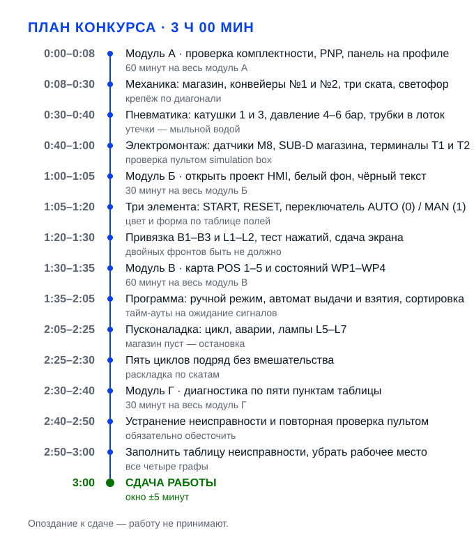
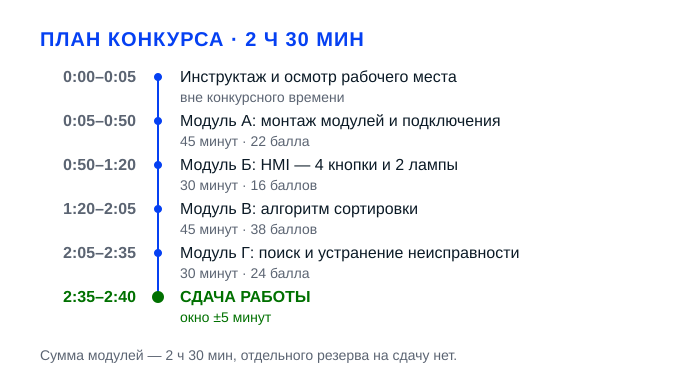
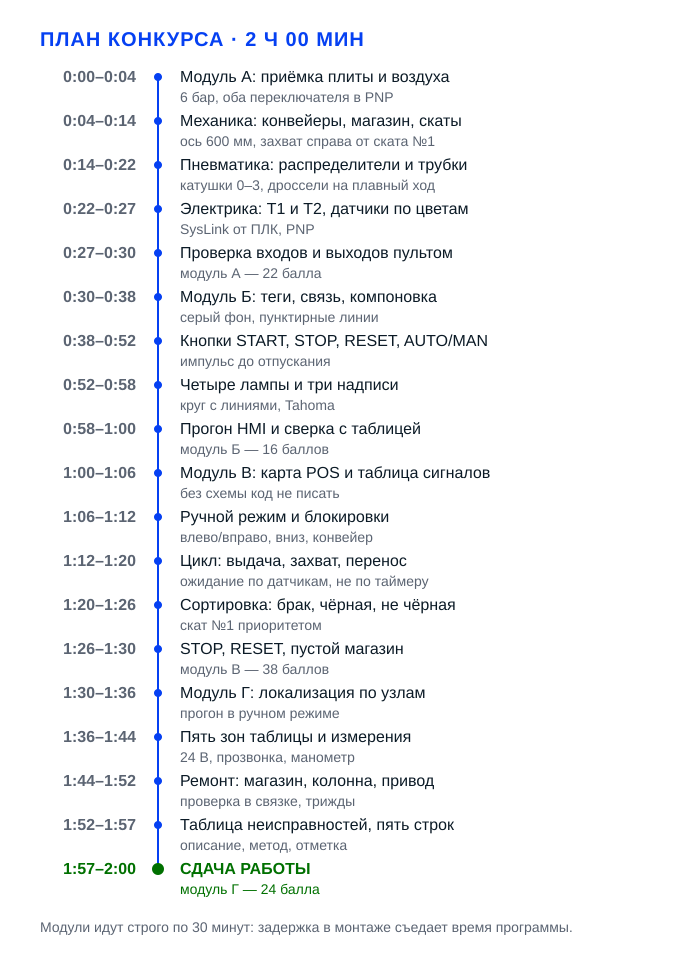

Мехатроника (Р)
Задания ниже — официальные файлы «Абилимпикс» (источник: abilympics-russia.ru), разложенные по категориям. Решения написаны по тексту задания, регламенту и критериям оценки; в них указано, что именно проверяет эксперт.
Школьник
14–16 лет, базовый уровень заданияВыдержка из официального конкурсного задания: страницы, относящиеся к категории «Школьник» (стр. 4–16 источника).
Пошаговое решение
Конкурсное задание категории «Школьники» длится три часа и состоит из четырёх модулей: шестьдесят минут на монтаж станции перемещения материалов, тридцать — на человеко-машинный интерфейс, шестьдесят — на алгоритм перемещения заготовок и тридцать — на поиск и устранение неисправности. Станция состоит из магазинного модуля с выдвижным цилиндром, захвата на каретке, двух конвейеров и трёх скатов, а заготовки различаются цветом и положением. Порядок здесь жёсткий: сначала механика и подключения, потом проверка каждого сигнала пультом simulation box, и только затем программа, которую есть чем проверить. Ремонт идёт последним и опирается на то же самое: неисправность ищут там, где вы сами только что собирали, и описание в таблице должно совпасть с тем, что реально было сломано.

Задача 1. Смонтировать станцию перемещения материаловМодуль А · 60 минут
Модуль А даёт шестьдесят минут, и за это время станция должна не просто стоять на плите, а быть проверяемой: механика собрана по рисунку 2, пневматика подключена к пневмоострову, датчики и цилиндры разведены по клеммникам T1 и T2 согласно таблицам конкурсного задания. Результат модуля сформулирован в задании буквально: все модули закреплены на монтажной плите, пневматические и электрические подключения выполнены верно, а проверка выполняется пультом simulation box по каждому входу и выходу. Здесь важно не гнаться за скоростью: каждый перепутанный провод, который вы не поймали на этапе монтажа, придётся искать уже на программировании, когда время модуля В идёт в обратную сторону.
Действие 1.1. Осмотреть оборудование и подготовить плиту
Шаг 1.1.1
Начинаем с обхода тележки и сверяем на монтажной плите наличие всех узлов, которые перечислены на рисунке 2 конкурсного задания: станции перемещения материалов, позиции выдачи деталей из магазина, позиции сброса на скат №1, скатов №2 и №3, конвейеров №1 и №2 и оптического датчика «заготовка перевёрнута». Каждый узел берём за корпус и пробуем покачать: крепление не должно щёлкать. Крепёж сразу раскладываем горстями у своих узлов, а не в общую кучу на краю плиты, потому что винты М5 от конвейера и от магазина отличаются длиной на пару миллиметров и путаются именно в спешке.
Результат модуля А сформулирован в задании буквально: все модули закреплены на монтажной плите, пневматические и электрические подключения выполнены верно. Пропущенный узел обнаруживается на программировании, когда выясняется, что нет сигнала с оптического датчика, — и искать его в уже собранной станции вдвое дольше. Кроме того, осмотр до начала сборки остаётся единственным моментом, когда некомплект можно предъявить эксперту и получить замену.
На плите стоят все восемь узлов с рисунка 2, крепёж рассортирован по местам, ни один узел не качается и не щёлкает. Клеммники T1 и T2 на месте и подписаны; если заводская маркировка стёрлась, восстановите её маркером сразу, пока панель ещё снята.
Частая ошибка — собирать из того, что попалось под руку, а недостающий скат искать по всему участку через полчаса. Вторая — принять узел с треснувшим кронштейном и увидеть трещину только после затяжки, когда она разошлась и узел встал с перекосом.
Эксперт проходит вдоль плиты в первые минуты модуля и отмечает, осмотрен ли участок или работа начата вслепую; некомплект, о котором участник промолчал, считается его ошибкой.
Шаг 1.1.2
Находим два переключателя «PNP/NPN» — один на входном модуле датчиков захвата, второй на магазинном модуле — и переводим оба в положение PNP. Переключатель утопленный и мелкий, поэтому нажимаем не ногтем, а тонкой шлицевой отвёрткой, и после щелчка проверяем положение глазом, а не на ощупь. Заодно осматриваем ответные части разъёмов M8 и SUB-D: в них не должно быть согнутых ножек, мусора и следов старой смазки, а фиксирующие кольца должны проворачиваться от руки.
В задании это вынесено отдельным предупреждением, и не случайно: при NPN датчик выдаёт минус вместо плюса, ПЛК видит постоянную единицу на всех входах, и станция не реагирует ни на одну команду. Искать такую неисправность в программе можно бесконечно, потому что код при этом написан правильно, а ошибка сидит в двух щелчках переключателя.
Оба переключателя стоят в PNP, это видно по метке и подтверждается щелчком. Позже, на проверке пультом, входы обязаны вести себя по-разному при подаче и снятии сигнала; если все семь входов терминала T1 сразу показывают единицу, возвращайтесь к переключателям.
Оставить один переключатель в NPN и «исправить» это инверсией в программе: инверсия маскирует симптом, но при смене заготовки на чёрную датчик снова ведёт себя непредсказуемо, и цикл срывается на сортировке.
Эксперт проверяет положение переключателей выборочно, вместе с проверкой сигналов пультом, и перевёрнутый PNP/NPN для него — маркер невнимательного монтажа.
Шаг 1.1.3
Ставим монтажную панель для клеммников на монтажный профиль тележки: профиль заводим в паз, панель выравниваем по горизонту и наживуливаем два винта от руки, после чего добираем ключом на 10 вполоборота — до упора, но без вминания профиля. Панель разворачиваем так, чтобы отверстие для кабеля оставалось открытым и смотрело в сторону жгута. Проверяем это не на глаз, а рукой: палец должен проходить в отверстие и выходить наружу без задевания за соседний модуль.
Панель — точка, где сходится вся электрика станции: два терминала, десятки клемм, питание и земля. Если она прикручена криво или перекрывает кабельный канал, жгут придётся вести поверх плиты, и критерий «прокладка кабелей и пневмотрубок» шкалы профессиональной практики (0–3) снизится независимо от того, работает станция или нет.
Панель не шатается при нажатии пальцем, винты затянуты равномерно, отверстие для кабеля просматривается насквозь. Пузырьковый уровень, положенный на панель, показывает отклонение не больше одного деления, иначе клеммники встанут с перекосом.
Закрутить винты с перекосом: один край панели вминается в профиль, клеммник садится с натягом, и при первом же подключении провод выскакивает из-под винта — а вы ищете обрыв сигнала в датчике. Вторая ошибка — притянуть панель к наклонному профилю без шайбы: винт садится косо и вырывает резьбу при первой же подтяжке.
Оценивается в блоках «Механика» и «Электромонтаж»: эксперт смотрит на геометрию панели и на то, закрыт ли кабельный канал другими модулями. Смотрит и на то, не перекрыт ли кабельный канал соседним модулем.
Действие 1.2. Собрать механическую часть станции
Шаг 1.2.1
Магазинный модуль ставим у левого края плиты так, чтобы выдвижной цилиндр смотрел в сторону конвейера №1, и крепим четырьмя винтами М5: сначала наживуливаем все четыре, потом добираем по диагонали — так узел садится без перекоса. Конвейеры №1 и №2 стыкуем лента к ленте, проверяя, что первая выходит точно на линию взятия, а вторая принимает деталь без ступеньки. Скаты №1, №2 и №3 крепим так, чтобы приёмные лотки оказались под позициями сброса захвата, а не сбоку от них.
Каждый миллиметр смещения здесь превращается в потерянную заготовку: деталь, сошедшая с ленты мимо лотка, падает на плиту и останавливает цикл. По заданию на скат №1 уходят отбракованные заготовки, а скаты №2 и №3 принимают годные, значит все три лотка обязаны попадать в зону хода каретки — иначе алгоритм перемещения физически невыполним.
Прокатываем заготовку по ленте рукой: она сходит на приёмный лоток и не задевает кромку. Каретку, проведённую рукой над скатами, проверяем на задевание за бортики, а между лентами щупаем стык пальцем — ступеньки быть не должно.
Притянуть конвейер одним винтом, а второй оставить «на потом»: лента встаёт под углом, деталь уходит в сторону, и на программировании вы ищете ошибку в таймингах вместо перекошенного модуля. Третья ошибка — крепить скат на два винта из четырёх: под весом детали лоток проседает, и заготовка сходит мимо приёмного окна.
Смотрит на стыки модулей и на зазоры между лентой и лотками — это самая частая причина работы «через раз», и её видно без запуска программы. Отдельно проверяет, нет ли зазора между лотком и плитой, куда может провалиться деталь.
Шаг 1.2.2
Выводим станцию в исходное положение, заданное в конкурсном задании: механизм подачи деталей из магазина выдвинут, модуль захвата стоит справа от ската №1, захват открыт и опущен. Каретку двигаем рукой за корпус, а не за пневмотрубку, цилиндр магазина выдвигаем, продавив ручной дублёр на пневмоострове. После установки проверяем, что ни один узел не упирается в соседний, ни один провод не натянут и ни одна трубка не зажата между модулями.
Начальное положение — точка отсчёта для всей программы: алгоритм стартует из него, и датчики «захват поднят» и «захват опущен» должны давать строго определённую комбинацию. Если каретка остановилась между позициями, первый же шаг цикла пойдёт в неверную сторону, а участник будет искать причину в логике, где всё написано правильно.
Захват открыт и опущен, каретка справа от ската №1, шток магазина выдвинут. Светодиоды на датчиках положения горят так, как ожидается по таблице входов терминала T1; проверить комбинацию можно пультом simulation box ещё до подачи питания на приводы.
Оставить каретку в середине хода: датчик не видит ни «поднят», ни «опущен», программа ждёт сигнала и стоит на первом шаге, а время модуля В уходит на поиск несуществующей ошибки. И не оставляйте станцию в промежуточном положении после проверки: следующий запуск начнётся не оттуда, и первый шаг программы уйдёт в пустоту.
Эксперт проверяет исходное положение перед первым запуском и отдельно — после модуля В: станция должна возвращаться в него сама, без помощи рукой. Сверяет фактическое положение механизмов с рисунком исходного положения в задании.
Шаг 1.2.3
Прогоняем каждый механизм рукой по полному ходу: каретку захвата из правого крайнего положения в левое и обратно, цилиндр магазина от втянутого до выдвинутого, сепаратор №1 до упора. Ведём медленно и прислушиваемся: хруст, скрип или рывок означают, что где-то перетянут винт или под кромку попал провод. В конце каждого хода механизм обязан упираться в жёсткий упор, а не в трубку или кабель, иначе ход будет мягким и пружинящим.
Пневматика не умеет останавливаться там, где кончается ход: если механизм во что-то упирается, цилиндр либо не доходит до датчика, либо потихоньку гнёт кронштейн. Пульт simulation box проверяет сигналы, а не механику, поэтому клин, который вы не поймали рукой, всплывёт на первом же автоматическом цикле — уже в модуле В, где время дороже.
Все три механизма проходят ход до упора без рывков, а датчики срабатывают до механического упора, а не после него. Пальцем проверяем зазор между кареткой и кожухом в крайних положениях: он должен быть не меньше двух миллиметров.
Оставить пневмотрубку в зоне хода каретки: на третьем цикле она перетирается о кромку, цилиндр начинает двигаться вяло, и участник меняет исправный пневмоцилиндр вместо того, чтобы переложить шланг. Особенно опасно оставить в зоне хода стяжку жгута: она перетирает изоляцию за пару циклов, а короткое замыкание на входе ищется дольше всего.
Оценивается в блоке «Механика»: прогон рукой эксперт замечает и считает признаком того, что участник думает о механике, а не только о программе. Прогон рукой занимает минуту и снимает половину сюрпризов на пусконаладке.
Шаг 1.2.4
Собираем сигнальную колонну: вкручиваем лампы в цоколи по цветам, красную сверху, жёлтую в середине, зелёную внизу, и крепим колонну на стойке у правого края панели так, чтобы её было видно с рабочего места оператора. Провода от колонны ведём вниз вдоль профиля и заводим в кабельный канал, а не поверх плиты. Цоколи затягиваем от руки: перетянутый цоколь лопается при первом нагреве, и лампа перестаёт гореть ровно тогда, когда её проверяют.
По таблице выходов терминала T2 три лампы управляются отдельными выходами DO0, DO1 и DO2, и в легенде задания они расписаны как красная, зелёная и жёлтая сигнальные. Перепутанные цвета — не косметика: программа включает зелёную, а на станции загорается красная, и эксперт фиксирует, что индикация не соответствует алгоритму, даже если цикл идёт.
Колонна стоит вертикально, колпаки затянуты, провода убраны в канал и не болтаются. Прозвонкой или пультом проверяем, что каждая лампа загорается от своего выхода: DO0 — красная, DO1 — зелёная, DO2 — жёлтая, как задано в таблице.
Поставить колонну за кареткой: на цикле вы не видите аварию, а эксперт при проверке индикации не может определить, какая лампа горит, и засчитывает пункт как невыполненный. Вторая ошибка — притянуть стойку колонны к тонкой панели без усиливающей шайбы: при первом рывке каретки стойка наклоняется, и лампа светит в стену, а не в зал.
Смотрит на сборку колонны в блоке «Электромонтаж» и на соответствие цветов при проверке выходов терминала T2. Проверяет и то, видна ли колонна из-за каретки в крайних положениях.
Действие 1.3. Подключить пневматику
Шаг 1.3.1
Подключаем пневмоостров по таблице задания: на катушку 1 ставим провод «открыть захват» (коричневый, ножка 2 разъёма), на катушку 3 — «переместить захват вниз» (жёлтый, ножка 4). Катушка 0 остаётся свободной, а катушка 2 не используется, но у неё есть ручной дублёр ВКЛ — на нём проверяем, что клапан щёлкает и шипит. Разъём SUB-D затягиваем двумя винтами поочерёдно, по пол-оборота каждый, иначе корпус перекосит и контакты сядут неплотно.
Пневмоостров — единственное место, где электрический сигнал превращается в движение, и ошибка на одну катушку даёт зеркальное поведение станции: захват закрывается вместо того, чтобы открыться. В задании ножки и цвета жил заданы жёстко, потому что при монтаже по памяти путаются именно соседние катушки, а не дальние.
Подаём по одному сигналу с пульта и смотрим на клапаны: катушка 1 открывает захват с коротким шипением, катушка 3 опускает его вниз. Перепутанные катушки видны сразу, потому что захват дёргается не в ту сторону. Винты разъёма затянуты, колодка не люфтит.
Подключить катушку 2 вместо 3 и оставить ручной дублёр включённым: захват идёт вниз постоянно, давление садится, и участник ищет утечку в магистрали вместо ошибки в номере катушки. Третья ошибка — не затянуть винты разъёма: колодка отходит от вибрации, катушка срабатывает через раз, и отказ проявляется чаще всего на третьем цикле.
Проверяет соответствие ножек таблице при прозвонке и отдельно смотрит, не оставлены ли ручные дублёры во включённом положении. Смотрит также, подписаны ли трубки у распределителя, или их придётся искать на ощупь.
Шаг 1.3.2
Подаём воздух на станцию и выставляем давление по манометру редуктора в пределах 4–6 бар — ровно столько, чтобы цилиндры шли без удара в конце хода. Дальше ищем шипение мыльной водой по всем стыкам: пузыри показывают место утечки быстрее, чем слух, особенно на цанговых фитингах, которые шипят почти беззвучно. После этого прогоняем каждый цилиндр по пять раз подряд и смотрим, не падает ли скорость хода от цикла к циклу.
Утечка съедает давление постепенно: первый цикл проходит, а на пятом захват не дожимает деталь, и она выскальзывает мимо ската. Эксперт оценивает и чистоту работы, и стабильность цикла, а нестабильность почти всегда родом из соединений, которые не проверили на слух и мыльной водой.
Манометр держит выставленное значение при неподвижной станции, а при подаче сигнала стрелка проседает не больше чем на 0,3 бара. Пузырей на стыках нет, конденсат из фильтра слит, быстросъёмные соединения сидят до упора.
Выкрутить давление на максимум ради скорости: цилиндры бьют в упоры, кронштейны разбалтываются, а деталь на скате отскакивает и улетает с лотка. Вторая ошибка — не слить конденсат перед началом: вода уходит в цилиндр, ход становится вялым, и к концу модуля захват перестаёт дожимать деталь.
Смотрит на манометр и на характер хода цилиндров: слишком резкий ход читается как неотлаженная пневматика, даже если логика работает. Обращает внимание на шипение при движении: оно слышно и без мыльной воды, если рядом постоять.
Шаг 1.3.3
Укладываем пневмотрубки в лоток ровными пучками, без пересечений и петель: каждая трубка идёт от распределителя к своему цилиндру по кратчайшему пути, с радиусом изгиба не меньше трёх диаметров. Концы обрезаем строго под прямым углом и вставляем в цанговый фитинг до упора, после чего слегка тянем назад — трубка должна остаться в фитинге. Лишнюю длину не сматываем кольцом, а укорачиваем труборезом.
Прокладка пневмотрубок и кабелей — отдельный критерий шкалы профессиональной практики, который эксперт оценивает от нуля до трёх, и оценивает его глазами, без запуска станции. Но дело не только в баллах: трубка, уложенная с натягом, при ходе каретки выдёргивается из фитинга, и станция теряет движение в самый неудобный момент — на сдаче.
Все трубки лежат в лотке, на фитингах нет колец и подмотки, каждая трубка при натяжении рукой держится. При движении каретки ни одна трубка не натягивается струной и не задевает за кромку профиля. Концы трубок не должны быть подрезаны ножницами на глаз: косой срез травит по цанге.
Оставить лишний метр трубки петлёй: на ходе каретки петля цепляется за профиль, трубка выдёргивается, и участник ищет причину в исправной катушке, теряя на этом полмодуля. Вторая ошибка — тянуть трубку из фитинга силой, не нажав цангу: срез сминается, и соединение начинает подтравливать даже при исправном фитинге.
Оценивает аккуратность укладки отдельно от работоспособности: это два разных критерия, и второй не компенсирует первый. Смотрит на пучок целиком: он должен читаться как жгут, а не как спутанный клубок.
Действие 1.4. Выполнить электромонтаж и проверить сигналы
Шаг 1.4.1
Разводим датчики по многополюсному I/O модулю строго по таблице цветов задания: белая жила разъёма M8 идёт на вход 0 (модуль захвата в позиции скат №1), коричневая — на вход 1 (позиция «Магазин»), зелёная — на вход 2 (скат №2), жёлтая — на вход 3 (захват опущен), серая — на вход 4 (деталь не чёрная), розовая — на вход 5 (захват поднят). Бело-зелёную жилу с ножки 13 вешаем на 24V, коричнево-зелёную и бело-жёлтую с ножек 14 и 15 — на 0V. В клемму зажимаем по одной жиле и каждую после затяжки слегка дёргаем.
Цвета в таблице подобраны так, чтобы ошибку было видно глазами: серая жила — единственный сигнал «деталь не чёрная», и если она попадёт на соседний вход, программа начнёт отбраковывать все заготовки подряд. Шесть сигнальных жил, уложенных по таблице, дают предсказуемое поведение входов при проверке пультом, а это единственное доказательство того, что электромонтаж выполнен верно.
Идём по таблице сверху вниз и проверяем каждый вход пультом: подаём единицу и смотрим, какой светодиод загорелся. Белая жила должна давать позицию у ската №1, серая — «деталь не чёрная»; если соответствие сбито, клемму переставляем сразу, пока помните, откуда сняли.
Зажать в одну клемму две жилы, потому что рядом: контакт держится на одной, вторая выскальзывает при вибрации, и вход начинает ловить помехи от соседнего кабеля. Вторая ошибка — обрезать жилу слишком коротко: провод натягивается, и при открывании дверцы контакт выходит из клеммы без всякой вибрации.
Проверяет два-три входа из таблицы наугад и смотрит, нет ли на клеммах оголённых жил и лишних перемычек. Обращает внимание на то, подписаны ли жилы у разъёма и не перепутаны ли 24V с 0V.
Шаг 1.4.2
Подключаем кабель магазинного модуля по его таблице: белый провод с ножки 1 сажаем на вход I0 «цилиндр выдвинут», коричневый с ножки 2 — на выход Q0 «выдать заготовку из магазина», зелёный с ножки 3 — на вход I1 «цилиндр втянут», жёлтый с ножки 4 — на выход Q1, серый с ножки 5 — на вход I2 «магазин пуст». Питание подаём по ножкам 12 и 13 (24VA и 24VB), землю — по ножкам 14 и 15 (GND A и GND B). Кабель укладываем с запасом на разъём, чтобы при открывании дверцы он не натягивался.
Магазин стоит в начале всей цепочки: если не приходит команда Q0, станция не выдаёт заготовку и дальше не работает ничего, хотя остальные подключения при этом верны. Сигнал «магазин пуст» выведен на отдельный вход I2 не для красоты — он позволяет программе корректно завершить смену, а не крутить пустой цикл до конца модуля.
Проверяем пультом: сигнал на I0 и I1 меняет состояние соответствующих входов, а команда на Q0 выдвигает шток с отчётливым щелчком. Вход I2 ведёт себя правильно: без заготовок в лотке сигнал есть, после загрузки одной заготовки — пропадает.
Перепутать ножки 12 и 13 с землёй: модуль не выходит на связь, питание проседает, и участник ищет неисправность в ПЛК, тогда как причина в двух переставленных проводах. Вторая ошибка — вести кабель магазина поверх плиты: его цепляет каретка, жилы рвутся внутри изоляции, и такой обрыв ищется дольше любого другого.
Смотрит питание и землю первым делом, потому что перепутанные ножки 12–15 выбивают магазинный модуль целиком. Просит показать реакцию на сигнал «магазин пуст»: этот вход чаще всего остаётся неподключённым.
Шаг 1.4.3
Проверяем разводку терминалов по таблицам задания, начиная с T1: DI0 — заготовка перевёрнута, DI1 — позиция взятия с конвейера №1, DI2 — отбракованные на скате №1, DI3 — позиция взятия со второго конвейера, DI4 — заготовка в позиции взятия, DI5 — захват поднят, DI6 — захват опущен. Выходы T1: DO0 выдаёт заготовку, DO1 гонит конвейер №1, DO2 ведёт захват влево, DO3 вправо, DO4 вниз, DO5 закрывает захват, DO6 гонит конвейер №2. На T2 остаются «заготовка не чёрная», наличие заготовки у сепаратора №1, два положения штока магазина и четыре выхода — три лампы и сепаратор.
Таблица входов-выходов — это контракт между железом и программой: пока адреса совпадают, алгоритм пишется, не глядя на клеммы. Сдвиг на один адрес ломает всё сразу и незаметно: станция реагирует, но не тем движением, и искать это в коде почти бессмысленно, потому что код написан правильно.
Проходим по таблице сверху вниз с пультом: подаём сигнал на вход и смотрим номер горящего светодиода, затем включаем выход и смотрим, что двинулось. Несовпадение хотя бы одного адреса — стоп до исправления, потому что дальше проверять уже нечего.
Начать проверку с выходов и бросить её на середине: половина адресов остаётся непроверенной, и первый же непроверенный оказывается сдвинутым ровно на единицу. Вторая ошибка — проверять только те адреса, которые уже используются в программе: остальные остаются с сюрпризом до самой сдачи.
Эксперт проверяет по оценочному листу именно терминалы T1 и T2, поэтому номера входов и выходов должны совпадать с таблицей буквально. Просит назвать адрес любого выхода наугад: если участник тянется к распечатке, значит таблицу он не освоил.
Шаг 1.4.4
Подсоединяем simulation box к клеммнику входов-выходов станции и переводим его в режим задания выходов 0–7. По очереди включаем каждый выход и смотрим на станцию: DO0 выдаёт заготовку из магазина, DO1 гонит ленту конвейера №1, DO2 ведёт каретку влево, DO3 вправо, DO4 опускает захват, DO5 закрывает, DO6 гонит конвейер №2. После каждого включения снимаем сигнал и ждём, пока механизм вернётся, а не гоняем выходы подряд.
Проверка выходами быстрее всего отделяет электрику от программы: если механизм не двигается от принудительного сигнала, никакая программа его не оживит. По заданию проверка выполняется пультом simulation box, и это прямо записано как условие завершённости модуля А, значит без такой проверки модуль не считается сданным.
Каждый из семи выходов T1 даёт ровно одно ожидаемое движение и ничего лишнего. Направления совпадают с названиями: DO2 действительно ведёт влево, к конвейеру №1, а DO3 вправо, к конвейеру №2, хотя по расположению кажется наоборот.
Проверять выходы на слух, не глядя на механизм: щелчок клапана есть, а шток стоит из-за закрытого ручного дублёра, и участник считает выход исправным до самого запуска программы. Вторая ошибка — не проверять DO5 отдельно: закрытие захвата подтверждается только нажатием на створки рукой, по одному щелчку клапана его не увидеть.
Смотрит, проверены ли все семь выходов, а не два удобных, и переносит результат в оценочный лист по терминалам. Фиксирует, сколько выходов проверено, и сравнивает с семью по таблице задания.
Шаг 1.4.5
Проверяем входы 0–7: по очереди подаём сигнал с пульта и смотрим, что вход его видит и на станции загорается нужный светодиод. Затем повторяем то же механически — подносим заготовку к оптическому датчику, ставим её дном вверх, перекрываем датчик сепаратора. В конце укладываем жгут в канал, крепим стяжками с шагом 10–15 сантиметров и подписываем оба терминала маркером.
Вход, который не видит деталь, программа воспринимает как отсутствие заготовки, и цикл либо не стартует, либо крутится вхолостую. Задание требует проверки входов пультом наравне с выходами, а подписанные терминалы нужны вам же в модуле Г, когда придётся объяснять эксперту, где именно вы искали пропавший сигнал.
Все семь входов T1 реагируют и на сигнал пульта, и на реальное воздействие: заготовка перед оптическим датчиком даёт единицу на DI0, та же заготовка дном вверх — единицу на DI4. Жгут лежит в канале, стяжки не передавливают изоляцию, маркировка читается без приседания.
Проверить входы только пультом, не поднося деталь: сигнал идёт на клемму, а сам датчик может быть не подключён, и вы уходите в программирование с мёртвым входом. Вторая ошибка — оставить жгут на весу: он провисает, цепляется за каретку и перетирается у самого разъёма, где обрыв труднее всего заметить.
Отмечает маркировку и порядок в жгуте — это часть критерия «Прокладка кабелей и пневмотрубок» шкалы от нуля до трёх. Смотрит на маркировку терминалов: она должна быть на обоих, а не только на T1.
Задача 2. Разработать человеко-машинный интерфейс на три кнопкиМодуль Б · 30 минут
На HMI-панели должны появиться ровно три элемента: кнопка START зелёного цвета в форме прямоугольника, кнопка RESET синего цвета такой же формы и переключатель AUTO (0) / MAN (1) — синий переключатель на сером фоне, тоже прямоугольный. Цвет текста чёрный, фон панели белый, и это не пожелание, а требование задания: любое отклонение по цвету или форме читается как невыполненный пункт. Тридцать минут — срок небольшой, поэтому экран собирается не «как получится», а по сетке: сначала места под элементы, потом сами элементы, потом привязка к адресам входов и индикации. Отдельно помните, что переключатель режимов обязан возвращать ноль в автоматическом режиме и единицу в ручном: именно по этому состоянию программа выбирает ветку работы, и перевёрнутая логика ломает весь цикл, хотя на панели всё выглядит правильно.
Действие 2.1. Собрать экран по требованиям задания
Шаг 2.1.1
Открываем проект HMI-панели и первым делом ставим фон экрана белым, а шрифт чёрным: в задании эти два цвета заданы прямо, вместе с оговоркой, что цвет текста чёрный, а цвет фона панели белый. Дальше размечаем сетку — три поля в один ряд, каждое примерно 160 на 80 пикселей, с отступами по двадцать пикселей между ними. Сетку рисуем вспомогательными линиями и потом удаляем, чтобы элементы не «плавали» при переносе и не съезжали после сохранения проекта.
Тридцать минут на модуль — это время, за которое экран нужно не нарисовать красиво, а собрать по требованиям: три элемента, заданные цвета, прямоугольная форма. Сетка экономит главное — она не даёт элементам разъехаться, а разъехавшийся экран эксперт читает как небрежность и снижает оценку за интерфейс целиком, хотя кнопки работают.
Фон белый, весь текст чёрный, ни одного цветного шрифта. Элементы стоят на одной линии, отступы между ними одинаковые; проверяется линейкой по пикселям в редакторе, а не на глаз, потому что на глаз разница в пять пикселей не видна.
Оставить фон панели серым по умолчанию: кнопки на нём сливаются, а требование о белом фоне оказывается невыполненным, хотя все три элемента на месте. Вторая ошибка — рисовать элементы прямо на вспомогательных линиях: после удаления сетки они сдвигаются на пару пикселей, и выравнивание теряется.
Смотрит на включённый экран: цвета и формы проверяются визуально, и первое, что видно издалека, — фон панели. Сравнивает экран с таблицей модуля Б по расположению, а не только по цветам.
Шаг 2.1.2
Ставим кнопку START: прямоугольник с зелёной заливкой, надпись START чёрным шрифтом по центру, кегль не меньше двадцати пунктов, чтобы читалось с расстояния вытянутой руки. Рядом ставим кнопку RESET: такой же прямоугольник, но синий. Обе делаем моментными, то есть возвращающимися в исходное состояние после отпускания, — в задании они названы кнопками, а не переключателями, и это различие принципиально для программы.
По таблице модуля Б поле START — кнопка зелёного цвета, поле RESET — кнопка синего, обе прямоугольные. Если сделать START переключателем, программа получит устойчивую единицу и запустит второй цикл поверх первого; если перекрасить кнопку, пункт по цвету не засчитают даже при полностью рабочей станции.
START зелёная и прямоугольная, RESET синяя и прямоугольная, надписи читаются, цвет текста чёрный. Нажатие и отпускание возвращает кнопку в исходное состояние — проверяем в режиме эмуляции, до загрузки проекта в панель.
Сделать кнопки круглыми, потому что так привычнее: форма задана как прямоугольник, и это отдельный проверяемый признак, который теряется независимо от работоспособности. Вторая ошибка — сделать надписи белыми на цветной заливке: задание требует чёрный текст, и пункт по цвету текста не засчитывается, хотя кнопка работает.
Сверяет таблицу полей модуля Б с экраном по четырём признакам на каждый элемент: название, тип, цвет и форма. Проверяет кнопки нажатием: моментная кнопка должна отпускаться сама, без второго клика.
Шаг 2.1.3
Третий элемент — переключатель режимов: прямоугольник с серым фоном, внутри синий переключатель в двух положениях, подписи AUTO (0) и MAN (1) чёрным. Делаем его именно переключателем с фиксацией, а не двумя отдельными кнопками: положение 0 соответствует автоматическому режиму, положение 1 — ручному. Подписи расставляем так, чтобы было понятно, какое положение какому режиму отвечает, и не перекрывали сам движок переключателя.
В таблице поле описано как переключатель с синим элементом на сером фоне, и это единственный элемент панели, который хранит состояние между нажатиями. По легенде задания B2 — это «Автоматическое (0) / Ручное (1)», и программа выбирает ветку именно по этому биту: перевёрнутая логика запускает ручной режим там, где ждут автомат.
Переключатель визуально отличается от двух кнопок, серый фон присутствует, синий элемент двигается между двумя положениями и держится в каждом. В эмуляции положение 0 даёт ноль на адресе, положение 1 — единицу, и это видно в окне переменных.
Сделать переключатель без фиксации: он возвращается в ноль сам, станция остаётся в автоматическом режиме, а участник уверен, что перевёл её в ручной и проверяет команды впустую. Вторая ошибка — подписать только одно положение: тогда непонятно, какой бит соответствует автомату, и логику приходится проверять наугад.
Переводит переключатель в оба положения по очереди и смотрит, что подписи не перекрывают движок и читаются без наклона. Смотрит, что серый фон есть именно у переключателя, а не у всей панели целиком.
Действие 2.2. Привязать элементы к сигналам и проверить
Шаг 2.2.1
Привязываем элементы к адресам: START — на B1, переключатель режимов — на B2, RESET — на B3, как в легенде модуля В, где кнопки названы по именам. Индикацию лампы START (L1) и лампы RESET (L2) выводим на те же поля, чтобы кнопка подсвечивалась при нажатии и гасла при отпускании. Адреса прописываем в свойствах элементов, а не в скрипте экрана: скрипт труднее проверить, и ошибку в нём эксперт не увидит до запуска.
Адрес связывает картинку с железом, и промах на один адрес даёт ситуацию, когда нажатие START включает RESET. В легенде задания имена B1–B4 и L1–L7 заданы явно, эксперт сверяет именно их, поэтому придумывать свои имена тегов бессмысленно: совпадение с легендой и есть проверяемый результат модуля Б.
Нажатие START в эмуляции даёт единицу на B1 и подсвечивает L1, RESET даёт единицу на B3 и подсветку L2, переключатель — на B2. Все три адреса видны в свойствах элементов и совпадают с легендой без сдвигов.
Привязать кнопку к соседней строке в списке адресов: адреса идут подряд, и промах на одну строку не виден до первого запуска, когда START начинает сбрасывать цикл. Вторая ошибка — привязать подсветку не к той лампе: кнопка светится, а на станции загорается другая сигнальная лампа, и по индикации невозможно понять состояние.
Открывает свойства элементов и сверяет адреса с легендой B1–B3 и L1–L2 — это быстрее и надёжнее, чем проверять нажатиями. Сверяет не только B1–B3, но и то, что лишних кнопок и полей на экране нет.
Шаг 2.2.2
Проверяем переключатель в обе стороны: ставим MAN, смотрим, что бит B2 равен единице и держится, затем возвращаем AUTO и убеждаемся, что бит сбросился в ноль. Дальше тест нажатий: жмём каждую кнопку по десять раз подряд и следим, нет ли двойных срабатываний и залипания подсветки. В конце отходим на два шага от панели и читаем надписи: если START угадывается, а AUTO (0) / MAN (1) нет, кегль увеличиваем сразу.
Двойное срабатывание кнопки в автоматическом цикле выглядит как пропущенный шаг: программа получает два фронта и перескакивает позицию, а искать причину вы будете в алгоритме. Читаемость проверяют с расстояния, потому что оператор стоит у станции, и мелкая надпись — это не вопрос эстетики, а риск ошибки при управлении.
Переключатель держит каждое положение и выдаёт правильный бит, кнопки не залипают и не дают двойных фронтов, надписи читаются с двух шагов. Цвета соответствуют заданию: зелёная START, синяя RESET, серый фон у переключателя.
Оставить подсветку кнопки включённой после отпускания: оператор думает, что команда ещё активна, жмёт повторно, и цикл получает лишний фронт. Вторая ошибка — проверять кнопку одним щелчком: двойной фронт проявляется только на серии из десяти нажатий подряд.
Смотрит панель с расстояния и проверяет переключатель в обоих положениях — это самые быстрые проверки модуля Б, и они занимают у эксперта меньше минуты.
Шаг 2.2.3
Проверяем, что RESET делает именно сброс, а не остановку: нажимаем его во время цикла и смотрим, что станция прекращает текущую операцию, снимает аварийную индикацию и возвращает каретку в исходное положение, но счётчик обработанных деталей не обнуляет. Остановку цикла делаем отдельно — по кнопке STOP станции, которая в легенде обозначена как B4 и физически стоит на пульте, а не на панели. Если RESET ведёт себя как STOP, разделяем эти две функции в программе.
В легенде задания B3 — это RESET, а B4 — STOP, и это разные команды с разными последствиями: сброс возвращает станцию в рабочее состояние, остановка прекращает работу до следующего пуска. Слить их в одну кнопку значит потерять либо возможность перезапуска после аварии, либо возможность нормально остановить цикл, и эксперт увидит это на первой же проверке.
RESET во время цикла останавливает операцию, возвращает каретку в исходное и сохраняет счётчик; повторный START запускает цикл с того же места по числу деталей. STOP прекращает работу полностью и требует повторного пуска.
Повесить RESET на общий сброс программы: счётчик обнуляется, и после третьей аварии вы не можете доказать, сколько заготовок реально обработано. Вторая ошибка — сделать RESET кнопкой аварийного останова: после сброса станция не возвращается в исходное положение, и следующий цикл начинается из случайной точки.
Проверяет RESET и STOP по очереди и смотрит на счётчик — расхождение в поведении сразу заметно по индикации. Смотрит, сохраняется ли счётчик после сброса: по нему видно, как реализована команда.
Действие 2.3. Загрузить экран в панель и сдать модуль
Шаг 2.3.1
Делаем финальный проход по экрану вместе с программой: по очереди нажимаем все три элемента и смотрим, что происходит на станции, а не только на панели. Затем сверяем экран с таблицей модуля Б ещё раз, признак за признаком: START — кнопка, зелёная, прямоугольник; RESET — кнопка, синяя, прямоугольник; переключатель — синий на сером фоне, прямоугольник; текст чёрный, фон белый. Всё, что не совпало, правим до сдачи модуля.
Модуль Б сдают раньше, чем модуль В, поэтому ошибка в адресе кнопки обходится дорого: программу вы пишете уже после того, как панель проверена, и обнаруженная позже перепутанная кнопка заставляет переделывать и экран, и логику. Сверка по четырём признакам занимает две минуты и закрывает весь перечень требований задания.
Каждый элемент отрабатывает своё действие на станции, все четыре признака по каждому элементу совпадают с таблицей, фон белый, текст чёрный. На фото или при эксперте экран читается целиком, без обрезанных надписей.
Сверить экран по памяти и пропустить цвет фона: белый фон — отдельное требование, и его отсутствие стоит балла независимо от работающих кнопок. Вторая ошибка — сдавать экран, не проверив его вместе с программой: кнопка светится, а команда не уходит в ПЛК, и это выясняется уже на модуле В.
Сверяет экран с таблицей полей модуля Б и проверяет каждую кнопку действием, а не взглядом. Отмечает, читаются ли надписи на экране целиком, без обрезки по краю поля.
Шаг 2.3.2
Загружаем проект в HMI-панель через кабель и запускаем в режиме онлайн: каждый элемент должен отрисоваться без сдвигов, а переключатель — показать то положение, в котором он реально находится. Если экран смещён относительно корпуса, калибруем касание по четырём точкам в служебном меню панели и после калибровки проверяем, что нажатие точно в центр кнопки срабатывает с первого раза, а не по краю. В конце сохраняем проект под именем станции, чтобы его можно было открыть на следующем модуле.
Разработка HMI — это не только картинка в редакторе: результат модуля Б проверяется на включённой панели, а неоткалиброванный экран даёт промахи нажатий, которые на станции выглядят как отказы кнопок. Тридцать минут модуля уходят именно на эту проверку, поэтому калибровку делают сразу после загрузки, а не в конце модуля В, когда времени уже нет.
Все три элемента отображаются целиком, без обрезки, положение переключателя совпадает с фактическим. Нажатие в центр каждой кнопки срабатывает с первого раза, и повторное нажатие по краю тоже проходит.
Загрузить проект и не калибровать: START срабатывает только при нажатии в левый край, и участник считает это ошибкой адресации, хотя кнопка исправна. Вторая ошибка — проверять панель в режиме редактора: касания там не тестируются, и промах обнаруживается только на станции.
Проверяет экран на включённой панели и нажимает сам: промахи касания ему видны сразу. Смотрит, все ли поля доступны и не осталось ли служебных кнопок на рабочем экране.
Шаг 2.3.3
Сдаём модуль Б явно: приглашаем эксперта, показываем панель в рабочем состоянии, называем адреса B1–B3 и объясняем, что положение 0 оставляет станцию в автоматическом режиме, а положение 1 переводит её в ручной. Панель оставляем в автоматическом режиме и в основном виде экрана, чтобы следующий этап начинался с чистого листа. Время сдачи записываем в блокнот, чтобы планировать остаток конкурса.
Порядок сдачи задан ходом конкурса: панель сдают до программирования, потому что она нужна как пульт оператора. Если экран остался в ручном режиме или в служебном меню, следующий модуль начинается с исправления чужой ошибки, и на алгоритм остаётся меньше времени.
Панель включена, экран в основном виде, переключатель в положении 0, активных аварий нет. Эксперт видел все три элемента в работе, время сдачи записано. Панель должна быть готова к следующему модулю: экран в основном виде, кабели сидят в гнёздах.
Оставить панель в меню калибровки: на этапе программирования вы не видите состояние станции и работаете вслепую, а время уходит на возврат к основному экрану. Вторая ошибка — сдать панель, не записав время: планировать остаток конкурса становится нечем.
Фиксирует время сдачи модуля Б и может вернуться к панели на модуле В, чтобы проверить, что кнопки не переделаны. Ему важно увидеть панель в работе, а не услышать о ней на словах.
Задача 3. Запрограммировать алгоритм перемещения заготовокМодуль В · 60 минут
Программный модуль — самый ёмкий: шестьдесят минут на алгоритм, который выдаёт заготовку из магазина, гонит её конвейером №1 в позицию взятия, снимает захватом и раскладывает по скатам. Легенда задания задаёт пять позиций (буфер магазина, датчик высоты и три ската) и четыре состояния заготовки: дном вверх, чёрная, красная, серебристая. Логика перемещения строится на трёх сигналах — «заготовка перевёрнута», «заготовка не чёрная» и «заготовка в позиции взятия», — и на семи выходах терминала T1, которые двигают конвейеры, каретку и захват. Программа пишется по шагам, а не одним куском: сначала ручной режим, где каждое движение проверяется отдельно, потом автоматический цикл, потом возврат в исходное положение. Проверяют результат не по коду, а по поведению станции: пять циклов подряд без остановок и без вмешательства.
Действие 3.1. Разобрать алгоритм и распределение заготовок
Шаг 3.1.1
Переписываем легенду задания на лист бумаги в виде карты станции: POS 1 — буфер магазина, POS 2 — датчик высоты, POS 3 — скат №1, POS 4 — скат №2, POS 5 — скат №3. Рядом выписываем состояния заготовки: WP1 — дном вверх, WP2 — чёрная, WP3 — красная, WP4 — серебристая. Между картой и таблицей входов-выходов проставляем стрелками, какой датчик подтверждает каждую позицию: DI0 для перевёрнутой, DI4 для заготовки в позиции взятия, DI2 для позиции отбраковки.
Пока позиции не названы теми же словами, что в задании, программа пишется по памяти и разъезжается с легендой: вы делаете три ската, а проверяют пять позиций. Карта на бумаге стоит пяти минут и снимает половину вопросов на пусконаладке, потому что любое движение вы сверяете не с кодом, а с этой картой.
На листе пять позиций и четыре состояния, каждое с номером из легенды. Каждая позиция соединена стрелкой с конкретным входом: скат №1 подтверждается DI2, скаты №2 и №3 — DI3, а буфер магазина — DI4. Номера позиций в записях должны совпадать с легендой цифра в цифру.
Держать легенду в голове: к четвёртому шагу программы номера позиций путаются, и заготовка уезжает на скат №3 вместо ската №2, а участник ищет ошибку в датчиках. Вторая ошибка — не выписать состояния заготовок: тогда непонятно, чем красная отличается от серебристой и по какому признаку их различать.
Смотрит, есть ли у участника схема или записи: работа по легенде видна уже по тому, как он называет позиции вслух. Просит назвать, какой датчик подтверждает каждую позицию из легенды.
Шаг 3.1.2
Описываем переходы так, как они физически возможны: из буфера заготовка выходит цилиндром магазина, по конвейеру №1 доезжает до позиции взятия, затем захват поднимает её и переносит на один из скатов. Возврат каретки делаем только после того, как датчик «захват поднят» подтвердил подъём. Отдельным списком на том же листе записываем запрещённые движения: опускать захват над лентой, закрывать захват без детали в позиции, вести каретку с закрытым захватом над скатом.
Алгоритм без запретов рано или поздно упирается в механику: закрытый захват над лентой цепляет заготовку, и она летит на плиту. Выписанные запреты превращаются в условия программы, и станция перестаёт ломать сама себя даже при ошибке оператора — а именно это эксперт и называет отлаженным циклом.
У каждого перехода на схеме есть подтверждающий датчик, у каждого опасного движения — условие запрета. Проверьте себя одним вопросом: что делает программа, если детали в позиции нет? Ответ должен быть записан, а не подразумеваться.
Пропустить условие «захват поднят»: каретка поедет с опущенным захватом и снесёт бортик ската на первом же цикле, а восстановление бортика в конкурсное время почти невозможно. Вторая ошибка — не продумать возврат каретки: она идёт в исходное положение мимо ската и задевает лоток, сбивая бортик.
Наблюдает порядок переходов при прогоне: лишнее движение в цикле сразу говорит о том, что схема не продумана. Смотрит на количество движений в цикле: лишние он замечает сразу, ещё до проверки логики.
Шаг 3.1.3
Расписываем, куда уходит каждая заготовка. Перевёрнутые, то есть стоящие дном вверх, сбрасываются в позицию отбракованных — по рисунку 2 это скат №1. Чёрные заготовки отличаются по сигналу «заготовка не чёрная»: пока сигнал есть, деталь не чёрная и едет дальше по конвейеру №2. Красные и серебристые разделяются тем же оптическим датчиком в паре с датчиком высоты и раскладываются по скатам №2 и №3, каждый на свой.
Сортировка и есть результат модуля В: в задании сказано, что нужен алгоритм перемещения заготовок, и проверяют его по тому, попала ли деталь на свой скат. Если распределение не продумано до первой строки кода, программу придётся переписывать на пусконаладке, а там от модуля остаётся минут пятнадцать.
Для каждого из четырёх состояний на бумаге указан целевой скат и сигнал, по которому принимается решение. Проверяем на трёх деталях подряд — перевёрнутой, чёрной и цветной: каждая должна уехать по своему маршруту без вмешательства.
Отправлять все цветные заготовки на один скат, чтобы не запутаться: пункт по сортировке оказывается невыполненным, и теряется весь смысл модуля В. Вторая ошибка — разделять красные и серебристые по памяти: на глаз они различимы плохо, и решение должно принимать железо, а не зрение.
Проверяет сортировку тремя разными заготовками и смотрит, попадает ли каждая на скат, указанный в легенде POS. Смотрит, указан ли для каждой ветки целевой скат и сигнал, по которому принято решение.
Действие 3.2. Написать программу ПЛК
Шаг 3.2.1
В проекте ПЛК создаём таблицу переменных с именами по смыслу: входы называем DiZagPer, DiPoz1, DiZahvatVerh и так далее, но рядом оставляем физический адрес, чтобы не потерять связь с клеммником. Выходы называем по движению: OutMagazin, OutConv1, OutGripLeft, OutGripRight, OutGripDown, OutGripClose, OutConv2. Все семь входов и семь выходов терминала T1 объявляем до первой строки логики, вместе с четырьмя входами и четырьмя выходами T2.
Разложенная по именам адресация экономит время на пусконаладке: ошибка видна в таблице сразу, а не на пятом цикле. Кроме того, эксперт сверяет программу с таблицей входов-выходов задания, и объявленные символы позволяют ему это сделать, не разбирая код построчно и не задавая лишних вопросов.
В таблице ровно семь входов и семь выходов T1, плюс четыре и четыре на T2, все с адресами и понятными именами. В коде нет ни одного обращения к необъявленному адресу, и компилятор не ругается на неизвестные имена.
Оставить автоматические имена вида %I0.3: через двадцать минут вы не помните, что это за сигнал, и ищете его по номеру в распечатке, теряя время модуля. Вторая ошибка — назвать входы по номерам клемм: при переносе программы на другой терминал всё разъезжается, и переписывать приходится каждый шаг.
Открывает таблицу переменных и сверяет адреса с таблицей задания — это первое, что он смотрит в модуле В. Спрашивает, чем объявлены выходы: таблица переменных должна открываться целиком, без прокрутки по частям.
Шаг 3.2.2
Пишем ручной режим: при B2, равном единице, каждая команда выполняется отдельно — нажали «выдать заготовку», цилиндр магазина выдвинулся; нажали «конвейер №1», лента поехала до позиции взятия и остановилась по датчику. Каждое движение проверяем по одному и отмечаем в блокноте, что именно сработало и с какого раза. Только после того, как все движения пройдены по отдельности, переходим к автоматическому циклу.
Ручной режим — это отладочный инструмент, а не украшение панели: в нём вы проверяете каждое движение без риска снести деталь или бортик. Если писать сразу автомат, механическая ошибка и ошибка логики сливаются в одну картину, и вы тратите полчаса на поиск того, что проверили бы за минуту.
В режиме MAN каждое из семи движений выполняется по отдельной команде и останавливается по снятию сигнала. В режиме AUTO станция на эти команды не реагирует, то есть режимы не пересекаются и не конфликтуют.
Разрешить ручные команды и в автоматическом режиме: оператор случайно жмёт «опустить захват» во время цикла, деталь выбита из позиции, и цикл встаёт на датчике. Вторая ошибка — не ограничить ручные команды датчиками: цилиндр доходит до упора и стоит под давлением, пока не сгорит катушка.
Смотрит, переключается ли станция в ручной режим и обратно без остановки программы и без рывков механизмов. Отмечает, сохраняется ли выбранный режим при нажатии START, то есть не сбрасывается ли он сам.
Шаг 3.2.3
Собираем первую половину автомата: по нажатию START и при B2 равном нулю программа выдаёт импульс на DO0 длиной около половины секунды, затем ждёт сигнал «шток цилиндра выдвинут». После этого включает DO1 — конвейер №1 — и держит его, пока не появится сигнал «заготовка в позиции взятия», после чего снимает выход и останавливает ленту. Ждать сигналы обязательно с тайм-аутом: три секунды на ход цилиндра, десять секунд на доезд детали, иначе цикл зависнет навсегда при первом же сбое.
Цепочка «выдать — довезти — взять» — это начало каждого цикла, и любая ошибка здесь останавливает всю станцию. Тайм-ауты нужны не для красоты: без них программа молча ждёт несуществующий сигнал, а эксперт на проверке видит станцию, которая «ничего не делает», и снимает баллы за нерабочий алгоритм, хотя логика в остальном верна.
По нажатию START шток выходит, лента едет, деталь останавливается точно в позиции взятия — проверяем на трёх заготовках подряд. При снятой детали цикл через десять секунд уходит в аварию, а не висит бесконечно.
Держать DO1 включённым постоянно: лента гонит деталь за позицию взятия, и захват хватает воздух, а вторая деталь догоняет первую и застревает. Вторая ошибка — не ставить тайм-аут на ожидание детали: при снятой заготовке цикл висит до перезапуска, и станция выглядит мёртвой.
Засекает время от нажатия START до остановки детали в позиции: слишком долгий цикл читается как недоотлаженный алгоритм. Смотрит, останавливается ли лента точно по датчику, а не по выдержке времени.
Шаг 3.2.4
Добавляем разбор состояний. Сразу после взятия читаем DI0 — «заготовка перевёрнута»: если сигнал есть, ведём деталь к скату №1 и сбрасываем там. Если сигнала нет, читаем сигнал «заготовка не чёрная» на терминале T2: при наличии сигнала деталь цветная и уходит дальше, при отсутствии — чёрная и отправляется на свой скат по карте. Для каждой ветки прописываем отдельную последовательность движений: подъём, перенос, опускание, разжим, подъём.
Сортировка в задании задана именно этими признаками: перевёрнутая заготовка и «не чёрная» — единственные два оптических сигнала, доступные на станции. Если читать их в неверном порядке или путать полярность, чёрная деталь уедет в отбраковку, и проверка тремя заготовками это сразу покажет.
Проверяем по одной заготовке каждого вида: перевёрнутая уходит на скат №1, чёрная — на свой, красная и серебристая — на скаты №2 и №3. Между циклами станция возвращается в исходное положение сама. Порядок чтения датчиков важен: сначала проверяется перевёрнутость, и только потом цвет.
Проверять полярность датчика «не чёрная» на глаз, без пульта: у этого сигнала инверсная логика, и половина заготовок уезжает не туда, а участник правит механику вместо условия. Вторая ошибка — проверять сортировку одной и той же заготовкой: она каждый раз встаёт одинаково и маскирует сбой на остальных.
Подкладывает в магазин заранее подготовленный набор заготовок и смотрит, совпадает ли раскладка по скатам с легендой. Наблюдает, не сбрасывает ли станция деталь мимо лотка при смене ветки.
Шаг 3.2.5
Завершаем цикл: после разжима захвата над скатом поднимаем его, возвращаем каретку в исходное положение справа от ската №1 и только после этого разрешаем следующий цикл. Считаем обработанные детали в счётчике и останавливаем автомат по сигналу «магазин пуст» с включением жёлтой лампы. Возврат в исходное положение делаем отдельным шагом, а не «по пути», чтобы состояние станции всегда было предсказуемым.
Возврат в исходное — условие повторяемости: без него второй цикл начинается из случайной точки, и станция то работает, то нет. Остановка по сигналу «магазин пуст» предусмотрена самой станцией, у магазина есть отдельный вход I2, и грамотный алгоритм обязан им пользоваться, а не молотить пустотой.
После каждой детали каретка стоит справа от ската №1, захват открыт и опущен, как в исходном положении из задания. При пустом магазине цикл останавливается, счётчик показывает фактическое число деталей, жёлтая лампа горит.
Не возвращать каретку: следующий цикл начинается с подъёма захвата в неправильной точке, и деталь сбрасывается мимо лотка — а выглядит это как случайность, которую трудно поймать. Вторая ошибка — считать детали по нажатиям START: после сброса цифра расходится с реальностью, и проверить результат нечем.
Смотрит на состояние станции между циклами: стабильный возврат в исходное — признак продуманного алгоритма. Смотрит на поведение станции между циклами: пауза должна быть короткой и одинаковой.
Действие 3.3. Провести пусконаладочные работы
Шаг 3.3.1
Запускаем первый полный цикл с одной заготовкой и секундомером в руках: засекаем время от нажатия START до возврата каретки в исходное. Параллельно смотрим на панель: подсветка START при нажатии, RESET сбрасывает цикл, переключатель в положении 0. Если цикл прошёл, повторяем его с заготовкой другого цвета, не меняя программу, и сравниваем маршруты.
Пусконаладка — это проверка не кода, а поведения: в задании результат модуля описан как алгоритм перемещения заготовок, и оценивают его по тому, что станция делает. Замер времени нужен, чтобы понять запас: если цикл идёт сорок секунд, на пять циклов уйдёт больше трёх минут, и это надо знать заранее, а не на сдаче.
Один цикл проходит полностью без вмешательства, время записано, деталь на своём скате. Второй цикл с другой заготовкой идёт по другому маршруту, но с тем же временем в пределах пары секунд. Время цикла запишите на бумаге: оно понадобится при сдаче модуля и на пяти прогонах.
Пускать цикл без секундомера: на сдаче выясняется, что пять прогонов не укладываются в остаток времени, и участник начинает торопить станцию, сбивая настройки. Вторая ошибка — сразу пускать пять циклов: на серии сбой выглядит случайным, а по одному видно, на каком шаге он возникает.
Стоит рядом с секундомером и смотрит на маршрут детали целиком, а не на отдельные движения. Отмечает, нажимает ли участник START до того, как станция встала в исходное положение.
Шаг 3.3.2
Проигрываем аварийные ситуации по очереди: убираем все заготовки из магазина и смотрим, что станция останавливается по сигналу «магазин пуст», а не гоняет пустой цикл. Затем ставим заготовку так, чтобы она не доехала до позиции взятия, и проверяем, что через десять секунд цикл уходит в ошибку с включением красной лампы. После каждой аварии нажимаем RESET и убеждаемся, что станция возвращается в рабочее состояние.
Аварийные ветки — то, чем отличается работающий алгоритм от демонстрационного: эксперт почти всегда проверяет поведение при пустом магазине, потому что это единственная авария, которую можно создать за десять секунд. Алгоритм без обработки аварии либо зависает, либо крутит цикл с пустым захватом, и оба варианта читаются как неотлаженная программа.
При пустом магазине станция стоит, горит жёлтая лампа, счётчик не растёт. При пропавшей детали через десять секунд загорается красная лампа, движения прекращаются. RESET возвращает станцию в исходное положение и снимает ошибку.
Сделать RESET полным перезапуском с обнулением счётчика: после каждой аварии счёт деталей начинается заново, и итоговая цифра не совпадает с реально обработанными заготовками. Вторая ошибка — убирать аварию перезапуском программы: состояние станции остаётся неопределённым, и следующий цикл начинается с середины.
Специально создаёт аварию и смотрит, как станция из неё выходит: поведение при отказе оценивается отдельно от нормального цикла. Смотрит, снимается ли авария кнопкой RESET, а не только перезапуском проекта.
Шаг 3.3.3
Проверяем индикацию по одной лампе: зелёная сигнальная должна гореть при работающем цикле, жёлтая — при остановке по пустому магазину, красная — при аварии. Включаем каждую по отдельности через выходы DO0, DO1 и DO2 терминала T2 и убеждаемся, что загорается именно та лампа, которую включает программа, а не соседняя. На панели оператора при этом должны подсвечиваться L5, L6 и L7 соответственно.
Индикация — единственный способ понять состояние станции, не заглядывая в код: по легенде L5 — красная сигнальная лампа, L6 — жёлтая, L7 — зелёная, и они привязаны к выходам T2. Перепутанные цвета сбивают с толку и вас, и эксперта: на аварии горит зелёная, и проверяющий считает, что станция работает нормально.
Каждая из трёх ламп загорается от своего выхода и не мигает при движении механизмов. На панели подсветка совпадает с реальной лампой, а в состоянии покоя горит только та, что соответствует режиму. Проверяйте лампы по одной, а не все сразу: вместе они сливаются и перепутанные цвета не видны.
Запитать все три лампы от одного выхода: цвета загораются одновременно, и по индикации невозможно понять, что произошло. Вторая ошибка — не проверить жёлтую лампу вовсе: она единственная включается по событию, а не по режиму, и её забывают чаще остальных.
Проверяет индикацию в трёх состояниях — работа, останов, авария — и смотрит, совпадает ли поведение ламп с описанием алгоритма. Сверяет номера ламп L5–L7 с легендой задания и с фактической колонной.
Шаг 3.3.4
Пускаем пять циклов подряд без остановки и без вмешательства, загрузив в магазин пять заготовок разных видов. Считаем, сколько деталей ушло на каждый скат, и сверяем с ожидаемым распределением по карте. Если хотя бы одна деталь ушла не туда или цикл встал, останавливаем прогон, находим причину и начинаем счёт заново — частично успешный прогон ничего не доказывает.
Пять циклов подряд — это проверка стабильности: единичный успех часто объясняется тем, что деталь встала удачно, а на пятом цикле проявляется накопленный сдвиг каретки или сбитая позиция ската. Именно так проверяют алгоритм перемещения, и именно этот прогон эксперт попросит повторить при сдаче модуля В.
Пять деталей обработаны, каждая на своём скате, станция вернулась в исходное положение, счётчик показывает пять. Время пяти циклов записано и укладывается в остаток конкурсного времени с запасом. Запишите раскладку по скатам: она пригодится при сдаче и ещё раз в модуле Г.
Остановить прогон после третьей удачной детали и объявить алгоритм готовым: на сдаче четвёртая заготовка уходит мимо лотка, и участник начинает править программу в самые неудобные пятнадцать минут. Вторая ошибка — догружать заготовки на ходу: станция берёт их не по порядку, и раскладка сбивается, а виноватым выглядит алгоритм.
Просит повторить прогон при нём и считает детали вместе с участником: расхождение в количестве сразу заметно. Считает детали на скатах вместе с участником и сверяет с ожидаемым распределением.
Задача 4. Найти, устранить и описать неисправностьМодуль Г · 30 минут
Ремонтный модуль устроен как настоящая смена наладчика: тридцать минут, чтобы найти неисправность, устранить её и заполнить таблицу, где для каждой строки нужны наименование, уточнённое описание, метод устранения и отметка об устранении. В задании перечислены пять типовых мест отказа — пневматическое подключение магазина, электрическое подключение магазина, подключение сигнальной колонны, подключение мотор-контроллера и подключение оптического датчика, — и ваша задача не угадать, а доказать: показать, какой сигнал не приходит, почему он не приходит и что именно вы переделали. Эксперт смотрит и на результат, и на порядок действий: станция, которую «починили», отключив аварию перемычкой или поджав провод на живую, баллов не получает, даже если цикл пошёл.
Действие 4.1. Провести диагностику
Шаг 4.1.1
Начинаем ремонт с внешнего осмотра и плана: обходим станцию, проверяя, не отвалился ли разъём, не пережат ли кабель, не снята ли трубка, не выкручен ли винт клеммы. Затем берём таблицу из задания и выписываем пять возможных мест отказа в том порядке, в котором их быстрее проверить: пневматика магазина, электрика магазина, сигнальная колонна, мотор-контроллер, оптический датчик. Порядок проверки строим от самого вероятного и самого доступного к самому сложному.
Тридцать минут на модуль — это время, за которое нельзя проверить всё подряд, значит нужен план. Таблица неисправностей в задании задаёт именно те пять мест, которые проверяют, и двигаться по ней сверху вниз логичнее, чем наугад: в магазине сходятся и воздух, и электрика, и чаще всего отказ именно там.
План записан на бумаге, в нём пять пунктов в выбранном порядке, и по каждому понятно, чем проверять — пультом, манометром, прозвонкой или заменой на заведомо исправное. Первые два пункта проверены в течение пяти минут.
Начать с мотор-контроллера, потому что он большой и заметный: на его разборку уйдёт десять минут, а неисправность окажется в снятой трубке магазина. Вторая ошибка — разбирать узел до проверки сигналов: собранный обратно он может заработать случайно, и причина останется неизвестной.
Смотрит, есть ли у участника порядок действий: хаотичное перебирание разъёмов он отмечает как слабую диагностику даже при найденной неисправности. Смотрит на порядок проверки и спрашивает, какой пункт таблицы участник исключил первым.
Шаг 4.1.2
Проверяем пневматическое подключение магазина: подаём воздух и слушаем цилиндр, затем продавливаем ручной дублёр клапана — шток должен выйти и вернуться плавно, без шипения в районе фитинга. Снимаем трубку с фитинга и смотрим на срез: он должен быть ровным, без заусенцев и следов пережима. Если трубка вставлена не до упора, срез смят или фитинг затянут на перекошенной трубке — это и есть неисправность пневматического подключения.
Пневматическое подключение магазина стоит первым пунктом в таблице неисправностей задания, и это самый частый отказ: трубка, выдернутая на ходе каретки, не видна снаружи, а цилиндр при этом просто не работает. Проверка ручным дублёром отделяет пневматику от электрики за одну минуту, без пульта и без программы.
Шток выходит до упора и возвращается, шипения нет, срез трубки ровный и вставлен до упорного кольца. После пяти прогонов цилиндр не теряет скорость — значит, утечки нет. Срез трубки проверяется на просвет: он должен быть ровным, без овальности и заусенцев.
Поджать фитинг ключом на всякий случай: пластик трескается, и вместо одной неисправности появляется вторая, которую в отведённое время уже не устранить. Вторая ошибка — менять фитинг, не проверив срез: новый фитинг течёт так же, потому что причина в трубке, а не в нём.
Смотрит, проверен ли цилиндр ручным дублёром до пульта: это признак того, что участник разделяет пневматику и электрику. Спрашивает, чем проверялась пневматика: ответ «посмотрел» его не устраивает.
Шаг 4.1.3
Переходим к электрике магазина и сигнальной колонны: проверяем пультом, приходит ли сигнал на вход I0 при выдвинутом штоке и на I1 при втянутом, есть ли реакция на «магазин пуст». Затем по очереди включаем выходы DO0, DO1 и DO2 терминала T2 и смотрим, какая лампа загорается. Если вход не видит положение штока, прозваниваем кабель магазина от разъёма SUB-D до клеммы — по ножкам из таблицы задания.
Электрическое подключение магазина и подключение сигнальной колонны стоят в таблице задания вторым и третьим пунктом, и оба ищутся пультом за пару минут: сигнал либо приходит, либо нет. Прозвонка по номерам ножек, а не «наугад по цветам», экономит время, потому что цвета жил в кабеле повторяются.
Оба входа магазина и вход «магазин пуст» реагируют на реальное положение штока, а не только на сигнал пульта. Каждая из трёх ламп загорается от своего выхода, сопротивление прозвонки — единицы Ом, обрыва нет.
Искать неисправность колонны, не проверив питание: при снятом минусе не горит ни одна лампа, и участник меняет исправные лампы по очереди. Вторая ошибка — проверять лампу, не сняв колпак: треснувший или запылённый колпак выглядит как погасшая лампа, и участник меняет исправную.
Фиксирует, какие сигналы проверены и чем: для него важно не только найденное место, но и метод поиска. Смотрит, ведётся ли запись проверенных сигналов: без неё диагностика превращается в перебор.
Шаг 4.1.4
Проверяем два оставшихся места из таблицы. Мотор-контроллер: включаем конвейер №1 через выход DO1 и смотрим, идёт ли лента; если не идёт — проверяем питание на клеммах контроллера, сигнал управления и целостность разъёма, не разбирая корпус. Оптический датчик: подносим заготовку, переворачиваем её дном вверх и смотрим на светодиод на самом датчике — он обязан переключаться независимо от ПЛК, а уже потом проверяем вход DI0 пультом.
Светодиод на датчике — самый быстрый индикатор: он показывает работу сенсора без программы, и по нему за десять секунд понятно, виноват датчик или провод. Мотор-контроллер проверяется так же, от выхода к нагрузке, и такой порядок не даёт разбирать исправный узел, теряя время модуля Г.
Светодиод датчика переключается при поднесении заготовки и при перевороте дном вверх, лента конвейера идёт от принудительного сигнала, питание на контроллере присутствует и не проседает под нагрузкой. Все пять пунктов таблицы проверены, вывод записан.
Крутить потенциометр чувствительности датчика, не проверив светодиод: настройка сбивается, и после «ремонта» датчик начинает ловить фон вместо заготовки. Вторая ошибка — снимать разъём мотор-контроллера под питанием: бросок тока выбивает предохранитель на модуле, и появляется вторая неисправность.
Спрашивает, как участник проверил датчик: ответ «посмотрел на светодиод» он ценит выше, чем перебор вариантов в программе. Просит показать, как проверялась лента: командой с пульта или рукой за полотно.
Действие 4.2. Устранить неисправность и проверить станцию
Шаг 4.2.1
Перед устранением обесточиваем станцию: снимаем давление воздуха и отключаем питание, дожидаемся, пока погаснут индикаторы на модулях, и только после этого лезем руками в клеммы. Устраняем найденную неисправность по её природе: переставляем жилу в правильную клемму, заменяем повреждённый участок трубки, поджимаем разъём до щелчка. Работаем тем инструментом, который для этого предназначен, а не тем, что ближе лежит.
Станция работает на 24 вольтах и на давлении до шести бар, и оба источника опасны при переподключении под нагрузкой: выдёргивание трубки под давлением даёт хлыст, а перестановка жилы под питанием — короткое замыкание на вход. Кроме того, критерий безопасности в шкале профессиональной практики оценивается отдельно.
Давление сброшено до нуля по манометру, индикаторы погасли, руки не касались клемм под питанием. После устранения соединение держится: жила не вытаскивается при потягивании, трубка сидит до упорного кольца.
Переставлять провод под напряжением: при случайном касании соседней клеммы выходит из строя входной модуль, и станция перестаёт видеть сразу несколько сигналов. Вторая ошибка — оставить станцию под давлением при замене трубки: при снятии она хлещет воздухом и бьёт по лицу.
Смотрит именно на порядок обесточивания: нарушение безопасности он отмечает независимо от того, устранена неисправность или нет. Отмечает, сброшено ли давление до нуля по манометру перед началом работы.
Шаг 4.2.2
Проверяем восстановленный участок пультом: подаём давление, включаем питание и повторяем ту проверку, на которой неисправность проявилась, — тот же вход, тот же выход, то же положение штока. Смотрим не только на нужный сигнал, но и на соседние: перестановка жилы не должна сдвинуть чужие адреса. Если проверка прошла, фиксируем результат в черновике таблицы сразу, пока помните, что именно сделали.
Ремонт без повторной проверки — это догадка: сигнал мог появиться от того, что вы пошевелили разъём, а не от устранения причины. Запись сразу после проверки нужна потому, что через десять минут вы будете помнить только «что-то поправил в магазине», а в таблице требуется уточнённое описание неисправности и метод устранения.
Сигнал, который не приходил, теперь приходит и снимается корректно. Соседние входы и выходы работают как раньше. Черновик таблицы заполнен по факту, а не по памяти. Сравните поведение до и после ремонта: изменился только тот сигнал, который вы правили.
Ограничиться одним нажатием кнопки и объявить ремонт законченным: неисправность с пережатой трубкой проявляется не на первом цикле, а на третьем. Вторая ошибка — проверять только тот вход, который ремонтировали: соседний мог сдвинуться при перестановке жилы.
Просит показать, что изменилось: повторная проверка тем же способом — для него доказательство устранения. Смотрит, заполнен ли черновик таблицы до того, как память стёрла детали.
Шаг 4.2.3
Запускаем полный цикл и прогоняем его трижды: с заготовкой обычной, перевёрнутой и чёрной. Смотрим, что станция проходит все шаги, не останавливается на восстановленном узле и возвращается в исходное положение. Если цикл рвётся в том же месте, возвращаемся к диагностике с новым предположением, а не правим программу: после ремонта программа не менялась, значит причина в железе.
Три прогона с разными заготовками проверяют именно тот узел, который ремонтировали, во всех режимах: магазин участвует в каждом цикле, а сигнальная колонна — только в аварийных. Такой прогон занимает минуту и даёт уверенность, что станция сдаётся в рабочем состоянии, а не в состоянии «иногда работает».
Три цикла подряд без остановок, каждая заготовка на своём скате, каретка возвращается в исходное. Лампы индикации ведут себя по алгоритму: зелёная на работе, красная на аварии, жёлтая на пустом магазине.
Проверить ремонт на одном цикле и сразу звать эксперта: на втором прогоне та же неисправность возвращается, и сдавать уже нечего. Вторая ошибка — уменьшать скорость, чтобы цикл проходил: так неисправность маскируется, а не устраняется, и на сдаче она возвращается.
Наблюдает прогон целиком и отмечает, воспроизводится ли отказ: стабильность важнее скорости. Отмечает, воспроизводится ли отказ на втором прогоне: это главный признак качества ремонта.
Шаг 4.2.4
Приводим рабочее место в порядок до сдачи: убираем инструмент в лоток, сматываем жгуты, подбираем обрезки трубки и стяжки с плиты, протираем панель и кожухи от пыли и следов пальцев. Проверяем, что на станции не осталось ничего лишнего: ни изоленты на клеммах, ни перемычек, ни временно вставленных проводов. Мусор относим в отведённое место, а не оставляем под тележкой.
Чистота рабочего места — первый пункт шкалы профессиональной практики в задании, оцениваемый от нуля до трёх, и он проверяется в самом конце, когда участник уже расслабился. Временная перемычка, забытая на клемме, читается как грубое нарушение: она могла имитировать исправность вместо реального ремонта.
На плите и под ней нет обрезков, инструмент на месте, клеммы без изоленты и перемычек, панель чистая. Пройдите вдоль станции глазами эксперта: если что-то вызывает вопрос, уберите это до сдачи. Проверьте также пол под тележкой: обрезки трубки там заметны сразу и оцениваются вместе с рабочим местом.
Оставить изоленту на клемме, которой вы временно изолировали провод: эксперт считает это попыткой обойти неисправность, и модуль Г оценивается по нижней границе. Вторая ошибка — оставить инструмент на плите: он мешает эксперту осматривать станцию и читается как небрежность.
Обходит станцию перед сдачей и смотрит именно на следы спешки: обрезки, изоленту, инструмент на плите. Смотрит на чистоту в первую очередь: она оценивается до запуска станции.
Действие 4.3. Описать неисправность в таблице
Шаг 4.3.1
Заполняем таблицу из задания: в первой графе пишем наименование неисправности теми словами, которые даны в перечне, — например, «неисправность электрического подключения магазина», а не «не работает магазин». Во второй графе уточняем описание: какая именно жила, какая ножка разъёма, какой сигнал не приходил, чем это проверено. Пишем разборчиво, чернилами, короткими законченными предложениями, потому что таблицу читает эксперт, а не вы.
Модуль Г требует не только устранения, но и описания неисправности, и графа «уточнённое описание» существует именно для того, чтобы отличить настоящую диагностику от угадывания. Запись «плохой контакт» без указания места не даёт баллов, потому что по ней нельзя воспроизвести поиск.
В таблице заполнены наименование и уточнённое описание, в описании есть конкретика: номер ножки, цвет жилы, название сигнала или место утечки. Описание совпадает с тем, что вы реально делали, и его можно прочитать вслух без запинки.
Написать общими словами «неисправность подключения»: строка считается незаполненной, и балл за описание теряется, хотя ремонт выполнен правильно. Вторая ошибка — писать описание после сдачи, по памяти: детали стираются, и строка становится формальной.
Читает таблицу после осмотра станции и сверяет описание с фактическим состоянием подключений. Обращает внимание на разборчивость почерка: нечитаемая строка считается незаполненной.
Шаг 4.3.2
В графе «метод устранения» записываем последовательность, а не результат: обесточил, снял давление, переставил жилу с ножки 3 на ножку 4, затянул клемму, подал питание, проверил вход пультом. Если меняли трубку — указываем, что обрезали срез под прямым углом и вставили до упорного кольца. Метод пишем так, чтобы по нему мог повторить ремонт другой человек.
Метод устранения показывает, понимаете ли вы причину: замена узла целиком и перестановка жилы — разные по качеству решения, и эксперт это различает. Кроме того, воспроизводимое описание защищает вас, если после сдачи неисправность проявится снова: будет видно, что сделано и в каком порядке.
В графе есть порядок действий с конкретными номерами и инструментом, а не «исправил» или «переподключил». Проверьте себя: сможет ли наставник повторить это по вашей записи, не спрашивая вас. Убедитесь, что в записи нет слов «наверное» и «кажется»: метод должен быть точным.
Написать «устранил неисправность» — строка формально заполнена, но не содержит метода, и эксперт оценивает её как отсутствие описания. Вторая ошибка — записать метод до устранения, а потом не сверить с тем, что делали фактически.
Сверяет метод с тем, что видел при работе: расхождение между записью и действиями он замечает сразу. Сравнивает последовательность в таблице с тем, что видел сам при работе.
Шаг 4.3.3
Ставим отметку об устранении: дату, время и короткую фразу о том, что станция проверена прогоном. Затем сдаём работу эксперту — приглашаем его к станции, показываем восстановленный узел и таблицу, коротко называя неисправность, метод и результат проверки. Перед этим убеждаемся, что станция стоит в исходном положении, а инструмент убран и лежит в лотке, а не на плите.
Отметка об устранении и устный доклад — это финальная проверка модуля Г, и она стоит времени: если эксперт подойдёт к станции, которая стоит в случайном положении с разбросанным инструментом, впечатление от правильно найденной неисправности смажется. Короткий доклад показывает, что вы понимаете причину, а не просто вернули провод на место.
Таблица заполнена полностью, все четыре графы, отметка стоит. Станция в исходном положении, инструмент убран, доклад занимает не больше минуты и содержит три элемента: что было, что сделали, чем проверили.
Сдать таблицу, не показав станцию: эксперт не видит результата устранения и вынужден проверять всё заново, а время модуля уже вышло. Вторая ошибка — отложить доклад до конца конкурса: времени на вопросы тогда уже не будет, и описание останется без проверки.
Слушает доклад и задаёт один-два вопроса по причине отказа — по ответам видно, разобрался участник или попал случайно. Смотрит, отвечает ли участник на вопрос о причине, а не только о выполненном действии.
Студент
учащиеся колледжей и техникумовВыдержка из официального конкурсного задания: страницы, относящиеся к категории «Студент» (стр. 4–5, 16–28 источника).
Пошаговое решение
Студенческая «Мехатроника» — это станция перемещения и сортировки материалов, которую нужно собрать с нуля, оживить интерфейсом и заставить работать по алгоритму. На всё даётся 2 часа 30 минут и 100 баллов: монтаж мехатронных модулей — 45 минут и 22 балла, разработка человеко-машинного интерфейса — 30 минут и 16 баллов, алгоритм сортировки — 45 минут и 38 баллов, ремонт — 30 минут и 24 балла. Станция — магазин с заготовками, подъёмно-транспортный модуль, два конвейера с лентами 350 на 40 мм, три ската и сигнальная колонна; питание 24 В, давление до 6 бар. Модули связаны: ошибка в геометрии плиты не исправляется программой, а поведение станции проверяется по легенде позиций, ламп и кнопок. Поэтому решение построено в том порядке, в котором его выгодно выполнять: сначала механика и коммуникации, потом интерфейс, потом алгоритм, потом ремонт — и на каждом шаге указано, что смотрит эксперт.

Задача 1. Смонтировать мехатронные модули станцииМодуль А · 22 балла · 45 минут
Модуль А — фундамент всей работы: к его концу станция должна быть собрана механически, подключена пневматически и электрически так, чтобы программа управления выполнялась без ошибок и сбоев. Проверка идёт пультом simulation box и по описанию алгоритма работы станции, поэтому бессмысленно «сначала собрать, потом разобраться»: каждый узел ставится на своё место и сразу проверяется. На монтаж даётся 45 минут, и это самый плотный по действиям модуль, где порядок операций важнее скорости.
Действие 1.1. Подготовить плиту, инструмент и инструктаж по безопасности
Шаг 1.1.1
Первым делом обходим станцию и сверяем её с рисунком 1: на плите должны стоять станция перемещения материалов (HS) на позиции 1, магазин на позиции 2, скат №1 на позиции 3, скаты №2 и №3 на позициях 4 и 5, конвейеры №1 и №2 на позициях 6 и 7 и оптический датчик «заготовка перевернута» на позиции 8. Берём плиту и осматриваем профиль: на нём не должно быть заусенцев, вмятин и сорванной резьбы в пазах, потому что Т-гайка в повреждённом пазу идёт с перекосом и модуль потом «гуляет» под нагрузкой. Считаем крепёж: болты М5 и М6 с Т-гайками и шайбы.
Модуль А оценивается в 22 балла из 100, и это самая дорогая часть работы после программирования: ошибка в геометрии плиты не исправляется программой, она тянется через все остальные модули. Если модуль стоит криво на два-три миллиметра, захват не попадает в заготовку, датчик не видит деталь, и дальше участник тратит время модуля В на поиск «ошибки в программе», которой там нет. Осмотр до монтажа занимает пять минут и сберегает двадцать.
Плита лежит на столе ровно, профиль чистый, пазы свободны, крепёж пересчитан и разложен по кучкам. Проверьте линейкой, что плита не выгнута: приложите её к ровной поверхности углом и посмотрите на просвет — он не должен «гулять» больше миллиметра.
Типичная ошибка — начать закручивать первый же болт, не проверив, что паз очищен от стружки: гайка встаёт клином, болт затягивается «до упора», а модуль остаётся недотянутым и смещается при первом же ходе цилиндра. Вторая ошибка — не пересчитать крепёж и обнаружить нехватку двух болтов в середине модуля А, когда магазин уже выставлен по уровню.
Эксперт обходит рабочие места в первые минуты и смотрит, осматривает ли участник плиту и профиль или сразу хватается за инструмент. Отдельно фиксируется порядок на столе: крепёж в лотке, а не россыпью по плите.
Шаг 1.1.2
Обесточиваем стенд: выключаем автомат питания 24 В на блоке питания и вынимаем из разъёма кабель питания, если он съёмный. Сбрасываем давление в пневмосистеме — закрываем вентиль на входе блока подготовки воздуха и открываем раздаточный кран, чтобы стравить остаток; манометр должен упасть до нуля. Надеваем спецодежду: хлопчатобумажную куртку с длинным рукавом, брюки или комбинезон, закрытую обувь, головной убор; волосы убраны. Беруши берём, если рядом работают другие стенды и шум мешает слушать, как щёлкают распределители.
Требования охраны труда вынесены в задании отдельным пунктом и входят в блок «Профессиональная практика», где механика, электромонтаж и прокладка коммуникаций оцениваются по шкале от 0 до 3. Но главное не баллы: на стенде одновременно 24 В и давление до 6 бар, а палец между захватом и заготовкой — это травма. Сброс давления нужен и для того, чтобы цилиндр не пошёл сам при подключении трубки.
Манометр на блоке подготовки воздуха показывает ноль, кран раздатчика открыт, индикатор питания на блоке 24 В погас. Проверьте руками: при попытке сдвинуть шток цилиндра магазина он идёт легко, без сопротивления воздуха — значит, остатки давления стравлены.
Самая частая и самая опасная ошибка — подключать пневмотрубку при не сброшенном давлении: разъём выстреливает, трубка хлещет по лицу, а цилиндр делает полный ход в незакрытую зону. Вторая по частоте — работать в футболке с коротким рукавом и без головного убора: это снимает баллы за профпрактику и создаёт риск зацепиться за движущуюся ось.
Эксперт смотрит на действия с питанием в первые же минуты, а не в конце: снятое напряжение и стравленное давление — маркер культуры работы, которую на этом чемпионате оценивают отдельным пунктом «Особое мнение экспертов».
Шаг 1.1.3
Раскладываем модули на плите по позициям рисунка 1, не закрепляя: сначала крупные — станцию перемещения материалов на позицию 1, магазин на позицию 2, затем конвейеры на позиции 6 и 7, потом скаты на позиции 3, 4 и 5. Смотрим, как они встают друг относительно друга: магазин должен выдавать заготовку в зону, куда опускается захват, а конвейеры — стоять так, чтобы заготовка переходила с ленты на скат без ступеньки. Карандашом или малярной лентой помечаем на плите передние кромки модулей — по этим меткам потом видно, не «уполз» ли модуль после затяжки.
Пятнадцать минут, которые уходят на примерку, экономят весь остаток модуля А. Модули этой станции связаны геометрией: цилиндр магазина имеет ход до 75 мм, ось подъёмно-транспортного модуля — рабочий ход 600 мм, и оба работают в одном коридоре. Если конвейер встанет на десять миллиметров ближе к оси, захват при движении вниз заденет бортик ленты, и вы получите погнутый бортик вместо отсортированной заготовки.
Модули лежат на плите без зазоров в стыках, кромки совпадают с метками рисунка 1, между подвижными частями видно просвет не меньше двух-трёх миллиметров. Проверьте рукой: проведите по стыку ленты и ската — палец не должен цепляться за ступеньку.
Ошибка — ставить модули «на глаз», ориентируясь на красоту композиции, а не на рисунок: тогда магазин оказывается вне зоны захвата, и участник компенсирует это программно, растягивая тайминги. Вторая ошибка — разложить всё и сразу начать затягивать, не проверив взаимное положение хотя бы двух соседних модулей.
Эксперт подходит и смотрит на плиту в момент примерки: видно, сверяется ли участник с рисунком 1 или собирает станцию по памяти. Совпадение с рисунком входит в оценочный лист модуля А.
Действие 1.2. Закрепить модули на монтажной плите
Шаг 1.2.1
Начинаем с магазина на позиции 2. Ставим его на профиль так, чтобы направление выдачи заготовки совпало с осью захвата, наживляем четыре болта М6 с Т-гайками и затягиваем их крест-накрест: сначала первый и третий, потом второй и четвёртый, каждый в два приёма — сначала до касания, потом окончательно. Ключ держим перпендикулярно плите, без перекоса, чтобы не сорвать грани. После затяжки проверяем, что шток цилиндра выдвигается рукой без заеданий по всей длине хода.
Магазин — начало технологической цепочки, и любая его неточность умножается на весь цикл: заготовка выходит с перекосом, захват берёт её за край, оптический датчик «заготовка перевернута» читает её неправильно. Крест-накрест затягивать нужно потому, что при последовательной затяжке плита модуля садится с перекосом на доли миллиметра, и этого хватает, чтобы цилиндр начал закусывать.
Все четыре болта затянуты, модуль не шатается при нажатии рукой, шток ходит плавно. Проверьте щупом или листом бумаги: он не должен пролезать между основанием модуля и профилем ни с одной стороны — щель означает перекос.
Сорванная резьба в Т-гайке — самая обидная ошибка: тянуть «до хруста» нельзя, а недотянутый болт выходит из паза при первом же ходе. Вторая ошибка — затягивать по часовой стрелке все четыре болта подряд и получить модуль, посаженный с перекосом на 1–2 мм.
Эксперт проверяет затяжку рукой: берёт модуль и покачивает. Люфт фиксируется как дефект монтажа в оценочном листе модуля А. Отдельно он смотрит, не осталось ли под плитой модуля обрезков и стружки: их находят при осмотре снизу.
Шаг 1.2.2
Ставим подъёмно-транспортный модуль: линейную ось с рабочим ходом 600 мм и плоский пневмоцилиндр с ходом до 75 мм. Ось крепим к профилю двумя парами болтов, выставляя её строго параллельно передней кромке плиты — прикладываем угольник к кромке и к направляющей, добиваемся, чтобы зазор по всей длине был одинаковым. Каретку прокатываем рукой от начала до конца хода: она должна идти без рывков и без стука в крайних положениях. Кабель-канал укладываем так, чтобы он не натягивался при крайнем левом положении каретки.
Ось — самый длинный подвижный элемент станции, и её перекос в один градус даёт на ходе 600 мм смещение около десяти миллиметров на конце, а там стоит захват, который должен попасть в заготовку диаметром порядка трёх сантиметров. Стук в крайних положениях означает, что каретка упирается в ограничитель раньше, чем срабатывает концевой датчик, и программа будет ждать сигнала, которого нет.
Каретка проходит весь ход 600 мм плавно, без закусываний; угольник показывает одинаковый зазор по обоим концам оси; кабель-канал не натянут. Проверьте крайние положения: при доведении до упора рукой должен быть слышен мягкий контакт, а не металлический удар.
Ошибка — закрепить ось, не проверив её параллельность, и потом «лечить» это смещением координат в программе: на части цикла захват попадает, на другой части промахивается. Вторая ошибка — натянуть кабель-канал и оборвать провод шагового двигателя при первом же движении в крайнее положение.
Эксперт прокатывает каретку рукой и слушает. Характер хода входит в оценку механики по шкале «Профессиональная практика». Кабель-канал он проверяет на натяг, доводя каретку до крайнего положения рукой.
Шаг 1.2.3
Ставим конвейеры №1 и №2: лента длиной 350 мм и шириной 40 мм, по два бортика и механический ограничитель в конце каждой ленты. Сначала крепим корпус к профилю, потом ставим бортики — так проще выставить высоту ленты относительно ската. Ограничитель в конце конвейера выставляем так, чтобы заготовка останавливалась в зоне датчика, а не уезжала за край: проверяем, прокатив заготовку рукой по ленте. Ленту после монтажа слегка натягиваем регулировочными винтами и проверяем, что она не трётся о бортик.
Конвейеры — единственные модули, где заготовка движется без жёсткой фиксации, поэтому вся геометрия здесь задаётся бортиками и ограничителем. Если ограничитель стоит слишком далеко, заготовка проскакивает зону датчика, и станция «теряет» деталь: программа ждёт сигнал, цикл встаёт. Если лента перетянута, двигатель 24 В начинает греться и уходить в защиту мотор-контроллера — а это уже неисправность, которую придётся искать в модуле Г.
Заготовка, прокаченная рукой по ленте, останавливается у ограничителя ровно в зоне оптического датчика; лента не трётся о бортик; при прокрутке ленты рукой не слышно скрипа. Проверьте зазор между лентой и бортиком — он должен быть равномерным по всей длине.
Ошибка — поставить бортики на глаз и получить ленту, которая трётся о борт и постепенно сходит в сторону. Вторая — не выставить ограничитель и потом искать «пропадающие» заготовки под столом. Третья — оставить ленту без ограничителя и потом искать заготовку по всему полу.
Эксперт проверяет конвейеры, прокатывая заготовку. Положение ограничителя и натяжение ленты — часть оценки механики. Отдельно он смотрит, не смещена ли лента к одному бортику: это первый признак перекоса корпуса.
Шаг 1.2.4
Монтируем скаты №1, №2 и №3 и светофор. Скат №1 — это позиция сброса отбракованных заготовок, поэтому его выставляем строго под зоной, куда захват опускает деталь: зазор между захватом в нижнем положении и поверхностью ската должен быть таким, чтобы заготовка ложилась, но не зажималась. Скаты №2 и №3 стыкуем с конвейерами без ступеньки. Светофор крепим на монтажную панель и ставим её на тележку через монтажный профиль — панель должна стоять вертикально и не качаться. Отдельно проверяем, что отверстие для кабеля не закрыто другими модулями.
Требование «отверстие для кабеля не должно быть закрыто другими модулями» записано в задании отдельной строкой: закрытое отверстие пережимает кабель кромкой, и через десяток циклов он перетирается. Скат №1 — критичная точка сортировки: брак должен сбрасываться именно туда, а при перекосе заготовка уходит мимо лотка. Светофор ставят на панель через профиль потому, что колонна — индикация состояния станции, и её положение задано схемой.
Заготовка, положенная на скат №1 рукой, скатывается в лоток и остаётся там; стыки скатов с конвейерами без ступеньки; панель со светофором не качается при нажатии; отверстие для кабеля свободно, кабель проходит без натяга.
Ошибка — прикрутить панель светофора прямо к плите, минуя профиль: тогда её высота не совпадает со схемой, и сигнальная колонна оказывается в неудобной для эксперта зоне видимости. Вторая — закрыть кабель-каналом отверстие для кабеля и потом обнаружить перетёртый провод в модуле Г.
Эксперт обходит станцию и сверяет положение скатов и светофора с рисунком 2. Заблокированное отверстие для кабеля отмечается как дефект монтажа. Высоту скатов он сверяет с уровнем ленты на глаз, приседая до уровня стола.
Действие 1.3. Подключить пневматику
Шаг 1.3.1
Подаём питание по порядку: сначала закрытый вентиль на входе блока подготовки воздуха, потом медленно открываем его и смотрим на манометр редуктора. Рабочее давление этих модулей — до 600 кПа, то есть до 6 бар, и выставлять его выше нельзя: при 6 бар цилиндр магазина бьёт по упору с ударом, а пневматический захват мнёт заготовку. Выставляем по манометру 4–5 бар, затягиваем контргайку регулятора и проверяем, что при полном ходе цилиндра стрелка не проседает больше, чем на полбара.
Давление задаёт усилие, а не скорость: слишком высокое даёт удар в конце хода и постепенно разбивает демпфер цилиндра, слишком низкое — не дотягивает захват, и заготовка выскальзывает между губками. 600 кПа — паспортный предел модулей, указанный в перечне оборудования, и работа «на пределе» допустима только на коротких тестах, а не на всём цикле конкурса.
Манометр показывает 4–5 бар в статике и держит не ниже 4 бар при ходе цилиндра. Проверьте вручную: при перекрытом вентиле стрелка не падает за пять минут — значит, в соединениях нет утечки. Если стрелка дрожит, проверьте, не приоткрыт ли раздаточный кран.
Ошибка — открыть вентиль резко, «на полный»: скачок давления выбивает трубку из быстросъёма и одновременно бросает цилиндр вперёд. Вторая — выставить 6 бар «чтобы точно хватало» и потом удивляться, почему заготовка после захвата стоит с вмятиной и датчик перевёртыша читает её неправильно.
Эксперт смотрит на манометр при первом пуске и фиксирует, выставлено ли давление в паспортном диапазоне. Работа «на глаз» без контроля манометра снижает оценку профпрактики.
Шаг 1.3.2
Подключаем трубки: от распределителей к цилиндрам, с учётом цвета и маркировки. Вход и выход каждого цилиндра должны идти на свою катушку — на пневмоострове катушка 1 открывает захват, катушка 3 перемещает захват вниз, а катушка 2 не используется, но имеет ручной дублёр, включённый постоянно. Магазин питаем от отдельного распределителя 5/2. Трубку режем перпендикулярно, вставляем в быстросъём до упора и дёргаем назад — она должна держаться. Радиус гиба не меньше двух диаметров трубки, все трубки укладываем в жгут вдоль профиля, стяжки с шагом около 100 мм.
Пневматические подключения — отдельная строка в оценочном листе: оценивается и правильность, и аккуратность прокладки. Перепутанные линии дают зеркальное поведение механизма: команда «вниз» поднимает захват, а команда «открыть» закрывает его до упора, и заготовка зажимается так, что её не вытащить. Жгут с шагом стяжек 100 мм нужен не для красоты: свободно висящая трубка попадает в зону движения оси и рвётся на первом же цикле.
Каждая трубка промаркирована или совпадает по цвету с распределителем; при дёргании назад трубка не выходит из быстросъёма; все трубки лежат в жгуте, не пересекают зону хода каретки. Проверьте пальцем: под жгутом не должно быть натянутых участков, которые «звенят» при касании.
Самая частая ошибка — вставить трубку не до упора: она держится на трении, а при первом ходе с давлением вылетает и хлещет воздухом. Вторая — уложить трубки поверх направляющей оси: при движении каретки их срезает кромкой.
Эксперт проходит вдоль станции и смотрит трассу трубок: параллельность, отсутствие петель, шаг стяжек. Прокладка пневмотрубок — часть оценки профпрактики по шкале до 3 баллов.
Шаг 1.3.3
Проверяем каждую функцию вручную, до подачи электрики: на пневмоострове поочерёдно нажимаем ручные дублёры и смотрим, что происходит. Катушка 1 — губки захвата расходятся; катушка 3 — захват идёт вниз и возвращается пружиной распределителя; распределитель магазина — шток выдвигается и втягивается. Одновременно слушаем: шипение означает утечку, щелчок без движения — механическое заедание. После проверки все дублёры возвращаем в исходное положение, иначе станция начнёт цикл с «залипшей» командой.
Ручная проверка отделяет пневматику от электрики: если механизм работает от дублёра, значит, трубки подключены верно и искать ошибку надо в проводке или программе. Это экономит время в модуле Г, где неисправность нужно локализовать по таблице из пяти позиций. Оставленный включённым дублёр — классическая причина «станция не реагирует на кнопку START».
Все три функции отрабатывают от ручных дублёров, посторонних звуков нет, после отпускания дублёра механизм возвращается в исходное положение. Проверьте ещё раз, что все дублёры выключены, а захват открыт и опущен — это исходное положение по заданию.
Ошибка — проверять механизмы при не сброшенном давлении в момент монтажа трубок, когда палец находится в зоне губок. Вторая — оставить дублёр катушки 3 включённым и потом полчаса искать, почему захват не поднимается по команде программы.
Эксперт наблюдает за ручной проверкой: умение проверить узел до подачи электрики — признак профессионального подхода, который отмечается в «Особом мнении экспертов».
Действие 1.4. Выполнить электрические подключения
Шаг 1.4.1
Первым делом находим на обоих модулях переключатели типа выхода «PNP/NPN» и убеждаемся, что оба стоят в положении PNP. В задании это вынесено отдельным предупреждением, потому что переключатель стоит на модуле магазина и на модуле захвата, и достаточно одного в положении NPN, чтобы все дискретные входы станции перестали читаться: датчик при этом исправен, светодиод на нём мигает, а на входе ПЛК сигнала нет. Проверяем оба, затем фиксируем положение небольшим кусочком малярной ленты с подписью, чтобы при монтаже не сдвинуть переключатель случайно.
Вся входная логика стенда построена на PNP-датчиках: они коммутируют плюс 24 В на вход, и модуль ввода ждёт именно положительный потенциал. При NPN датчик тянет вход на ноль, и контроллер видит «0» независимо от наличия заготовки. Это ошибка, которую невозможно найти в программе, потому что программа работает правильно — она просто не получает данных, и в отчёте модуля А теряется до 22 баллов сразу.
Оба переключателя физически в положении PNP, подписаны; при подаче питания светодиоды на датчиках реагируют на заготовку. Проверьте поочерёдно: поднесите металлическую заготовку к оптическому датчику — светодиод должен загореться, а соответствующий вход на модуле ввода изменить состояние.
Ошибка — проверить только один модуль и решить, что «второй такой же». Вторая — переключить тип выхода «на всякий случай» уже после подключения, когда станция вдруг перестала видеть датчики. Третья — оставить переключатель между PNP и NPN, где он не фиксируется и ведёт себя непредсказуемо.
Эксперт подходит и смотрит на переключатели в первые минуты модуля А: это первое, что проверяют при разборе «станция не работает». Положение переключателей входит в оценочный лист монтажа.
Шаг 1.4.2
Подключаем датчики к многополюсному модулю ввода кабелями М8 по таблице из задания. Ножка 1, белый провод — вход 0, «модуль захвата в позиции скат №1»; ножка 2, коричневый — вход 1, «модуль захвата в позиции магазин»; ножка 3, зелёный — вход 2, «скат №2»; ножка 4, жёлтый — вход 3, «захват опущен»; ножка 5, серый — вход 4, «деталь не чёрная»; ножка 6, розовый — вход 5, «захват поднят»; ножки 7 и 8 не используются. Питание берём с ножки 13, бело-зелёный провод — 24 В, а с ножек 14 и 15 — 0 В. Клеммы затягиваем без перетяжки.
Таблица ножек — единственный документ, который связывает физический провод с логикой программы, и любая перестановка ломает алгоритм: «захват поднят» и «захват опущен» сидят на входах 5 и 3, и если их перепутать, программа будет считать, что захват одновременно поднят и опущен. Питание на ножках 13–15 нужно потому, что датчики активные, и без него они просто молчат, сколько бы вы ни проверяли программу.
Каждый провод на своём входе по таблице; при подаче питания все шесть датчиков поочерёдно меняют состояние при соответствующем воздействии. Проверьте по списку: подняли захват — вход 5 стал «1», опустили — вход 3 стал «1», а вход 5 вернулся в «0».
Ошибка — подключить по цветам «как получится», не сверяясь с таблицей: цвета в кабеле М8 идут не в том порядке, в котором удобно. Вторая — перепутать 24 В и 0 В на ножках 13–15 и сжечь датчик, что в модуле Г превращается в незапланированную неисправность на 24 балла.
Эксперт проверяет подключение выборочно: просит показать, какой провод идёт на вход «деталь не чёрная». Правильность электромонтажа — отдельная строка оценочного листа.
Шаг 1.4.3
Подключаем пневмоостров и магазин. На пневмоострове катушка 1 (коричневый провод) — «открыть захват», катушка 3 (жёлтый) — «переместить захват вниз», катушка 2 не используется, но её ручной дублёр включён по схеме; 0 В берём с ножек 14 и 15. Магазин подключаем кабелем SUB-D на 15 контактов: контакт 1, белый — вход I0 «цилиндр выдвинут»; контакт 2, коричневый — выход Q0 «выдать заготовку»; контакт 3, зелёный — вход I1 «цилиндр втянут»; контакт 5, серый — вход I2 «магазин пуст»; контакт 12, красно-синий — 24 В; контакты 14 и 15 — GND. Разъём защёлкиваем до щелчка.
Здесь собраны две разные системы питания: катушки распределителей работают от 24 В через пневмоостров, а входы магазина — от того же 24 В, но через отдельные контакты разъёма, и путать их нельзя. Соответствие «I0 — цилиндр выдвинут» и «I1 — цилиндр втянут» определяет, как программа поймёт, что магазин готов к выдаче: без этих двух сигналов цикл не начнётся вообще, а без сигнала «магазин пуст» станция не остановится, когда заготовки закончатся.
Катушки отрабатывают команды, магазин выдаёт заготовку по команде с панели или из программы, входы I0 и I1 меняют состояние при ходе штока. Проверьте поочерёдно в ручном режиме: команда «выдать» — шток вышел, I0 стал «1», I1 вернулся в «0».
Ошибка — перепутать 24 В и GND на контактах 12–15 разъёма SUB-D: модуль магазина не выходит на связь, и участник ищет причину в программе. Вторая — не защёлкнуть разъём до конца, из-за чего при вибрации теряются контакты и станция «моргает» в середине цикла.
Эксперт проверяет разъёмы на предмет полной посадки и фиксации. Незащёлкнутый разъём — типовой дефект, который фиксируется сразу. Он также проверяет, подписаны ли кабели: без подписей разбор неисправности в модуле Г идёт наугад.
Шаг 1.4.4
Последний шаг монтажа — линии связи с ПЛК. Подключаем SysLink от ПЛК к терминалу 1 и терминалу 2: терминал 1 несёт входы DI0–DI6 и выходы DO0–DO6 станции перемещения, терминал 2 — входы DI0–DI3 и выходы DO0–DO3, то есть три лампы и сепаратор №1. Контроллер двигателя R/L подключаем по схеме: питание 24 В, сигналы направления и скорости, отдельный провод на движение конвейера. Кабели укладываем в лоток и крепим стяжками, без петель у подвижных частей, и проверяем клемму заземления на тележке.
Терминалы 1 и 2 — это точки, через которые станция соединяется с ПЛК, и по ним же в модуле Г проверяют неисправности пультом simulation box: если перепутать терминалы, пульт будет подавать сигнал не туда, и диагностика пойдёт по ложному следу. Мотор-контроллер конвейера — единственный узел, который работает с ШИМ-сигналом, поэтому его провода нельзя вести в одном жгуте с сигнальными: наводки дают ложные срабатывания датчиков.
Оба терминала подключены и подписаны, мотор-контроллер реагирует на команду движения, ленты прокручиваются в обе стороны, заземление закреплено. Проверьте поочерёдно каждый выход: DO0 — выдача заготовки, DO1 и DO6 — движение конвейеров, DO2 и DO3 — ход захвата влево и вправо.
Ошибка — провести провода мотор-контроллера в общем жгуте с датчиками: при движении ленты входы начинают «дребезжать», и программа видит ложные заготовки. Вторая — не подключить заземление тележки, что на металлическом каркасе даёт статику и сбои модуля ввода.
Эксперт осматривает трассу кабелей и клеммы: аккуратность электромонтажа оценивается по шкале до 3 баллов, а правильность подключения терминалов — по оценочному листу модуля А.
Задача 2. Разработать человеко-машинный интерфейсМодуль Б · 16 баллов · 30 минут
На HMI-панели должны появиться четыре кнопки управления и две лампы индикации — START, STOP, RESET, переключатель AUTO/MAN, лампа START и лампа RESET. Каждый элемент задан таблицей: поле, название, функция, цвет и форма, и эксперт сверяет экран построчно. Тридцать минут — достаточное время, если разметка полей сделана в первые пять минут, и недостаточное, если начать с украшательства. Здесь же панель связывается с программой по тегам B1–B4 и лампам L1–L2.
Действие 2.1. Разметить экран HMI по таблице полей
Шаг 2.1.1
Открываем проект панели и первым делом выставляем область экрана под таблицу из задания: поле 1 — START, поле 2 — STOP, поле 5 — RESET, поле 6 — переключатель AUTO (1) / MAN (1). Поля нумеруются по строкам таблицы, и это важно не для красоты, а для того, чтобы эксперт нашёл элемент там, где ждёт. Рисуем четыре прямоугольника-подложки одинакового размера, выравниваем их по левому краю с шагом примерно в четверть высоты экрана и подписываем карандашом на бумаге, какой элемент в каком поле — потом это сэкономит полминуты при верстке.
Модуль Б стоит 16 баллов из 100 и проверяется по таблице «Поле — название — функция — цвет — форма», то есть эксперт сверяет не общий вид, а каждый элемент по пяти признакам. Если START стоит в поле 2, элемент формально сделан верно, но критерий «расположение по таблице» не выполнен. Разметка полей заранее — самая дешёвая страховка от этой потери.
На экране четыре подложки, они не перекрываются, все видны целиком, подписи полей совпадают с номерами из таблицы. Проверьте, что при разрешении панели элементы не обрезаются по краю: отступ от края не меньше десяти пикселей.
Ошибка — верстать элементы «как красиво» и ставить STOP рядом с START в одном поле: эксперт ищет по таблице и не находит. Вторая — сделать подложки разного размера, из-за чего переключатель AUTO/MAN вылезает за границу своего поля.
Эксперт сверяет экран с таблицей полей построчно. Расположение входит в оценочный лист модуля Б наравне с цветом и формой. Если элемент стоит не в своём поле, он просит объяснить, по какому документу сделан экран.
Шаг 2.1.2
Задаём оформление фона и линий: фон экрана — серый, разделительные линии — чёрные, пунктирные, текст подписей — чёрный. Серый фон берём спокойный, средней светлоты, чтобы на нём читались и белая лампа в выключенном состоянии, и зелёная во включённом, и синяя кнопка RESET не сливалась с подложкой. Линии рисуем толщиной в один пиксель, шаг пунктира примерно шесть на четыре пикселя — так они читаются как разделители, а не как рамки вокруг кнопок.
Цвет фона и стиль линий прописаны в таблице отдельными строками, и это не придирка: на сером фоне зелёная лампа во включённом состоянии видна как «горит», а на белом она сливается, и оператор не понимает состояние станции. Пунктирная линия нужна для визуального разделения зон, но она не должна спорить с контуром кнопок, иначе экран читается как чертёж.
Фон ровный серый без градиента, линии чёрные и именно пунктирные, подписи чёрные и не жирнее основного текста. Проверьте на панели, а не только в редакторе: на реальном экране пунктир в один пиксель может «съесться».
Ошибка — оставить фон белым по умолчанию: все цвета элементов формально верны, а критерий «фон — серый» не выполнен. Вторая — сделать линии сплошными и толстыми, из-за чего экран выглядит как таблица и элементы теряются.
Эксперт смотрит на экран с расстояния вытянутой руки: читается ли композиция. Цвет фона и стиль линий фиксируются в оценочном листе. Отдельно он смотрит на экран под углом — так видно, читаются ли подписи на вертикальной панели.
Шаг 2.1.3
Выставляем размеры элементов под палец: кнопка не меньше двадцати миллиметров по короткой стороне и с зазором между соседними кнопками не меньше пяти миллиметров, чтобы при нажатии в спешке не задеть соседнюю. Шрифт подписей — не меньше 14 пунктов, лучше 16: панель стоит на станции вертикально, и участник смотрит на неё под углом. Лампы делаем круглыми, диаметром примерно с короткую сторону кнопки, — так они читаются как индикаторы, а не как ещё две кнопки.
Условия эксплуатации HMI в задании описаны отдельным разделом, и размеры относятся к эргономике: мелкая кнопка на вертикальной панели — это промах при нажатии в момент, когда цикл идёт и надо срочно остановить станцию. Пропорции «лампа как кнопка» важны ещё и потому, что форма круга с пересекающимися линиями должна быть видна: если лампа размером с горошину, линии внутри неё сливаются.
Кнопки не меньше 20 мм, зазоры не меньше 5 мм, шрифт от 14 пунктов, лампы круглые и по диаметру не меньше короткой стороны кнопки. Проверьте нажатием пальцем в перчатке, если перчатки предусмотрены на рабочем месте.
Ошибка — уместить всё в верхнюю треть экрана «компактно»: на панели элементы становятся мелкими, и при проверке эксперт не может уверенно определить форму лампы. Вторая — поставить кнопки вплотную, и при нажатии STOP задеть RESET.
Эксперт проверяет читаемость и размеры, стоя у станции. Эргономика HMI входит в «Особое мнение экспертов». Отдельно отмечается, видно ли состояние лампы с двух метров: на панели такого размера это критерий.
Действие 2.2. Нарисовать кнопки и переключатель
Шаг 2.2.1
Делаем кнопку START: поле 1, форма — прямоугольник, цвет — зелёный, подпись «START» чёрным текстом по центру. Заливку берём чистую зелёную, без градиентов и теней, контур — тонкий, на один пиксель, чтобы кнопка не выглядела объёмной. Привязываем кнопку к дискретному входу B1 и настраиваем тип нажатия «моментальное»: сигнал должен быть единицей только пока палец на кнопке, а не фиксироваться после отпускания.
START в легенде алгоритма — это B1, и от него зависит запуск всего автоматического цикла: если кнопка сделана «залипающей», станция пойдёт в цикл и останется в нём даже после отпускания, а STOP придётся использовать как аварийный. Зелёный цвет и прямоугольная форма — требования таблицы, по которым эксперт сверяет элемент, и любое отклонение читается как невыполненный пункт модуля Б.
Кнопка в поле 1, зелёная, прямоугольная, подпись читается; при нажатии в теге B1 появляется «1» и исчезает при отпускании. Проверьте в симуляции панели: одиночное короткое нажатие должно давать один фронт, а не серию.
Ошибка — назначить кнопке тип «переключатель» и получить станцию, которая после первого нажатия работает до перезапуска питания. Вторая — сделать кнопку круглой «потому что красиво»: форма не совпадёт с таблицей.
Эксперт нажимает START и смотрит на реакцию станции и на подпись. Соответствие таблице — прямой пункт оценочного листа модуля Б. Он также проверяет, не срабатывает ли кнопка от лёгкого касания края.
Шаг 2.2.2
Кнопку STOP ставим в поле 2: красная, прямоугольник, подпись «STOP», тип нажатия — тоже моментальный, но с нормально замкнутой логикой: нажатие даёт «1» в тег B4, а программа по этому сигналу снимает все выходы и останавливает цикл. Размещаем её так, чтобы до неё было легко дотянуться, не задевая START, — обычно справа от START с зазором в половину ширины кнопки.
STOP — единственный орган, которым участник останавливает станцию при заклинивании заготовки, и в легенде он обозначен как B4. Нормально замкнутая логика нужна потому, что при обрыве провода или потере связи с панелью станция должна встать, а не продолжить работу: сигнал «0» воспринимается как штатное состояние, «1» — как команда стоп. Красный цвет и прямоугольная форма — из таблицы.
Кнопка в поле 2, красная, прямоугольная; нажатие останавливает цикл, все выходы снимаются, лента встаёт. Проверьте, что после остановки повторный пуск возможен только через RESET, а не самопроизвольно.
Ошибка — сделать STOP нормально разомкнутой кнопкой: при обрыве связи станция продолжает работать, и это уже нарушение безопасности. Вторая — поставить STOP вплотную к START, из-за чего вместо остановки случайно запускают цикл.
Эксперт проверяет STOP нажатием во время движения и смотрит, останавливается ли станция немедленно. Реакция на STOP входит в оценочный лист модуля Б и в проверку безопасности.
Шаг 2.2.3
Кнопку RESET ставим в поле 5: синяя, прямоугольник, подпись «RESET», моментального действия, тег B3. Она сбрасывает счётчики и возвращает станцию в исходное положение после останова. Переключатель AUTO (1) / MAN (1) делаем в поле 6: синий переключатель на сером фоне, прямоугольной формы, два положения, подписи «AUTO (0)» и «MAN (1)» рядом с положениями. Важно не перепутать полярность: автоматическое состояние — это «0», ручное — «1».
Такая полярность записана в легенде: B2 = «1» означает ручной режим, B2 = «0» — автоматический, и на этом построена вся ветвь запуска. Если сделать наоборот, станция при включении питания сразу пойдёт в цикл, потому что по умолчанию переключатель стоит в «0». RESET нужен отдельной кнопкой, а не совмещённой со STOP, потому что сброс — осознанное действие после устранения причины останова.
RESET в поле 5 синий и прямоугольный; переключатель в поле 6 синий на сером фоне, два устойчивых положения. Проверьте по тегам: положение MAN даёт в B2 «1», положение AUTO — «0», и состояние не меняется само.
Ошибка — сделать полярность переключателя наоборот и получить станцию, которая после подачи питания едет в цикл без команды START. Вторая — совместить RESET со STOP и потерять возможность сброса без остановки.
Эксперт щёлкает переключателем и смотрит на индикацию режима на сигнальной колонне. Полярность AUTO/MAN проверяется по легенде. Его интересует, можно ли перевести станцию в ручной режим на ходу: по легенде это запрещено.
Действие 2.3. Сделать две лампы и связать панель с программой
Шаг 2.3.1
Лампу START ставим рядом с кнопкой START в поле 1: форма — круг с пересекающимися линиями внутри, цвет — зелёный, когда включена, и белый, когда выключена. Пересекающиеся линии рисуем тонкими, под углом примерно сорок пять градусов, чтобы они не превращали круг в закрашенное пятно. Привязываем лампу к тегу L1 и настраиваем два состояния цвета: «1» — зелёный, «0» — белый.
Двухцветная лампа — это не украшение, а индикация состояния цикла: по ней оператор видит, работает станция или стоит. Требование «зелёный когда включена, белый когда выключена» записано в таблице дословно, и белый цвет выключенного состояния выбран именно потому, что на сером фоне он читается как «не горит», в отличие от тёмно-зелёного, который можно спутать с тускло горящим.
Лампа круглая, линии внутри видны, при «1» в теге L1 заливка зелёная, при «0» — белая. Проверьте переключением тега вручную из среды разработки, не дожидаясь цикла. Проверьте и то, что при «0» лампа именно белая, а не бледно-зелёная: оттенок виден при сравнении с соседней.
Ошибка — сделать лампу просто зелёным кругом без второго состояния: выключенная лампа остаётся зелёной, и эксперт не видит разницы между «работает» и «стоит». Вторая — залить круг так, что линии внутри пропали.
Эксперт смотрит на лампу в момент пуска и останова и сверяет цвет с таблицей. Индикация входит в оценочный лист модуля Б. Он также сверяет, что лампа стоит рядом со своей кнопкой, а не в соседнем поле.
Шаг 2.3.2
Лампу RESET делаем в поле 5 рядом с кнопкой RESET, по тем же правилам: круг с пересекающимися линиями, зелёный при включении, белый при выключении, тег L2. Логику привязки делаем не «копию кнопки», а по состоянию сброса: лампа горит, пока станция находится в состоянии сброса и исходное положение не подтверждено датчиками, и гаснет, когда все механизмы вернулись в исходное.
По легенде алгоритма L2 — это индикатор сброса, и в ветви подготовки он включается и выключается по шагам: Л2 ВКЛ при входе в сброс, Л2 ВЫКЛ после завершения проверки. Если привязать лампу прямо к кнопке, она будет мигать только пока палец на ней, и оператор не увидит, закончился ли сброс. Вторая лампа нужна именно для этого различия: START показывает цикл, RESET — подготовку.
Лампа в поле 5, круглая, два цвета; после нажатия RESET она горит, пока механизмы не вернутся в исходное, и гаснет по сигналам «захват поднят» и «цилиндр втянут». Проверьте последовательность: нажали — горит, механизмы встали — погасла.
Ошибка — привязать лампу к кнопке и получить мигание на доли секунды. Вторая — не снимать индикацию после сброса, и тогда лампа горит постоянно, а эксперт считает, что сброс не завершён. Третья — привязать лампу к входу, который в ручном режиме не обновляется, и получить постоянно горящий индикатор.
Эксперт нажимает RESET и следит, гаснет ли лампа после возврата механизмов. Логика индикации проверяется по легенде L2. Он проверяет и то, что лампа RESET не горит во время автоматического цикла.
Шаг 2.3.3
Связываем панель с программой ПЛК по тегам легенды: B1 — START, B2 — переключатель AUTO/MAN, B3 — RESET, B4 — STOP; лампы L1 и L2 — на панели, а L5, L6 и L7 — красная, жёлтая и зелёная лампы сигнальной колонны, они управляются выходами DO0, DO2 и DO1 терминала 2. Проверяем адресацию: каждый тег панели должен быть один к одному с тегом программы, без промежуточных копий, которые кто-то забудет обновить. После привязки сохраняем проект и выгружаем его в панель.
Модуль Б и модуль В связаны через эти теги, и любое расхождение в именах превращается в «кнопка нажимается, а станция не реагирует». Отдельно следим за сигнальной колонной: по примечанию к легенде одновременно на ней может гореть только одна лампа, поэтому программа обязана снимать предыдущий выход перед включением следующего, а панель не должна дублировать эту логику своими средствами.
Все восемь тегов связаны и совпадают по именам с программой; нажатие каждой кнопки видно в мониторинге ПЛК; лампы панели повторяют состояние тегов. Проверьте по очереди все четыре кнопки и обе лампы, а не только START.
Ошибка — оставить в панели теги по умолчанию вроде Tag_1 и Tag_2: панель работает, а программа их не видит. Вторая — завести отдельные копии тегов для панели и программы, и тогда состояния расходятся после первого сброса.
Эксперт проверяет панель в работе: нажимает кнопки и смотрит на реакцию станции и на индикацию. Связка HMI с ПЛК — ключевой пункт модуля Б. Он просит показать в мониторинге, какой тег меняется при нажатии RESET, — быстрый способ проверить адресацию.
Шаг 2.3.4
Финальная проверка панели: прогоняем все четыре кнопки и обе лампы, сверяя реакцию с пультом simulation box. Подаём с пульта сигнал «захват поднят» — лампа состояния должна измениться; нажимаем STOP — цикл должен встать; нажимаем RESET — вернуться в исходное. Заодно проверяем, что при переключении в MAN станция не выполняет автоматический цикл, а ждёт ручных команд, и что после возврата в AUTO цикл не стартует сам.
Проверка через пульт нужна потому, что она отделяет панель от механики: если сигнал, поданный с пульта, отражается на панели, значит, связь и адресация верны. Это же действие описано в задании как условие завершённости модуля А — «проверка осуществляется при помощи пульта simulation box», и на модуле Б оно повторяется уже для интерфейса.
Все четыре кнопки и обе лампы отрабатывают; в MAN автоматический цикл не идёт; после возврата в AUTO станция стоит и ждёт START. Проверьте ещё раз подписи и цвета — на этом этапе их ещё дешево исправить.
Ошибка — проверять только START и STOP, потому что «остальное очевидно». Вторая — оставить панель в режиме MAN и на модуле В полдня искать, почему не запускается автоматический цикл. Третья — не проверить, что при переключении в MAN выходы снимаются, и оставить ленту работающей.
Эксперт проходит по панели с пультом и проверяет каждую кнопку. Комплектность «четыре кнопки и две лампы» — обязательное условие зачёта модуля Б. Он также смотрит, подписаны ли кнопки так, как в таблице, — «START», а не «Пуск».
Задача 3. Запрограммировать алгоритм сортировки заготовокМодуль В · 38 баллов · 45 минут
Самый дорогой модуль: 38 баллов из 100. Нужно написать программу ПЛК, которая выдаёт заготовку из магазина, переносит её захватом и раскладывает по скатам по трём исходам — перевёрнутая заготовка идёт на скат №1 как брак, чёрная на скат №2, цветная на скат №3. Логика строится по легенде: позиции POS 1–5, состояния WP1–WP4, лампы L1–L7 и кнопки B1–B4. Проверяется не красота кода, а совпадение поведения станции с описанием алгоритма и стабильность цикла.
Действие 3.1. Разобрать легенду и таблицу сигналов
Шаг 3.1.1
Выписываем на лист бумаги легенду из задания, пока она не станет рабочим словарём: POS 1 — буфер магазина, POS 2 — датчик высоты, POS 3, 4 и 5 — слайды №1, №2 и №3; лампы L1 — START, L2 — RESET, L5, L6 и L7 — красная, жёлтая и зелёная на колонне; кнопки B1 — START, B2 — AUTO (0) и MAN (1), B3 — RESET, B4 — STOP; состояния заготовки WP1 — дном вверх, WP2 — чёрная, WP3 — красная, WP4 — серебристая. Рядом рисуем таблицу входов и выходов станции.
Модуль В — самый дорогой: 38 баллов из 100, и почти все они снимаются не за «неправильный язык», а за непонимание легенды. В задании прямо сказано, что программа проверяется «согласно описанию алгоритма работы станции», то есть эксперт сверяет поведение с легендой, а не с вашим представлением о логике. Лист с легендой на столе — это документ, по которому вы потом сами будете защищать работу.
На листе выписаны все пять позиций, семь ламп, четыре кнопки и четыре состояния заготовки, и для каждой строки понятно, каким сигналом она управляется. Проверьте себя: закройте задание и назовите, что такое POS 2 и L4, — если ответа нет, легенда ещё не разобрана.
Ошибка — читать легенду «по диагонали» и запомнить только POS 1–3: тогда скаты №2 и №3 в программе окажутся без адресов, и сортировка по цвету не сделается вообще. Вторая — путать L1 (лампа START на панели) и L7 (зелёная лампа сигнальной колонны): это разные выходы, и на защите этот вопрос задают почти всегда.
Эксперт подходит в начале модуля В и смотрит, есть ли у участника записанная легенда. Работа без неё сразу читается по ошибкам в адресации. Если легенда записана от руки и разборчиво, он отмечает это как готовность к защите.
Шаг 3.1.2
Переносим таблицу сигналов в символьные имена программы. Входы терминала 1: «заготовка перевёрнута», «позиция взятия с конвейера №1», «позиция отбракованных заготовок, слайд №1», «позиция взятия с конвейера №2», «заготовка в позиции взятия с конвейера №1», «захват поднят», «захват опущен». Выходы: «выдать заготовку», «конвейер №1 вперёд», «захват влево», «захват вправо», «захват вниз», «закрыть захват», «конвейер №2 вперёд». На терминале 2: «заготовка не чёрная», «наличие заготовки в позиции сепаратор №1», «шток магазина выдвинут и задвинут»; выходы — три лампы и «движение сепаратора №1».
Символьные имена — это не формальность: когда в программе написано «захват поднят», ошибку видно глазом, а когда I0.5 — приходится держать таблицу в голове и сверяться по бумаге на каждом шаге. Кроме того, половина неисправностей модуля Г ищется именно по этим именам: если сигнал «магазин пуст» не приходит, вы сразу видите, какой вход проверять пультом.
Все входы и выходы названы, имена совпадают с назначением из задания дословно, ни один адрес не остался безымянным. Проверьте, что физический адрес в таблице и адрес в программе — один и тот же: ошибка на единицу в номере входа стоит нескольких часов отладки.
Ошибка — назвать входы «DI0_1», «DI1_1» и потом путаться, какой терминал имеется в виду. Вторая — оставить выходы без имён и писать Q0.3, забывая, что DO3 терминала 1 — это «захват вправо», а DO3 терминала 2 — «сепаратор».
Эксперт при защите просит показать символьную таблицу. Удобочитаемость программы входит в оценку модуля В. Он просит назвать адрес любого входа без бумаги — так проверяется, что таблица действительно освоена.
Действие 3.2. Выставить исходное положение и проверить ручной режим
Шаг 3.2.1
Приводим станцию в исходное положение, которое задано в задании: механизм подачи деталей из магазина выдвинут, модуль захвата стоит справа от ската №1, захват открыт, захват опущен. Выставляем это вручную, по одному движению, следя за датчиками: при выдвинутом штоке магазина вход «цилиндр выдвинут» должен быть «1», а «цилиндр втянут» — «0»; при опущенном захвате — «захват опущен» в «1», «захват поднят» в «0»; при открытом захвате катушка 1 обесточена.
Исходное положение — точка отсчёта всей программы: автоматический цикл начинается с проверки, что станция действительно в исходном, и если хотя бы один датчик не подтверждает положение, цикл не пойдёт. Ошибка в исходном положении стоит дороже любой ошибки в алгоритме, потому что программа формально права, а станция стоит. Четыре признака из задания — выдвинутый магазин, захват справа от ската №1, открыт и опущен — нужно выучить наизусть.
Все четыре условия выполнены и подтверждены датчиками: «цилиндр выдвинут» — 1, «захват опущен» — 1, «захват поднят» — 0, захват открыт механически. Проверьте рукой: губки разведены, заготовку можно вставить и вынуть без усилия.
Ошибка — оставить захват поднятым и начать цикл: первая же команда «вниз» отработает, но отсчёт позиций собьётся, и заготовка поедет не туда. Вторая — оставить магазин втянутым, и тогда выдача заготовки не произойдёт, а программа будет ждать сигнал, которого не будет.
Эксперт проверяет исходное положение перед запуском цикла. Соответствие четырём признакам из задания — отдельный пункт оценочного листа модуля В. Он просит показать, что захват открыт, и смотрит на губки, а не на индикацию.
Шаг 3.2.2
Включаем ручной режим: переключатель на панели в положение MAN, то есть B2 = 1. В этом режиме поочерёдно отрабатываем каждое движение и смотрим на результат: влево — захват идёт к конвейеру №1, вправо — к конвейеру №2, вниз — опускается, закрыть — губки сводятся, конвейеры — лента едет вперёд, магазин — выдаёт заготовку. Движения делаем по одному, с паузой в пару секунд, чтобы успеть посмотреть на индикацию датчиков.
Ручной режим — это диагностический инструмент: он позволяет проверить каждое движение отдельно от логики и найти перепутанный выход за минуту вместо часа. Если в ручном режиме движение не отрабатывает, искать ошибку в алгоритме бессмысленно — сначала надо убедиться, что механика и электрика живы. По легенде MAN — это B2 = 1, и в этом состоянии автоматический цикл не должен запускаться ни при каких нажатиях START.
Каждое из семи движений отрабатывает от кнопок панели; в AUTО-положении ничего не происходит. Проверьте, что при MAN = 1 нажатие START не запускает цикл, а лампа L2 (RESET) можно включить и выключить.
Ошибка — проверять движения «пачкой», не глядя на датчики: тогда перепутанный выход DO2 и DO3 остаётся незамеченным до автоматического цикла. Вторая — оставить переключатель в MAN и удивляться, почему станция не стартует.
Эксперт наблюдает за ручной проверкой и отмечает, проверяет ли участник каждое движение по отдельности. Он также смотрит, не оставляет ли участник включённым движение, уходя к другому узлу.
Шаг 3.2.3
Возвращаем станцию в исходное положение после ручных проверок: доводим захват вправо до позиции справа от ската №1, поднимаем и опускаем по датчикам, закрываем и открываем губки, втягиваем и выдвигаем магазин. Затем переключаем панель в AUTO, то есть B2 = 0, и проверяем, что станция стоит и ждёт команды, а не начала цикл сама. Если цикл пошёл сам — значит, где-то остался включённым ручной дублёр или в программе не сброшен флаг пуска.
Возврат в исходное после ручных проверок — обязательный шаг, потому что программа стартует именно из него и любое отклонение приводит к ложному срабатыванию датчиков на первом же шаге. Проверка «в AUTO цикл не идёт сам» ловит самую неприятную ошибку — незапертую команду пуска: станция начинает движение в момент, когда участник ещё держит руку в зоне захвата.
Станция в исходном положении по четырём признакам, в AUTO стоит неподвижно, все выходы на нуле. Проверьте мониторинг выходов: DO0–DO6 должны быть в «0», лампа L7 (зелёная) может быть включена как индикация готовности.
Ошибка — оставить включённым ручной дублёр катушки 2 на пневмоострове (он по схеме включён постоянно) и не проверить, что он не мешает автоматическому циклу. Вторая — не сбросить флаг пуска и получить самопроизвольный старт.
Эксперт проверяет, что после переключения в AUTO станция неподвижна. Самопроизвольный старт — грубое нарушение безопасности и снятие баллов. Отдельно он проверяет, что в автоматическом режиме не горят лампы, относящиеся к ручному.
Действие 3.3. Написать автоматический цикл сортировки
Шаг 3.3.1
Пишем головную часть цикла: по нажатию START (B1) при B2 = 0 и подтверждённом исходном положении включаем лампу L1 (START на панели) и зелёную лампу L7 сигнальной колонны, после чего запускаем первый шаг. Цикл строим как конечный автомат с номером шага: каждый шаг ждёт свой датчик с таймаутом и по его приходу переводит счётчик на следующий номер. Таймаут ставим около трёх секунд: если датчик не сработал, станция должна встать и включить красную лампу L5, а не ждать вечно.
38 баллов модуля В набираются за работающий алгоритм, а не за красивый код: эксперт запускает станцию и смотрит, сортирует ли она заготовки и не встаёт ли на середине. Автомат с номером шага надёжнее цепочки самоблокировок: в любой момент видно, на каком шаге станция стоит, и это же состояние проверяют в модуле Г. Таймаут нужен, чтобы заклинившая заготовка не превращалась в бесконечное ожидание.
По START загорается зелёная индикация, счётчик шага уходит с нуля, первый шаг активен; при отсутствии сигнала датчика через три секунды включается красная лампа и выходы снимаются. Проверьте, что повторное нажатие START во время цикла ничего не ломает.
Ошибка — писать цикл как одну длинную последовательность без шагов и без таймаутов: при любом сбое станция «зависает» и не даёт понять, где встала. Вторая — не блокировать повторный START, из-за чего счётчик шага прыгает и цикл разваливается.
Эксперт запускает цикл и смотрит на индикацию. Наличие диагностических состояний отмечается в «Особом мнении экспертов». Он смотрит и на таймауты: станция должна вставать сама, а не по нажатию STOP.
Шаг 3.3.2
Шаг выдачи заготовки: включаем выход Q0 «выдать заготовку из магазина», ждём сигнал I0 «цилиндр выдвинут», снимаем Q0 и ждём I1 «цилиндр втянут». Перед выдачей проверяем сигнал I2 «магазин пуст»: если он в «1», цикл не начинаем, а включаем красную лампу L5 и выводим сообщение на панель. После выдачи заготовка попадает в буфер магазина — это POS 1. Номера входов на терминале станции сверяем с таблицей подключения магазина перед стартом: в разных ревизиях станции нумерация сдвигается, а имена сигналов не меняются, поэтому в программе опираемся на имена.
Магазин выдаёт заготовки по одной, и если не проверить «магазин пуст», станция будет молотить вхолостую, а участник — искать несуществующую неисправность оптики. Два сигнала положения штока нужны оба: по первому программа понимает, что заготовка вышла, по второму — что цилиндр вернулся и можно работать захватом. Игнорирование второго сигнала — самая частая причина столкновения захвата с ещё не ушедшим штоком.
По команде Q0 шток выходит, вход I0 становится «1», после снятия команды шток возвращается и I1 становится «1». При пустом магазине цикл не стартует и горит красная лампа. Проверьте и обратный случай: подайте с пульта «магазин пуст» при полном магазине и убедитесь, что цикл не стартует.
Ошибка — держать Q0 включённым и ждать одновременно «выдвинут» и «втянут»: этого не произойдёт никогда. Вторая — не проверять «магазин пуст» и получить холостой цикл с падением заготовки в щель между магазином и захватом.
Эксперт смотрит на выдачу заготовки и на реакцию станции при пустом магазине. Обработка состояния «магазин пуст» входит в алгоритм по легенде. Отдельно фиксируется, различает ли программа «магазин пуст» и «заготовка не вышла».
Шаг 3.3.3
Шаг транспортировки: захват из исходного (справа от ската №1, открыт, опущен) ведём в позицию магазина выходом DO2 «влево» и ждём вход «модуль захвата в позиции магазин»; закрываем захват выходом DO5; поднимаем, снимая DO4, и ждём «захват поднят»; ведём к нужному скату выходом DO3 «вправо» и ждём вход позиции скат №2 или скат №1; опускаем DO4 и ждём «захват опущен»; открываем захват, снимая DO5, и поднимаем его обратно. Каждый переход делаем только после подтверждения датчиком, а не по таймеру, и работаем по именам сигналов, а не по номерам входов.
Транспортировка — самая длинная часть цикла, и здесь важна последовательность: поднимать захват можно только после того, как губки сошлись, иначе заготовка останется на месте, а программа поедет дальше и «потеряет» деталь. Ожидание по датчику, а не по таймеру, критично на конкурсе: таймер, рассчитанный на холодную пневматику, не совпадёт с прогревшейся, и заготовка выскользнет из ещё не закрытых губок.
Заготовка переносится от магазина к нужному скату без падений; на каждом переходе соответствующий датчик меняет состояние; после укладки захват возвращается в исходное положение. Проверьте на пяти заготовках подряд — стабильность важнее скорости.
Ошибка — двигать захват вниз, не дождавшись «захват поднят»: губки цепляют скат и гнут его кромку. Вторая — закрывать захват до прихода сигнала позиции, из-за чего заготовка зажимается в воздухе и падает мимо.
Эксперт наблюдает за переносом заготовки и за тем, не задевает ли захват скаты. Точность позиционирования входит в оценочный лист модуля В. Он смотрит на зазоры между губками и скатом в нижнем положении — они должны быть одинаковыми.
Шаг 3.3.4
Шаг контроля брака: как только заготовка взята из магазина и поднята, читаем DI0 терминала 1 «заготовка перевёрнута» (это состояние WP1 — дном вверх). Если сигнал «1», заготовка считается браком и адресуется на скат №1 — позицию сброса отбракованных заготовок; ведём захват в позицию DI0 «скат №1», опускаем, раскрываем губки и возвращаемся. Если «0» — переходим к проверке цвета. Проверку делаем до движения к скатам, чтобы не гонять захват зря.
Перевёрнутая заготовка не может быть обработана дальше: у неё дно вверх, и все последующие операции с ней бессмысленны. Задание прямо называет позицию 3 «позиция сброса деталей на скат №1 (отбракованные заготовки)», а датчик на позиции 8 — «оптический датчик заготовка перевернута», то есть эта ветвь алгоритма прописана в оборудовании. Проверка брака первой экономит цикл: бракованных заготовок в наборе обычно несколько.
Перевёрнутая заготовка (WP1) уезжает на скат №1 и остаётся там; правильная идёт дальше по циклу. Проверьте, положив заготовку дном вверх вручную и запустив цикл: станция должна отправить её на скат №1, а не на рабочие скаты.
Ошибка — проверять перевёртыш после сортировки по цвету: тогда брак уезжает на рабочий скат и смешивается с годными деталями, что на защите читается как невыполненная сортировка. Вторая — инвертировать сигнал и отправлять на скат №1 все заготовки подряд.
Эксперт специально подкладывает перевёрнутую заготовку и смотрит, куда она уйдёт. Ветвь WP1 — обязательный пункт алгоритма. Он также проверяет, не считается ли браком заготовка, у которой просто сработал датчик цвета.
Шаг 3.3.5
Шаг сортировки по цвету: читаем DI0 терминала 2 «заготовка не чёрная». Если сигнал «0», заготовка чёрная (WP2) — адресуем её на скат №2 (POS 4); если «1», заготовка цветная — красная или серебристая (WP3 или WP4) — адресуем на скат №3 (POS 5). Заготовку везём в соответствующую позицию, опускаем, раскрываем захват, поднимаем и возвращаемся в исходное. Перед стартом обязательно уточняем у эксперта соответствие «цвет — скат» по оценочному листу: в легенде скаты названы slide №1–3, а привязка цветов задаётся документом соревнования.
Два датчика дают ровно три исхода: перевёрнутая, чёрная, не чёрная, — и три ската в станции не случайно: каждый скат обслуживает свой исход. Один оптический датчик «заготовка чёрная/не чёрная» не различает красную и серебристую, поэтому на этом стенде они идут одним потоком — это ограничение оборудования, а не ошибка алгоритма, и его нужно уметь объяснить.
Чёрная заготовка уходит на скат №2, цветная — на скат №3, перевёрнутая — на скат №1. Проверьте на наборе из пяти-шести заготовок разных цветов: каждая должна оказаться на своём скате, без повторов и пропусков.
Ошибка — инвертировать сигнал «не чёрная» и поменять скаты местами: визуально станция работает, а сортировка неверна, и это минус большая часть из 38 баллов. Вторая — отправлять и красную, и серебристую на разные скаты, хотя датчик их не различает.
Эксперт прогоняет набор заготовок и сверяет раскладку по скатам с оценочным листом. Это главный измеримый результат модуля В. Он раскладывает заготовки в случайном порядке и смотрит, сохраняется ли результат.
Действие 3.4. Доделать останов, сброс и пусконаладку
Шаг 3.4.1
Обрабатываем STOP (B4): по сигналу немедленно снимаем все выходы DO0–DO6, гасим зелёную лампу L7 и включаем красную L5, запоминаем номер шага, на котором остановились. Дальше станция стоит до нажатия RESET: повторный START не должен продолжать цикл с середины, пока исходное положение не подтверждено. Отдельно проверяем, что при обрыве связи с панелью поведение такое же, как при нажатом STOP.
STOP — это не «пауза», а остановка с переходом в безопасное состояние: все выходы сняты, механика обездвижена, индикация красная. Запоминание шага нужно для диагностики: по номеру видно, на каком переходе встала станция, и это экономит время в модуле Г, где неисправность ищут по симптомам. Требование «одновременно на сигнальной колонне может гореть только одна лампа» означает, что перед включением L5 обязательно гасим L7.
Нажатие STOP останавливает движение в пределах одного перехода, все выходы в «0», горит только красная лампа. Проверьте, что после останова механика не «доезжает» по инерции и не сбрасывает заготовку.
Ошибка — оставить включённым выход конвейера и получить ленту, которая продолжает ехать после останова. Вторая — не гасить зелёную лампу, из-за чего на колонне горят две лампы сразу, что прямо запрещено примечанием к легенде.
Эксперт нажимает STOP во время цикла и смотрит на колонну: должна гореть одна красная лампа. Это и безопасность, и соответствие легенде. Он также смотрит, не остаётся ли включённым выход конвейера после останова.
Шаг 3.4.2
Обрабатываем RESET (B3): по нажатию включаем лампу L2 на панели, сбрасываем счётчик шага в ноль, снимаем все выходы, гасим L5 и ждём подтверждения исходного положения по четырём признакам. Когда магазин выдвинут, захват справа от ската №1, открыт и опущен, гасим L2 и включаем зелёную L7 как индикацию готовности. Если в течение разумного времени исходное положение не собралось, оставляем L2 горящей и выводим сообщение на панель — так видно, что сброс не завершён.
Сброс — единственный путь из состояния останова обратно в работу, и он должен быть явным: оператор нажимает кнопку и видит, что подготовка идёт, а потом закончилась. Логика «лампа горит, пока не подтверждено исходное» взята из ветви подготовки легенды, где L2 включается и выключается по шагам. Без явного сброса станция после останова остаётся в неопределённом состоянии, и участник теряет минуты на перезапуск питания.
После RESET станция возвращается в исходное, L2 гаснет, L7 горит, счётчик шага равен нулю. Проверьте полный круг: старт — стоп — сброс — старт, и чтобы второй цикл шёл так же, как первый. Проверьте и аварийный случай: нажмите RESET, не устранив причину останова, — станция должна остаться в сбросе.
Ошибка — сбрасывать только счётчик, не снимая выходы: станция начинает новый цикл с включённым конвейером и роняет заготовку. Вторая — гасить L2 сразу по нажатию кнопки и не показывать, что сброс ещё идёт.
Эксперт проверяет цикл «стоп — сброс — старт». Корректность сброса входит в оценочный лист модуля В. Он просит показать номер шага после останова — это проверка, что диагностика ведётся.
Шаг 3.4.3
Пусконаладка: прогоняем полный цикл на всех заготовках набора, засекаем время одного цикла и проверяем устойчивость. Если заготовка иногда проскакивает позицию, увеличиваем паузу после прихода датчика на 100–200 миллисекунд, а не растягиваем весь цикл; если захват не берёт заготовку — проверяем давление и положение по высоте, а не правим тайминги. После трёх успешных циклов подряд заготовки можно считать отработанными.
Пуско-наладочные работы прямо названы в задании частью модуля А и проверяются по описанию алгоритма: станция должна работать без ошибок и сбоев. Нестабильность обычно связана с механикой или давлением, и попытка «вылечить» её таймерами приводит к тому, что на защите при другом наборе заготовок цикл снова разваливается. Паузы в 100–200 мс хватает, чтобы погасить дребезг датчика, и она не заметна в общем времени.
Три полных цикла подряд без остановок и потерь заготовок; раскладка по скатам соответствует цветам; время цикла стабильно от прогона к прогону. Проверьте, что после последней заготовки станция остаётся в исходном положении, а не в середине перехода.
Ошибка — растянуть все таймеры «с запасом»: цикл становится медленным, и при проверке нескольких наборов участник не укладывается в отведённое время. Вторая — гонять цикл на одной заготовке и считать, что всё работает.
Эксперт запускает цикл на полном наборе и засекает время. Стабильность работы — главный критерий модуля В. Он засекает время одного цикла и сравнивает со следующим: разброс должен быть небольшим.
Шаг 3.4.4
Последнее действие модуля В — короткая самопроверка по чек-листу: все ли пять позиций задействованы, работают ли обе лампы панели и три лампы колонны, реагирует ли станция на STOP в любом месте цикла, запускается ли в MAN, не идёт ли в AUTO без START, и нет ли шага, который ждёт датчик без таймаута. Замеченное помечаем на листе и правим по одному пункту, прогоняя цикл после каждой правки.
Чек-лист закрывает те ошибки, которые не видны на одном удачном прогоне: незадействованный скат, лампа, привязанная не к тому тегу, шаг без таймаута. Именно эти мелочи эксперт находит при проверке по легенде, и каждая стоит нескольких баллов из 38. Правки по одному пункту с прогоном после каждой — единственный способ не запутаться, какой из них что сломал.
Все пункты чек-листа закрыты, цикл проходит целиком после последней правки, поведение совпадает с легендой по пунктам. Проверьте ещё раз индикацию: в работе горит зелёная, в останове — красная, в сбросе — лампа RESET.
Ошибка — править несколько мест сразу и потом не понимать, что помогло, а что сломало. Вторая — закрыть чек-лист «на глаз», не прогнав цикл после последней правки. Третья — не проверить поведение при пустом магазине и получить цикл, который молотит вхолостую.
Эксперт проходит по легенде пункт за пунктом вместе с участником. Полнота реализации алгоритма — основа оценки модуля В. Он задаёт один вопрос по любому пункту легенды — ответ показывает, насколько алгоритм понят.
Задача 4. Найти, устранить и описать неисправностиМодуль Г · 24 балла · 30 минут
За тридцать минут нужно пройти по таблице из пяти возможных неисправностей — пневматика магазина, электрика магазина, электрика сигнальной колонны, электроподключение мотор-контроллера, электроподключение оптического датчика — найти дефект, устранить его, заполнить все три графы по каждой строке и подтвердить работоспособность станции полным циклом. Оценивается не только починка, но и описание: метод устранения должен быть понятен другому человеку. Завершается модуль уборкой рабочего места и коротким отчётом эксперту.
Действие 4.1. Найти неисправности по таблице модуля Г
Шаг 4.1.1
Открываем таблицу модуля Г и читаем её как план поиска: в ней пять позиций — пневматическое подключение магазина, электрическое подключение магазина, электрическое подключение сигнальной колонны, электроподключение мотор-контроллера и электроподключение оптического датчика. По каждой нужно заполнить три графы: уточнённое описание, метод устранения, отметка об устранении. Дальше не разбираем станцию целиком, а идём по списку сверху вниз: включаем питание, запускаем цикл и смотрим, какой узел ведёт себя не так, как должен.
Модуль Г стоит 24 балла, и оценивается не только найденная неисправность, но и заполненная таблица: в задании сказано «найти, устранить и описать неисправность, заполнив таблицу». Участник, который нашёл и починил, но не написал, что именно было, теряет существенную часть баллов. Список из пяти позиций — это подсказка от организаторов: неисправность гарантированно относится к одной из них, и перебирать всю станцию с нуля не нужно.
Таблица открыта на столе, в ней пять строк, и напротив каждой понятно, что проверять. На это действие уходит не больше трёх минут: если вы сидите над списком дольше, значит, пытаетесь угадать, а не проверить.
Ошибка — начать с разборки механики: снимать магазин и откручивать конвейеры, не проверив электрику и пневматику, — это потеря двадцати минут из тридцати. Вторая — не открыть таблицу вообще и потом на защите не суметь назвать неисправность.
Эксперт смотрит, работает ли участник по таблице: это прямо прописано в задании модуля. Порядок поиска входит в оценку методики ремонта. Он также смотрит, записывает ли участник результаты проверок по ходу, а не после.
Шаг 4.1.2
Проверяем магазин со стороны пневматики. Смотрим на манометр: если давление ноль — проверяем вентиль на входе и положение раздаточного крана. Слушаем шипение у быстросъёмов, проверяем, до упора ли вставлены трубки в распределитель магазина, и не перепутаны ли линии: при перепутанных линиях шток идёт в обратную сторону, а при отсутствии давления не движется вообще. Если шток дёргается и возвращается, не дойдя до конца, — смотрим, не смята ли трубка в месте изгиба и не ослабла ли контргайка регулятора.
Пневматическое подключение магазина вынесено первой строкой таблицы не случайно: это самый частый тип неисправности на учебных стендах. Симптом «магазин не выдаёт заготовку» при исправной программе почти всегда означает либо отсутствие давления, либо пережатую трубку, либо перепутанные линии. Проверка занимает минуту, а экономит половину модуля Г.
Давление на манометре в рабочем диапазоне 4–5 бар, шток проходит полный ход в обе стороны, при выдвинутом и втянутом положении соответствующие датчики переключаются. Проверьте на слух: постороннего шипения у разъёмов нет.
Ошибка — искать неисправность в датчиках, не проверив давление: при 2 бар шток выходит наполовину, датчик «выдвинут» не срабатывает, и участник меняет исправный датчик. Вторая — затянуть регулятор «до упора» и получить удар в конце хода.
Эксперт наблюдает за порядком проверки: давление, трубки, распределитель, датчики. Логика поиска оценивается в модуле Г. Он просит показать манометр и назвать рабочее давление — ответ должен совпасть с паспортным.
Шаг 4.1.3
Проверяем электрику магазина и сигнальной колонны. По магазину: разъём SUB-D защёлкнут, контакты 12–15 дают 24 В и 0 В, провод Q0 звонится до катушки распределителя, контакты I0, I1 и I2 меняют состояние при ходе штока. По сигнальной колонне: проверяем, что каждый из трёх выходов — красная, зелёная и жёлтая лампы — включает свою лампу, и что при подаче команды на вторую предыдущая гаснет; если горят две сразу, ищем перепутанные провода или незапертый выход в программе.
Электрические подключения магазина и сигнальной колонны — это две отдельные строки таблицы, и их легко различить по симптому: магазин молчит или работает рывками, а колонна показывает не то состояние, которое есть на самом деле. Лампа, которая горит вместе с другой, прямо нарушает примечание к легенде «одновременно может гореть только одна лампа», и это видно эксперту без всяких приборов.
Каждый провод от клеммы до потребителя звонится, все три лампы включаются по очереди и не горят одновременно, разъём SUB-D зафиксирован. Проверьте мультиметром наличие 24 В на контакте 12 и 0 В на контактах 14 и 15 при поданном питании.
Ошибка — проверять целостность провода «на глаз» и не звонить его: переломленная жила внутри изоляции выглядит целой. Вторая — перепутать красную и жёлтую лампы и потом искать неисправность программы там, где её нет.
Эксперт просит показать, как участник проверял цепь: наличие мультиметра и умение им пользоваться входит в оценку модуля Г. Он смотрит, снимается ли питание перед проверкой клемм, — это вопрос безопасности.
Шаг 4.1.4
Проверяем мотор-контроллер и оптический датчик. По мотор-контроллеру: питание 24 В на входе, сигнал движения приходит с выхода DO1 или DO6, лента крутится в нужную сторону, при заклинивании контроллер уходит в защиту и лента останавливается. По оптическому датчику: он чистый, светодиод реагирует на заготовку, при поднесении заготовки вход меняет состояние, а при перевёрнутой заготовке срабатывает именно тот вход, который в программе отвечает за брак. Если датчик срабатывает всегда, проверяем, не перекрыт ли его луч стружкой или краем ската.
Мотор-контроллер и оптический датчик — оставшиеся две строки таблицы, и они дают самые коварные неисправности: лента может крутиться медленно и «как будто нормально», а датчик — срабатывать с задержкой из-за загрязнения. Обе неисправности выглядят как ошибка алгоритма, поэтому проверять их нужно до того, как начнёте править программу. 24 балла модуля Г даются за точное описание, а не за замену узлов наугад.
Лента крутится в обе стороны по команде, контроллер не греется, оптический датчик переключается при поднесении заготовки и возвращается в исходное состояние при её убирании. Проверьте повторяемость: десять поднесений подряд должны дать десять переключений без пропусков.
Ошибка — сразу заменить датчик, не проверив его чистоту и юстировку: новый датчик на запылённой поверхности ведёт себя так же. Вторая — не проверить защиту мотор-контроллера и сжечь его повторными запусками заклиненной ленты.
Эксперт смотрит на измеримость проверки: поднесение заготовки и реакция входа, а не «датчик вроде работает». Он подносит заготовку сам и смотрит на реакцию входа, а не на слова участника.
Действие 4.2. Устранить неисправности и заполнить таблицу
Шаг 4.2.1
Устраняем найденное, начиная с самой простой и очевидной причины. Если дело в трубке — сбрасываем давление, вынимаем её из быстросъёма, отрезаем повреждённый участок строго перпендикулярно и вставляем обратно до упора, после чего проверяем на слух и на движение. Если дело в контакте — обесточиваем, подтягиваем клемму или переобжимаем наконечник, затем прозваниваем цепь. Если дело в загрязнённом датчике — протираем линзу безворсовой салфеткой и проверяем срабатывание на заготовке.
Метод устранения записывается в таблицу отдельной графой, и он должен быть описан так, чтобы его мог повторить другой человек: «отрезал 10 мм трубки и вставил заново» — это описание, а «починил пневматику» — нет. Начинать с простого нужно потому, что на модуль даётся 30 минут, и разборка узла, в котором неисправности нет, съедает время, за которое можно было бы проверить весь список.
После устранения узел работает в штатном режиме: шток проходит полный ход, лента крутится, датчик переключается, лампа горит одна. Проверьте не только сам узел, но и то, что рядом ничего не задето: трубка не касается подвижных частей, провод не натянут.
Ошибка — отрезать трубку «на глаз» и оставить слишком короткую, из-за чего она натягивается при ходе цилиндра и снова вылетает. Вторая — переобжать наконечник, не сняв питание, и получить короткое замыкание на 24 В.
Эксперт наблюдает за устранением и фиксирует, снято ли питание и давление перед вмешательством. Безопасность при ремонте — часть оценки модуля Г. Он также фиксирует, убран ли за собой инструмент после ремонта.
Шаг 4.2.2
Заполняем таблицу по всем пяти позициям, а не только по той, где нашли дефект. В графе «уточнённое описание неисправности» пишем конкретно: не «пневматика магазина», а, например, «трубка питания цилиндра магазина пережата у быстросъёма, шток не доходит до конечного положения». В графе «метод устранения» — что именно сделали и каким инструментом. В графе «отметка об устранении» — что проверили после ремонта. По позициям, где дефекта не нашли, пишем «проверено, исправно» с указанием, чем проверяли.
Таблица — измеримый результат модуля Г, и эксперт читает её до запуска станции. Заполненные пять строк показывают, что участник прошёл весь список, а не ткнул пальцем в первый подозрительный узел. Формулировка «проверено, исправно» тоже ценна: она документирует, что остальные четыре позиции исключены, и это отличает диагностику от угадывания.
Все пять строк заполнены, в описании есть узел и признак неисправности, в методе — конкретное действие, в отметке — результат проверки. Прочитайте свою запись через минуту: сможет ли другой человек повторить по ней ремонт?
Ошибка — написать в трёх строках «нет неисправности» и оставить две пустыми: эксперту не видно, проверялись ли они. Вторая — описать симптом вместо причины («не работает магазин»), из-за чего графа «метод устранения» теряет смысл.
Эксперт читает таблицу при защите и задаёт вопросы по записям. Качество описания — прямой критерий модуля Г. Он может попросить прочитать запись вслух — так видно, описывает она причину или только симптом.
Шаг 4.2.3
После ремонта прогоняем полный цикл сортировки и убеждаемся, что неисправность не вернулась и ничего не сломалось попутно. Особенно внимательно проверяем тот узел, который ремонтировали: магазин — на выдаче трёх заготовок подряд, лампы — на всех состояниях цикла, датчик — на заготовках разного цвета. Если цикл встаёт, таймаут срабатывает на другом шаге, значит, причина была не одна или ремонт задел соседний узел.
Задание требует не просто найти неисправность, а привести станцию в рабочее состояние: «найдена, устранена и описана неисправность». Прогон после ремонта — доказательство, что устранена, а не замаскирована. Кроме того, повторный прогон ловит вторичные дефекты, которые появляются при неаккуратном вмешательстве: сдвинутый датчик, задетую трубку, ослабленную клемму.
Три полных цикла без остановок, раскладка по скатам верная, индикация совпадает с состоянием станции. Проверьте, что вылеченный узел работает так же, как соседние: без рывков и задержек. Проверьте также, что после ремонта не сработал таймаут на другом шаге: это признак вторичного дефекта.
Ошибка — объявить работу законченной сразу после того, как узел ожил, и не прогнать цикл. Вторая — во время ремонта сдвинуть датчик и не заметить, что теперь он срабатывает на полсекунды позже. Третья — оставить ослабленную клемму и получить плавающий отказ через десяток циклов.
Эксперт запускает цикл сам, после того как участник сказал «готово». Работоспособность после ремонта — главный критерий модуля Г. Он запускает цикл сам и смотрит, не приходится ли участнику подталкивать механизм.
Действие 4.3. Сдать станцию: порядок, коммуникации, отчёт
Шаг 4.3.1
Приводим рабочее место и станцию в порядок: убираем с плиты инструмент, крепёж и обрезки трубки, протираем поверхности, сметаем стружку со скатов и из лотков, ставим на место крышки и заглушки пазов. Проверяем, что на станции нет ничего лишнего: ни бумаги, ни изоленты, ни временных меток, которые вы клеили при монтаже. Инструмент складываем в лоток в том порядке, в котором его выдали.
Состояние рабочего места, чистота станции, механика, электромонтаж и прокладка кабелей и пневмотрубок оцениваются в блоке «Профессиональная практика» по шкале от 0 до 3, где 3 — превосходит индустриальные стандарты, а 0 — не соответствует им. Это не формальность: грязная плита со стружкой в лотках читается как небрежность во всей работе, а временные метки из изоленты — как незавершённый монтаж.
Плита чистая, инструмент убран, метки сняты, стружки на скатах и в лотках нет. Пройдите вдоль станции глазами эксперта: что бы вы отметили сами, если бы принимали работу? Особое внимание — углам плиты и месту под лотками: там остаётся стружка, которую не видно сверху.
Ошибка — оставить обрезки трубки и стружку в лотках: они попадают в механизм и становятся причиной новой неисправности уже на следующий день. Вторая — не снять малярную ленту с переключателей PNP/NPN, из-за чего оценка «чистота станции» падает до 1.
Эксперт обходит станцию после сдачи и оценивает чистоту по шкале профпрактики. Это отдельная строка оценочного листа. Он также смотрит, вытерт ли стол вокруг станции, а не только сама плита.
Шаг 4.3.2
Проверяем трассы: кабели уложены в лоток и закреплены, не висят петлями, не пересекают зону движения каретки; пневмотрубки идут параллельным жгутом с шагом стяжек около 100 мм, радиус гиба не меньше двух диаметров, у быстросъёмов оставлен небольшой запас на подвижность. Разъёмы защёлкнуты, клеммы затянуты, крышки терминалов закрыты. Отдельно проверяем, что кабель не пережат кромкой модуля у отверстия для кабеля.
Прокладка кабелей и пневмотрубок — отдельная оценочная строка профпрактики, и она проверяется визуально за минуту. Пережатый кабель и трубка, натянутая как струна, рано или поздно отказывают, и на чемпионате это обычно происходит в самый неподходящий момент — во время демонстрации. Запас у быстросъёма нужен потому, что цилиндр ходит, и жёстко закреплённая трубка вырывается из разъёма.
Ни одного провода вне лотка, ни одной петли в зоне движения, все стяжки на месте, разъёмы защёлкнуты, крышки закрыты. Проведите рукой вдоль жгута: не должно быть мест, где он натянут или трётся о кромку.
Ошибка — стянуть жгут слишком туго у подвижной части: трубка вырывается при первом ходе. Вторая — оставить кабель-канал открытым, и тогда оценка «электромонтаж» снижается независимо от того, что всё работает.
Эксперт осматривает трассы и отмечает аккуратность в оценочном листе профпрактики. Он проверяет и то, закрыты ли крышки терминалов: открытая крышка читается как незавершённый монтаж, а не как мелочь.
Шаг 4.3.3
Готовим короткий отчёт эксперту: что было неисправно, как нашли, что сделали, чем проверили. Говорим по делу, в три-четыре предложения, без пересказа всего модуля. Затем демонстрируем работу станции: запуск, сортировку нескольких заготовок, останов кнопкой STOP, сброс кнопкой RESET. После демонстрации уточняем, нужно ли что-то ещё, и только потом отходим от станции.
Коммуникация с экспертом — часть оценки: участник должен уметь объяснить, что сделал и почему, а не только показать работающую станцию. В модуле Г описание неисправности вынесено в задание отдельным требованием, и устный отчёт — это его продолжение. Демонстрация STOP и RESET нужна потому, что эти функции проверяют именно вживую: по коду видно логику, а по поведению — работает ли она.
Отчёт уложился в минуту, эксперт понял, что было неисправно и как устранено; станция отработала демонстрацию без остановок и ошибок; вопросы эксперта закрыты. Если эксперт переспрашивает дважды — значит, объяснение было путаным.
Ошибка — начать рассказывать весь ход работы с самого начала, теряя время и внимание эксперта. Вторая — не показать STOP и RESET, из-за чего эти пункты остаются неподтверждёнными. Третья — не дождаться, пока станция закончит цикл, и выключить питание на середине.
Эксперт слушает отчёт и задаёт один-два уточняющих вопроса. Ясность изложения и понимание своей работы — часть оценки модуля Г и «Особого мнения экспертов».
Специалист
работающие профессионалыВыдержка из официального конкурсного задания: страницы, относящиеся к категории «Специалист» (стр. 4–6, 28–41 источника).
Пошаговое решение
Компетенция «Мехатроника» для категории «Специалисты» — это два часа работы с промышленной станцией перемещения материалов и 100 баллов, разложенных по четырём модулям: тридцать минут на монтаж модулей и подключений (22 балла), тридцать минут на человеко-машинный интерфейс с четырьмя кнопками, четырьмя лампами и тремя надписями (16 баллов), тридцать минут на алгоритм сортировки заготовок (38 баллов) и тридцать минут на поиск, устранение и описание пяти неисправностей (24 балла). Дальше разбор идёт по этим модулям в порядке сдачи. Самое важное, что стоит понять заранее: модули связаны жёстко. Неверно подключённый датчик обнулит сортировку, невыставленное исходное положение сломает первый цикл, а незаполненная таблица отнимет четверть баллов последнего модуля. Поэтому время внутри каждого модуля расписано по минутам, а проверки встроены в каждый шаг: ошибка находится там, где появилась.

Задача 1. Смонтировать мехатронную станцию и проверить подключенияМодуль А · 22 балла · 30 минут
Модуль А — фундамент всего остального: пока станция не собрана, не подключена и не проверена пультом simulation box, ни человеко-машинный интерфейс, ни алгоритм сортировки оценить нельзя. За тридцать минут нужно поставить на монтажную плиту конвейеры, магазин, скаты и подъёмно-транспортный модуль, протянуть пневмотрубки, собрать электрику на двух клеммных терминалах и доказать эксперту, что каждый вход и каждый выход работает. Модуль стоит 22 балла, и примерно половина из них снимается не за «не собрал», а за перекосы, немаркированные трубки и датчики, подключённые не по таблице цветов.
Действие 1.1. Принять площадку и подготовить оснастку
Шаг 1.1.1
Подходим к тележке со стороны, откуда монтажная плита видна целиком, и полминуты просто смотрим: поверхность плиты должна быть сухой и чистой, без стружки, масляных пятен и забытого крепежа от предыдущего участника. Ладонью проводим по посадочным рядам отверстий — выступы и заусенцы не дадут модулю сесть ровно, а перекос в один миллиметр на длине конвейера 350 мм превращается в клин заготовки. Проверяем спецодежду: длинный рукав застёгнут на манжете, брюки не метут пол, закрытая обувь зашнурована, головной убор на месте, беруши под рукой, потому что пневматика шипит и свистит у самого лица.
В конкурсном задании отдельным блоком идёт «Профессиональная практика», где чистота рабочего места и станции оценивается по шкале от нуля до трёх, и чистоту смотрят не в конце, а в процессе. Осмотр плиты до монтажа — единственный момент, когда чужую грязь можно убрать бесплатно: после установки конвейеров добраться до середины плиты уже нечем, а эксперт зафиксирует загрязнение как ваше.
Признаки готовности простые: плита сухая, на просвет нет мусора в отверстиях, модули, которые вы ещё не ставили, лежат на свои лотках, а не на плите. Проверьте себя ещё и так — проведите белым бумажным полотенцем по плите: на нём не должно остаться тёмного масляного следа.
Типичная ошибка — начать сразу с крепежа, не глядя на плиту. Тогда перекошенный модуль приходится снимать, а следы от болтов и сдвинутая прокладка читаются как небрежность: минус балл в блоке профессиональной практики и потерянные пять-семь минут из тридцати.
Эксперт подходит к рабочему месту в первые две-три минуты и смотрит именно на стартовое состояние: спецодежда, порядок на плите, отсутствие лишних предметов в рабочей зоне. Дальше он возвращается к этому пункту при каждой оценке механики.
Шаг 1.1.2
Раскладываем инструмент по схеме, а не кучей: шестигранники 3 и 4 мм, ключи на 10 и 13, крестовая отвёртка, бокорезы, стяжки, маркер, мультиметр с исправными щупами. Крепёж пересчитываем по типам — болты М6 с шайбами, винты М4, гайки в лоток, — потому что болт М6 в отверстии М4 держится «на честном слове» и вылетает от вибрации конвейера. Сверяем наличие модулей с перечнем: десять ленточных конвейеров на площадке, пять магазинов, пять подъёмно-транспортных модулей, и на вашем месте должен быть полный комплект.
Комплектность и порядок — часть тех же 22 баллов: нехватку инструмента на площадке восполнить нечем, а искать нужный ключ в общей куче в середине работы означает терять минуты, которых в тридцатиминутном модуле нет. Разложенный инструмент ещё и защищает от классической аварии: упавший на плиту шестигранник закатывается под линейную ось и клинит каретку при первом же ходе.
Проверка занимает минуту: каждый инструмент на месте, крепёж рассортирован, лоток не переполнен, мультиметр показывает ноль на замкнутых щупах и «обрыв» на разомкнутых. Если какого-то размера нет — сразу к эксперту, до старта, а не в процессе сборки.
Ошибка новичка — брать крепёж горстью и потом подбирать по резьбе на ощупь: винт М4, вкрученный с перекосом, срывает резьбу в алюминиевом профиле, и модуль уже не затянуть. Второе — оставить мультиметр в сумке: без него нельзя ни проверить 24 В на клеммах, ни найти перепутанный провод в модуле Г, и вы будете искать неисправность наощупь.
Эксперт оценивает организацию рабочего места глазами, без вопросов: разложен ли инструмент, есть ли отдельная тара под крепёж, не лежит ли что-то на движущихся частях. Это одна из четырёх подоценок блока профессиональной практики.
Шаг 1.1.3
Подключаем воздух и питание до монтажа, чтобы потом не тянуться через собранную станцию. На редукторе выставляем 6 бар, то есть 600 кПа — это верхняя граница, заявленная в характеристиках модулей. Открываем дренаж фильтра-регулятора на две-три секунды, пока не пойдёт сухой воздух, и только затем подаём давление. На обоих переключателях PNP/NPN выставляем PNP — конкурсное задание предупреждает об этом отдельной строкой, потому что при NPN все датчики читаются инверсно.
Давление и тип выхода датчиков — два параметра, которые определяют, заработает ли станция вообще. При 6 барах усилие захвата достаточно, чтобы удержать заготовку, но не настолько велико, чтобы её деформировать. PNP-выход даёт на входе ПЛК активную единицу, и вся логика в модуле В пишется под неё; если один переключатель остался в NPN, датчик «захват поднят» будет читаться наоборот, и алгоритм начнёт «дёргать» ось вверх-вниз без причины.
Смотрим на манометр: стрелка стоит на 6 бар и не дрожит при открытии крана. Мультиметром проверяем 24 В между плюсом и минусом на клеммах питания — отклонение больше 10 процентов (ниже 21,6 В) означает проблему с блоком питания, и её надо решать до монтажа. На переключателях обоих I/O-модулей глазом видно положение PNP.
Самая частая ошибка — подать воздух до дренажа: конденсат уходит в распределители, и цилиндр начинает двигаться рывками, а вы ищете причину в программе. Вторая — оставить один переключатель в NPN и потом полчаса ловить «зеркальные» датчики. Третья — выкрутить редуктор «на полную»: при 8 барах трубка 4 мм слетает с фитинга при первом же ходе.
Эксперт проверяет давление манометром и положение переключателей в момент приёмки пневматики, до первого запуска. Неправильный PNP/NPN он считает ошибкой подключения, а не «настройкой», и снимает баллы в модуле А.
Действие 1.2. Смонтировать механические модули на плиту
Шаг 1.2.1
Ставим конвейеры №1 и №2 на посадочные отверстия плиты, начиная с дальнего от участника. Ленточный конвейер — это рама длиной 350 мм и шириной 40 мм с двумя бортиками и механическими ограничителями в конце; сначала наживляем все четыре винта от руки, потом затягиваем крест-накрест ключом на 13, по пол-оборота, чтобы рама не повело. Бортики ставим так, чтобы зазор над лентой был одинаковым по всей длине, а ограничители — со стороны сброса, иначе заготовка улетит с ленты на плиту.
Конвейер — самая длинная и самая заметная часть станции, и именно по нему эксперт первым делом судит о качестве механики. Перекошенная рама даёт увод ленты в сторону: заготовка едет по диагонали, цепляет бортик и останавливается, не доезжая до оптического датчика. Крест-накрест и в два прохода затягивают потому, что при последовательной затяжке первый винт успевает притянуть раму к плите и остальные ложатся с натягом.
Проверяем рукой: лента прокручивается от руки без заеданий, зазор между лентой и бортиком одинаков слева и справа, рама не качается при нажатии на угол. Приложите линейку к бортику и к краю плиты — расстояние по концам должно совпадать в пределах миллиметра.
Ошибка — затянуть один винт до упора сразу: рама встаёт клином, второй конец приподнимается на полтора-два миллиметра, и лента начинает тереть о бортик. Вторая ошибка — поставить ограничители не с той стороны: заготовка при сходе с ленты падает на плиту, а не в скат, и цикл сортировки в модуле В останавливается на первом же изделии.
Эксперт осматривает конвейеры при оценке механики и отдельно проверяет, крутится ли лента от руки до подачи питания. Люфт рамы он проверяет покачиванием: если модуль «играет», это читается как незатянутый крепёж.
Шаг 1.2.2
Магазин ставим в позицию выдачи деталей — первую позицию по схеме станции, — так, чтобы шток цилиндра выходил точно в зону захвата, а не в борт конвейера. Скат №1 монтируем в позицию сброса отбракованных заготовок, скаты №2 и №3 — за конвейерами. На борт конвейера ставим пневматический стопор-сепаратор: он держит заготовку до команды и не должен выступать в просвет ленты больше чем на два миллиметра. Монтажную панель под клеммные терминалы крепим к тележке через монтажный профиль и следим, чтобы отверстие для кабеля осталось открытым.
Взаимное расположение магазина, скатов и конвейеров задаёт всю геометрию цикла: захват берёт заготовку в одной точке и обязан попасть в три разные. Если магазин сдвинут на сантиметр, захват приходит мимо заготовки, датчик «заготовка в позиции взятия» не срабатывает, и станция встаёт в ожидание. Панель терминалов выносится на профиль не для красоты: это единственное место, где эксперт и вы сами можете прозвонить любой сигнал, не разбирая станцию.
Проверяем совпадением осей: ось штока магазина проходит через центр раскрытых губок захвата, заготовка, положенная на скат, съезжает до упора без помощи руки. Панель терминалов стоит жёстко, не пружинит под отвёрткой, кабельный ввод открыт и смотрит вниз, а не в стену.
Типичная ошибка — закрыть кабельный ввод профилем или уложить панель терминалов так, что до винтов не добраться: конкурсное задание прямо предупреждает, что отверстие для кабеля не должно быть закрыто другими модулями. Вторая ошибка — поставить скат с недостаточным наклоном, и заготовка остаётся лежать на нём, блокируя следующий цикл.
Эксперт проверяет доступ к терминалам и наклон скатов руками, до подачи воздуха: кладёт заготовку на скат и смотрит, сходит ли она сама. Это одна из подоценок «Механика».
Шаг 1.2.3
Подъёмно-транспортный модуль собираем последним, потому что он самый габаритный: линейная электромеханическая ось с рабочим ходом 600 мм крепится на стойки, на её каретку через переходник ставится плоский пневмоцилиндр с ходом до 75 мм, а на шток — пневматический захват. Каретку предварительно сдвигаем в среднее положение, чтобы не упереться в конец хода при монтаже. После затяжки выставляем исходное положение по конкурсному заданию: механизм подачи деталей из магазина выдвинут, модуль захвата стоит справа от ската №1, захват открыт и опущен.
Исходное положение описано в задании не случайно: от него считается первый шаг алгоритма, и если станция стоит в другом положении, программа в модуле В начинает цикл с неверной точки и первое движение идёт «через» заготовку. Ход 600 мм и цилиндр 75 мм — это те параметры, по которым настраиваются крайние положения и высота опускания; ошибиться в них значит либо не достать до конвейера, либо ударить захватом в ленту.
Проверяем рукой, без воздуха: каретка оси прокатывается по всему ходу без заеданий и не касается соседних модулей, захват в крайнем нижнем положении не достаёт до ленты конвейера примерно на палец, в верхнем — проходит над скатами с запасом. Все четыре условия исходного положения выполняются одновременно.
Ошибка — оставить каретку в крайнем положении и включить ось: шаговый двигатель упирается в механический упор, теряет шаги и начинается «сбитая нулевая точка», после которой захват не попадает в позиции. Вторая — выставить захват строго над скатом №1, а не справа от него: по заданию исходная точка смещена, и программа дальше уводит ось не туда.
Эксперт смотрит исходное положение до старта программы и сверяет его с четырьмя пунктами задания. Проверяет он и свободный ход оси рукой — упор или заедание видны сразу.
Действие 1.3. Собрать пневматику и проверить герметичность
Шаг 1.3.1
От точки подключения тянем магистраль к пневмоострову: тройник, быстросъёмный разъём, отрезок трубки 6 мм до входного штуцера. На пневмоострове закреплены моностабильные распределители 5/2 с электрическим управлением; катушки нумеруем по таблице задания — катушка 0 не используется, катушка 1 открывает захват, катушка 2 оставлена под ручной дублёр включения, катушка 3 опускает захват вниз. Трубки режем макетным ножом строго под прямым углом и вставляем в фитинг до упора, а не до «почти».
Пневматика стоит четверть баллов модуля А, и почти все потери там — из-за косого среза трубки и незафиксированного фитинга. Косой срез уменьшает проходное сечение, цилиндр идёт медленно и рывками, и вы начинаете крутить дроссели, хотя причина в ножницах. Нумерация катушек по таблице нужна потому, что в модуле В вы будете управлять ими выходами DO4 и DO5, и перепутанная катушка даст движение «наоборот».
Проверяем так: трубка сидит в фитинге и не выдёргивается при усилии пальцами, срез ровный и без заусенцев, на всех соединениях есть маркировка. После подачи воздуха обмыливаем стыки — пузырей быть не должно ни на одном.
Частая ошибка — обрезать трубку кусачками: срез получается смятым, и трубка пропускает воздух под обжимным кольцом. Вторая, более дорогая — перепутать катушки 1 и 3: захват вместо раскрытия начинает опускаться, а в автомате это выглядит как механический клин, и вы разбираете механику вместо того, чтобы переставить разъём.
Эксперт оценивает прокладку пневмотрубок отдельной подоценкой: смотрит на радиусы изгибов, отсутствие пересечений и на то, подписаны ли линии. Петля трубки, натянутая как струна, или трубка, лежащая на горячем двигателе, — минус.
Шаг 1.3.2
Разводим трубки по исполнительным механизмам: две линии на цилиндр магазина, две на плоский пневмоцилиндр подъёма, две на захват, две на сепаратор. Каждую линию укладываем с запасом в один-два сантиметра, чтобы подвижная часть могла доходить до крайнего положения, не натягивая трубку. Трубки собираем в жгут стяжками с шагом примерно 10 см и уводим его по краю плиты, а не через центр.
Запас длины — это не аккуратность, а ресурс: трубка, натянутая в крайнем положении, вырывается из фитинга именно в тот момент, когда захват опущен в нижнюю точку. Жгут по краю плиты нужен по двум причинам: центральные линии попадают под каретку оси и перетираются, а эксперту при оценке прокладки кабелей и пневмотрубок видно, что укладка продумана, а не брошена.
Прогоняем каждый цилиндр вручную, кнопкой ручного дублёра, и смотрим на трубку: она не натягивается в крайнем положении и не образует петлю, которая может зацепиться за соседний модуль. Жгут не касается движущихся частей, все стяжки затянуты, концы обрезаны заподлицо.
Ошибка — тянуть линии напрямую «по кратчайшему пути»: они ложатся через зону движения каретки, и через двадцать минут работы на трубке появляется потёртость, а потом и свищ. Вторая — стянуть жгут слишком туго: трубка сплющивается, расход падает, и цилиндр двигается вяло даже при 6 барах.
Эксперт смотрит укладку при работающей станции: прогоняет цикл и проверяет, не тянется ли трубка в крайних положениях. Это самая частая точка, где снимают баллы за профессиональную практику.
Шаг 1.3.3
Подаём воздух и проверяем герметичность по всей цепочке, начиная от редуктора: манометр держит 6 бар, при закрытом кране давление не падает за минуту больше чем на 0,2 бара. Слушаем: ровное шипение допустимо только в момент срабатывания распределителя, постоянный шум означает утечку. Дроссели на выхлопе распределителей выкручиваем так, чтобы цилиндр проходил полный ход примерно за секунду — быстрее не нужно, при резком движении заготовка выскакивает из захвата.
Герметичность и скорость — база для стабильного цикла. Утечка съедает давление в магистрали, и к третьему изделию захват уже не держит заготовку; слишком быстрое движение даёт удар в крайнем положении и сбивает настройку датчиков. Плавность хода важна и для оценки механики: станция, которая лязгает, читается как собранная наспех.
Проверка простая и повторяемая: закройте подачу, подождите минуту, посмотрите на манометр — стрелка не должна просесть заметно. Затем прогоните каждый цилиндр пять раз подряд: ход ровный, без рывков, крайние положения отрабатываются до конца, посторонних звуков нет.
Ошибка — оставить дроссели полностью открытыми и радоваться «шустрой» станции: заготовка вылетает из захвата при подъёме, а вы ищете причину в программе. Вторая — не проверить давление после сборки и работать на 4 барах, где цилиндр магазина просто не дотягивает заготовку до позиции захвата.
Эксперт проверяет давление и слушает станцию при первом прогоне. Шипение он находит быстрее вас, потому что стоит рядом, и фиксирует как негерметичность соединения.
Действие 1.4. Собрать электромонтаж и подключить датчики
Шаг 1.4.1
На монтажной панели закрепляем два клеммных терминала: терминал 1 отвечает за подъёмно-транспортный модуль и конвейеры, терминал 2 — за магазин, сепаратор и сигнальную колонну. Кабель SysLink от ПЛК укладываем отдельным жгутом, не вперемешку с пневмотрубками, и подключаем в разъём терминала до щелчка фиксатора. Питание 24 В разводим по клеммам, соблюдая полярность: плюс на 24V, минус на 0V, потому что переполюсовка выводит из строя оптические датчики мгновенно.
Распределение сигналов по двум терминалам — не формальность: в модуле В вы будете адресоваться к DI и DO именно по этой раскладке, и если терминал 2 физически собран иначе, программа будет управлять не теми механизмами. Отдельный жгут для SysLink нужен, чтобы наводки от пневмотрубок и двигателей не искажали сигналы датчиков: ложное срабатывание «захват опущен» останавливает цикл.
Проверяем по клеммам: 24 В между 24V и 0V на каждом терминале, кабель SysLink зафиксирован и не шевелится при потягивании, плюс и минус не перепутаны. На терминале нет свободных винтов с торчащими жилами — каждая жила зажата под клеммой полностью, без «усиков».
Самая дорогая ошибка — переполюсовка питания: датчики с PNP-выходом выгорают молча, и потом полмодуля уходит на поиск «мёртвых» входов. Вторая — притянуть SysLink стяжкой к пневможгуту: сигналы начинают дрожать, а вы грешите на программу.
Эксперт оценивает электромонтаж по подоценке «Электромонтаж»: смотрит на заделку жил, маркировку, отсутствие перегибов и на то, не лежат ли провода на подвижных частях. Это он проверяет в первую очередь, ещё до подачи питания.
Шаг 1.4.2
Подключаем датчики к многополюсному I/O-модулю по таблице цветов из задания, и здесь нельзя импровизировать: белый провод отвечает за позицию захвата у ската №1, коричневый — за позицию «Магазин», зелёный — за позицию у ската №2, жёлтый — за «захват опущен», серый — за признак «деталь не чёрная», розовый — за «захват поднят». Синий и красный в этой конфигурации не используются. Питание датчиков берём с бело-зелёной жилы — 24 В, а коричнево-зелёная и бело-жёлтая жилы идут на 0 В.
Таблица цветов — единственный документ, который связывает физический провод с логическим входом, и любая замена «по логике» ломает сразу два модуля: вход читается не от того датчика, а в модуле В алгоритм принимает решение по ложному признаку. Особенно опасна путаница серой и розовой жилы: вместо «деталь не чёрная» приходит «захват поднят», и сортировка начинает работать зеркально, при этом механически станция исправна.
Проверяем адресно: подаём заготовку под каждый датчик и смотрим индикатор на корпусе — светодиод загорается, а на входе ПЛК появляется единица. Затем наоборот: убираем заготовку, индикатор гаснет. Так проходим все шесть используемых входов.
Ошибка — подключить датчики «по порядку номеров», не сверяясь с цветами: на площадке жгуты уже собраны, и последовательность жил не совпадает с порядком датчиков на станции. Вторая — запитать датчики от клемм терминала, а не от предусмотренной жилы, и получить разное напряжение питания на разных модулях.
Эксперт проверяет подключение датчиков пультом simulation box: подаёт сигнал и смотрит, тот ли вход загорается. Именно здесь видно, читали ли таблицу цветов.
Шаг 1.4.3
Ставим сигнальную колонну и подключаем её к выходам терминала 2: красная лампа — выход DO0, зелёная — DO1, жёлтая — DO2, сепаратор — DO3. Мотор-контроллер R/L правого и левого конвейера подключаем к выходам DO1 и DO6 терминала 1, соблюдая направление: при подаче единицы лента едет «вперёд», к ограничителю, а не навстречу заготовке. Провода к колонне укладываем по стойке вверх и фиксируем стяжкой у основания, чтобы они не болтались в зоне захвата.
Светофор — это не украшение, а канал индикации состояний L5, L6 и L7, которые описаны в легенде к блок-схеме: красный означает аварию, жёлтый — ручной режим или ожидание, зелёный — работу в автомате. Если перепутать выходы, эксперт увидит правильные цвета в неправильные моменты, и в модуле В потеряются баллы за индикацию. Направление конвейера важно физически: при реверсе заготовка уезжает от ограничителя и не попадает в зону оптического датчика.
Проверяем поочерёдным включением выходов из simulation box: загорается именно та лампа, которая заявлена в таблице, конвейер едет в сторону ограничителя, сепаратор выдвигается и убирается. Все три цвета колонны проверены по отдельности.
Ошибка — подключить колонну к первым трём свободным клеммам: цвета начинают соответствовать не состояниям, а порядку клемм, и в автомате станция показывает зелёный при аварии. Вторая — перепутать полярность двигателя конвейера, из-за чего заготовка уезжает назад, а концевой ограничитель остаётся пустым.
Эксперт смотрит колонну при прогоне алгоритма: правильный ли цвет горит в каждом состоянии. Проверяет он и направление конвейеров, потому что это частая ошибка при монтаже мотор-контроллера.
Действие 1.5. Проверить входы и выходы пультом simulation box
Шаг 1.5.1
Подсоединяем simulation box к клеммнику входов-выходов станции и проходим входы по списку: DI0 — заготовка перевёрнута, DI1 — позиция взятия с конвейера №1, DI2 — позиция отбракованных заготовок на скате №1, DI3 — позиция взятия с конвейера №2, DI4 — заготовка в позиции взятия с конвейера №1, DI5 — захват поднят, DI6 — захват опущен. На терминале 2 проверяем DI0 «заготовка не чёрная», DI1 «наличие заготовки в позиции сепаратор №1», DI2 и DI3 — положения штока цилиндра магазина. На каждый вход подаём 1 и 0 и фиксируем реакцию.
Проверка пультом — официальный способ приёмки, указанный в задании: «проверка осуществляется при помощи пульта simulation box». Это значит, что эксперт будет делать то же самое, и любой вход, который не отвечает, станет его находкой, а не вашей. Прогон по списку занимает три-четыре минуты и закрывает половину рисков модуля А: неподключённый или перепутанный датчик находится здесь, а не в модуле В, где вы будете искать причину в алгоритме.
Признак правильной работы: на каждый поданный сигнал загорается ровно один индикатор, и это тот вход, который заявлен в таблице. Обратная проверка тоже нужна — при снятии сигнала индикатор гаснет, а не остаётся в единице.
Типичная ошибка — проверять входы «выборочно», только те, что кажутся важными: непроверенным остаётся именно тот, который потом не сработает в сортировке. Вторая — оставить simulation box подключённым после проверки: пульт подаёт сигналы параллельно с датчиками, и при первом же цикле станция получает противоречивые данные.
Эксперт при приёмке модуля А сам подаёт несколько сигналов пультом, выбирая их произвольно. Если вход не отвечает или отвечает не тот, что заявлен, баллы за подключение снимаются сразу.
Шаг 1.5.2
Переходим к выходам. На терминале 1 проверяем DO0 «выдать заготовку из магазина», DO1 «движение вперёд конвейера №1», DO2 «движение захвата влево, к конвейеру №1», DO3 «движение захвата вправо, к конвейеру №2», DO4 «движение захвата вниз», DO5 «закрыть захват», DO6 «движение вперёд конвейера №2». На терминале 2 — три лампы колонны и DO3 «движение сепаратора №1». Каждый выход включаем на одну-две секунды, смотрим на механизм и сразу выключаем.
Выходы проверяют отдельно от входов, потому что механика при этом двигается по-настоящему: здесь видно, не путаются ли катушки распределителей, не реверсит ли конвейер, не бьёт ли сепаратор по ленте. Именно на этом шаге обычно обнаруживается, что катушка 1 и катушка 3 поменяны местами, — и исправляется за минуту, пока станция ещё не участвует в цикле.
Каждый выход даёт одно понятное движение: захват идёт влево или вправо, вниз, губки закрываются, лента едет к ограничителю, сепаратор выдвигается. После выключения выхода механизм возвращается в исходное состояние, потому что распределители моностабильные.
Ошибка — держать выход включённым и «смотреть, что будет»: моностабильный распределитель держит цилиндр в крайнем положении, а ось упирается в упор и теряет шаги. Вторая — не проверить возврат в исходное: залипший распределитель оставляет захват закрытым, и первый же цикл в автомате начинается с ошибки.
Эксперт проверяет выходы пультом при приёмке, обращая внимание не только на срабатывание, но и на плавность возврата. Рывок или неполный ход он трактует как ошибку монтажа пневматики.
Задача 2. Разработать человеко-машинный интерфейс: четыре кнопки и четыре лампыМодуль Б · 16 баллов · 30 минут
На HMI-панели должна появиться мнемосхема управления станцией: четыре кнопки, четыре лампы индикации и три надписи, причём с жёстко заданными цветами и формами — зелёный прямоугольник START, красный STOP, синий RESET, синий переключатель AUTO/MAN на сером фоне, лампы в виде круга с пересекающимися линиями, которые горят зелёным и становятся белыми в выключенном состоянии. Это не рисунок «как красиво», а измеримая спецификация: эксперт сравнивает цвет, форму, подпись и поведение элемента с таблицей задания. Модуль стоит 16 баллов, и почти все они теряются на оттенке, форме и на том, что панель не связана с тегами ПЛК.
Действие 2.1. Подготовить проект и связать панель с ПЛК
Шаг 2.1.1
Открываем на рабочем месте проект, указанный на брифинге (в большинстве случаев это TIA Portal с панелью WinCC Basic), и первым делом заводим таблицу тегов для HMI: B1 — START, B2 — переключатель «Автоматическое (0) / Ручное (1)», B3 — RESET, B4 — STOP, затем L1 — лампа START, L2 — лампа RESET, L3 — Q1, L4 — Q2. Имена берём ровно из легенды к блок-схеме задания, а не придумываем свои: дальше в модуле В вы будете искать эти сигналы в программе ПЛК по тем же обозначениям.
Имена тегов — это интерфейс между тремя частями работы: панелью, программой ПЛК и оценочным листом. Если на панели кнопка называется «Button_1», эксперт не увидит связи с B1 из задания, а вы в модуле В потратите минуты на сверку адресов вместо написания алгоритма. Обозначения B и L заданы в легенде не для красоты: по ним строится вся блок-схема сортировки.
Признак готовности: в таблице ровно восемь тегов с именами B1–B4 и L1–L4, у каждого указан тип (бит) и адрес, ни один тег не остался без адреса. Сверьте список с легендой на бумаге — восемь строк должны совпасть один в один.
Частая ошибка — завести теги «потом, когда понадобятся»: по ходу работы выясняется, что половина кнопок пишет в один и тот же адрес, и панель работает как одно большое «пуск». Вторая — назвать теги по-русски с пробелами: часть сред такие имена не принимает, и вы теряете время на переименование.
Эксперт открывает таблицу тегов и сверяет имена с легендой задания. Аккуратная, короткая таблица читается как признак того, что участник понимает структуру станции, а не тыкает элементы наугад.
Шаг 2.1.2
Настраиваем соединение HMI с ПЛК: в свойствах соединения указываем интерфейс и адрес контроллера, затем компилируем панель и загружаем её. Пустая панель после загрузки — это уже результат: если соединение не поднялось, вы узнаете об этом на третьей минуте, а не в конце модуля. Проверяем связь чтением любого тега: значение на панели должно меняться, когда вы щёлкаете по нему в онлайн-режиме ПЛК.
Без живого соединения панель превращается в картинку, и все 16 баллов модуля Б превращаются в ноль, даже если элементы нарисованы идеально. Проверка связи в начале нужна ещё и потому, что ошибка адресации в этот момент исправляется одной строкой, а после настройки двадцати анимаций ищется мучительно.
Проверяем обратным действием: меняем значение тега в ПЛК и смотрим, изменилось ли оно на панели. Связь в обе стороны — признак того, что соединение настоящее, а не «зелёный значок» в дереве проекта. Это занимает минуту.
Ошибка — рисовать элементы до настройки соединения: потом выясняется, что панель привязана к несуществующему адресу, и все анимации приходится переназначать. Вторая — забыть загрузить проект в панель и проверять связь «в симуляции», где всё работает, а на железе нет.
Эксперт проверяет связь, нажимая кнопки на панели и глядя на реакцию станции. Отсутствие реакции он трактует как нерабочий интерфейс, независимо от внешнего вида экрана.
Шаг 2.1.3
Компонуем экран: фон делаем серым, как требует таблица, и размечаем поле пунктирными чёрными линиями на три зоны — команды, индикация и режим. Кнопки ставим в нижний ряд слева направо: START, STOP, RESET, переключатель AUTO/MAN отдельно справа, чтобы случайно не задеть его пальцем при пуске. Лампы — над соответствующими кнопками, на одной вертикали с ними, с шагом около двадцати пикселей между центрами.
Компоновка входит в оценку как часть эргономики интерфейса: эксперт проверяет не только наличие элементов, но и то, можно ли ими пользоваться. Кнопка STOP рядом с START — это риск нажать не то в аварийной ситуации, а лампа, стоящая далеко от своей кнопки, заставляет участника бегать глазами по экрану. Пунктирные линии в задании заданы не для украшения, а как границы смысловых зон.
Проверяем на вытянутой руке: элементы не наезжают друг на друга, подписи не обрезаны, все четыре кнопки попадают под палец в перчатке без прицеливания. Пунктирные линии ровные и не пересекают сами элементы.
Ошибка — уместить всё в левый верхний угол, оставив полэкрана пустым: элементы получаются мелкими, и попасть в кнопку пальцем в перчатке невозможно. Вторая — поставить переключатель AUTO/MAN вплотную к START: на прогоне участник включает автомат вместо ручного режима и ломает логику проверки.
Эксперт смотрит на экран целиком, до нажатий: читается ли структура, видно ли сразу, где команды, а где индикация. Неряшливая компоновка снижает оценку даже при правильных цветах.
Действие 2.2. Сделать четыре кнопки управления
Шаг 2.2.1
Ставим кнопку START: прямоугольник, заливка зелёная, подпись START по центру белым или чёрным — так, чтобы читалась. В свойствах события «Нажатие» выбираем установку бита B1, а в событии «Отпускание» — сброс, чтобы кнопка работала как настоящая, то есть давала импульс, пока палец на ней. Рядом ставим STOP: прямоугольник красного цвета, событие «Нажатие» пишет единицу в B4. Размер обеих кнопок делаем не меньше шестидесяти пикселей по короткой стороне.
Форма и цвет заданы таблицей: START — зелёный прямоугольник, STOP — красная прямоугольная кнопка, и эксперт сверяет это буквально. Импульсное поведение важно потому, что в модуле В цикл строится на фронте сигнала: если кнопка фиксируется, программа видит «пуск» постоянно и не даёт выполнить сброс. Размер в шестьдесят пикселей — это эргономика: на панели с сенсорным экраном мелкая кнопка требует прицеливания, а время модуля идёт.
Проверяем нажатием в онлайн-режиме: при касании тег B1 становится в единицу, при отпускании возвращается в ноль; STOP ведёт себя так же со своим тегом. На экране видно визуальную реакцию нажатия, иначе участник не понимает, попал ли он по кнопке.
Ошибка — сделать кнопку с фиксацией, то есть переключателем: станция после пуска не останавливается по STOP, и весь прогон в модуле В идёт не по сценарию. Вторая — привязать START и STOP к одному тегу, перепутав адреса: панель выглядит правильно, а станция не реагирует.
Эксперт нажимает кнопки сам, проверяя цвет, форму и реакцию. Он смотрит и на то, подсвечивается ли кнопка при нажатии, — это заложено в требованиях к HMI.
Шаг 2.2.2
Кнопку RESET делаем синей и прямоугольной, как указано в таблице, и ставим её третьей в ряду команд. Событие нажатия — импульс в тег B3, длительностью до отпускания. Логику сброса продумываем заранее: RESET должен возвращать станцию в исходное положение и снимать аварию, но не запускать цикл, поэтому в программе ПЛК он обрабатывается отдельной ветвью.
RESET — единственная кнопка, которая работает и в ручном, и в автоматическом режиме, и от неё зависит, сможете ли вы повторно прогнать сортировку после ошибки. Синий цвет выбран в задании, чтобы её нельзя было спутать с пуском и остановом; на панели, где все кнопки одинаковые, эксперту трудно проверить соответствие таблице, а участнику — работать.
Проверяем так: в ручном режиме нажимаем RESET — станция приходит в исходное положение, описанное в задании (магазин выдвинут, захват справа от ската №1, открыт и опущен). В автоматическом режиме RESET останавливает цикл и сбрасывает счётчик шагов.
Ошибка — повесить на RESET полный перезапуск станции с обнулением всех выходов: после сброса захват разжимается в тот момент, когда в нём заготовка, и она падает на плиту. Вторая — сделать RESET без визуальной индикации, из-за чего невозможно понять, принят ли сброс.
Эксперт проверяет RESET в обоих режимах, потому что это самая частая точка отказа в прогоне. Он смотрит также, не сбрасывает ли кнопка счётчик изделий, если он задействован.
Шаг 2.2.3
Четвёртым элементом ставим переключатель AUTO (2) / MAN (1): прямоугольник с синим переключателем на сером фоне, два устойчивых состояния, подписи «AUTO» и «MAN» рядом с положениями. Привязываем его к тегу B2 так, чтобы положение MAN давало единицу, а AUTO — ноль, как прямо указано в легенде задания. Переключатель должен оставаться в выбранном положении после отпускания, в отличие от кнопок.
Полярность AUTO/MAN в задании задана жёстко: B2 равно 0 — автоматический режим, B2 равно 1 — ручной. Если инвертировать, то при включении питания станция сразу окажется в автомате, хотя эксперт ждёт ручной режим, и первый прогон пойдёт не по сценарию. Два устойчивых состояния нужны потому, что оператор выбирает режим один раз, а не держит палец на экране.
Проверяем по индикации на экране и по значению тега: в положении MAN тег B2 равен единице, в AUTO — нулю, и переключатель не «прыгает» обратно. Затем проверяем реакцию: в ручном режиме кнопки управляют механизмами пошагово, в автоматическом цикл идёт сам.
Ошибка — поставить обычную кнопку с фиксацией и получить переключатель, который не показывает текущее положение: эксперт не может определить режим визуально. Вторая — перепутать полярность, из-за чего после включения питания станция ведёт себя как в автомате при висящем на экране MAN.
Эксперт щёлкает переключателем и смотрит на подписи и на поведение станции. Соответствие «MAN — ручной» он проверяет первым делом, потому что от этого зависит весь порядок прогона.
Шаг 2.2.4
Проходим по всем четырём элементам и сверяем адресацию: каждая кнопка пишет ровно в свой тег, ни один тег не используется дважды, у каждого элемента настроен визуальный отклик на нажатие. Проверяем и защиту от двойного срабатывания: повторное нажатие START во время работы цикла не должно запускать второй цикл параллельно. На панели это видно по индикации, в программе — по блокировке.
Перепутанный адрес — самая незаметная ошибка: внешне всё правильно, цвета и формы совпадают с таблицей, а нажатие одной кнопки делает не то. Двойной пуск опасен физически: два цикла одновременно двигают одну ось, и захват идёт в позицию, занятую заготовкой. Эта проверка закрывает целый блок баллов модуля Б, который иначе снимается на прогоне.
Проверяем по очереди, нажимая каждую кнопку и глядя на значение тега в программе: B1, B2, B3, B4 — четыре разных адреса, четыре разных реакции. Нажмите START дважды подряд во время цикла: второй запуск не происходит, станция продолжает работу.
Ошибка — оставить все кнопки на одном теге и удивляться, что станция реагирует только на STOP. Вторая — не сделать отклик на нажатие: эксперт нажимает кнопку, не видит реакции и считает интерфейс неработающим, хотя тег меняется.
Эксперт проверяет именно перекрёстно: нажимает кнопку и смотрит, что произошло с механизмами. Совпадение «нажал START — поехал цикл» для него и есть доказательство правильной адресации.
Действие 2.3. Сделать четыре лампы и три надписи
Шаг 2.3.1
Ставим лампу START над кнопкой START: форма — круг с пересекающимися линиями, как в таблице задания. Настраиваем два состояния: когда тег L1 в единице, заливка зелёная, когда в нуле — белая, а не серая и не прозрачная. То же самое делаем для лампы RESET над кнопкой RESET, привязав её к тегу L2. Линии внутри круга оставляем чёрными, чтобы символ читался и в зелёном, и в белом состоянии.
Круг с пересекающимися линиями — это не художественный выбор, а требование таблицы: эксперт сверяет форму буквально, и прямоугольная лампа теряет балл независимо от правильного цвета. Белое состояние выключенной лампы тоже задано в задании, и это логично: на сером фоне белый круг виден как «не горит», а серый сливается с фоном и создаёт впечатление, что элемента нет.
Проверяем, переключая тег вручную: L1 в единице — круг зелёный, L1 в нуле — круг белый, причём переход виден сразу, без задержки. Форма остаётся круглой в обоих состояниях, линии не пропадают на белом фоне.
Ошибка — сделать лампу просто цветным кругом без линий: формально красиво, но не по спецификации. Вторая — оставить выключенное состояние серым или чёрным: на сером фоне лампа не читается, и эксперт при прогоне не понимает, горит она или нет.
Эксперт смотрит на лампы в двух состояниях — это единственный способ проверить требование «зелёный когда включена, белый когда выключена». Проверяет он и форму символа, приблизившись к экрану.
Шаг 2.3.2
Добавляем лампы Q1 и Q2 — это индикация состояний L3 и L4 из легенды. Делаем их такими же кругами с пересекающимися линиями, ставим справа от зоны команд, друг под другом, и привязываем к соответствующим тегам. Под каждой лампой — подпись «Q1» и «Q2» шрифтом Tahoma чёрного цвета, как в таблице, кеглем не меньше шестнадцати, чтобы читалось с расстояния вытянутой руки.
Q1 и Q2 в задании — не просто надписи, а индикаторы выходов, по которым эксперт проверяет, совпадает ли состояние панели с реальными выходами ПЛК. Если лампа Q1 горит, а выход DO1 молчит, значит связь или адрес настроены неверно, и это сразу видно. Шрифт и цвет подписи указаны в таблице буквально: Tahoma, чёрный, и замена на другой шрифт читается как невыполненное требование.
Проверяем сверкой: включаем выход вручную из программы — загорается именно та лампа, которая подписана. Подписи не наезжают на круги, не обрезаны краем экрана, шрифт Tahoma выбран в свойствах, а не просто похож.
Ошибка — подписать лампы «L3» и «L4» вместо «Q1» и «Q2»: по легенде это одно и то же, но в таблице HMI указаны именно Q1 и Q2, и эксперт сверяет с ней. Вторая — сделать подписи слишком мелкими: при прогоне их не видно, и элемент считается неоформленным.
Эксперт сравнивает подписи с таблицей посимвольно и проверяет шрифт в свойствах элемента. Мелкий шрифт он отмечает как нарушение читаемости. Рядом лежит таблица задания для сверки.
Шаг 2.3.3
Добавляем третью надпись — по результату модуля на панели должны быть четыре кнопки, четыре лампы и три надписи. Две первые — Q1 и Q2, третьей логично сделать обозначение режима или название станции; на брифинге уточняем формулировку у эксперта, но элемент ставим в любом случае, чтобы количество совпало. Шрифт — Tahoma, цвет чёрный, размер согласуем с подписями кнопок, чтобы экран читался как единая система.
Формулировка «три надписи» в результате модуля для категории «Специалисты» отличается от таблицы, где перечислены только Q1 и Q2, и это как раз тот случай, когда уточнение на брифинге экономит балл. Третья надпись, кроме того, реально помогает: обозначение режима AUTO/MAN на экране снимает вопрос «в каком режиме станция» и у вас, и у эксперта при прогоне.
Считаем элементы на экране: четыре кнопки, четыре лампы, три текстовых поля. Все три надписи выполнены одним шрифтом и одним размером, ни одна не перекрывает графику, все читаются без наклона к экрану.
Ошибка — оставить две надписи, считая, что «Q1 и Q2 — это и есть все надписи»: результат модуля для специалистов требует трёх, и недобор фиксируется как невыполненный пункт. Вторая — сделать третью надпись другим шрифтом, из-за чего экран выглядит собранным из разных частей.
Эксперт считает элементы по оценочному листу: четыре и четыре и три. Недобор по количеству — прямой минус, даже если каждый элемент сделан правильно. Проверяет он и размер шрифта.
Шаг 2.3.4
Проходим по всем четырём лампам и проверяем состояния в обе стороны: подаём единицу в тег — элемент зелёный, снимаем — белый. Отдельно проверяем, что ни одна лампа не привязана к чужому тегу: включение START не должно зажигать лампу RESET. Затем сверяем весь экран с таблицей задания: четыре кнопки нужных цветов и форм, четыре лампы-круга, серый фон, чёрные пунктирные линии.
Эта сверка закрывает весь блок индикации, который в модуле Б весит примерно четверть баллов. Ошибка в привязке лампы опаснее, чем кажется: при прогоне эксперт видит зелёный там, где должно быть пусто, и делает вывод, что станция не выходит из состояния, хотя на самом деле врёт индикация.
Проверяем по списку: L1, L2, L3, L4 — каждая загорается от своего тега и только от него. Цвет выключенного состояния везде белый, форма везде круг с линиями, подписи Tahoma чёрные, фон серый, линии пунктирные.
Ошибка — держать все лампы в единице «для наглядности»: тогда индикация ничего не сообщает, и проверить её невозможно. Вторая — оставить фон белым, потому что так чище: серый фон прямо указан в таблице, и его отсутствие — невыполненный пункт.
Эксперт проверяет индикацию в движении, во время прогона алгоритма: цвет лампы должен соответствовать состоянию станции в каждую секунду, а не только на старте.
Действие 2.4. Прогнать интерфейс и сверить с таблицей
Шаг 2.4.1
Делаем полный прогон интерфейса по состояниям: включаем MAN, проверяем, что переключатель показывает ручной режим, нажимаем START — цикл идёт, лампа START зелёная, нажимаем STOP — цикл встаёт, лампа гаснет, нажимаем RESET — станция возвращается в исходное положение, лампа RESET кратко загорается. Сразу после прогона открываем таблицу из задания и идём по строкам: START — зелёный прямоугольник, STOP — красный, RESET — синий, AUTO/MAN — синий переключатель на сером фоне, лампы — круги с пересекающимися линиями, Q1 и Q2 — надписи Tahoma чёрным, фон серый, разделители пунктирные.
Прогон нужен потому, что только в движении видно рассинхронизацию панели и станции: лампа горит, а механизм стоит. Сверка по строкам сразу после него даёт максимальный результат за минимальное время, потому что таблица HMI в задании — это фактически оценочный лист, и один пропущенный параметр, например форма лампы или цвет фона, стоит балла, хотя работа сделана. Вместе эти две вещи закрывают все 16 баллов модуля.
Все четыре состояния отработаны, и в каждом индикация соответствует происходящему. Все строки таблицы отмечены, расхождений не осталось. Отдельно проверяем количество: четыре кнопки, четыре лампы, три надписи — и это подтверждается взглядом на экран.
Ошибка — проверить только пуск: останов и сброс остаются непроверенными, и именно там обнаруживается, что STOP не снимает бит пуска. Вторая — закрыть проект до загрузки в панель: на железе остаётся предыдущая версия, и эксперт видит не то, что вы сделали.
Эксперт делает тот же прогон, но в своём порядке: ручной режим, автомат, аварийный останов, а затем сверяет экран по таблице строка за строкой. Любое расхождение между экраном и станцией он фиксирует в оценочном листе.
Задача 3. Написать алгоритм сортировки заготовокМодуль В · 38 баллов · 30 минут
Самый дорогой модуль конкурса: 38 баллов из 100 отдано программе, которая должна сама выдавать заготовку из магазина, брать её захватом, переносить и раскладывать по скатам — перевёрнутую на скат №1 как брак, чёрную на скат №2, не чёрную на скат №3, — и при этом корректно отрабатывать STOP, RESET, пустой магазин и ручной режим. Здесь мало написать работающий код: оценивается ещё и структура, читаемость, обработка ошибок и поведение индикации. За тридцать минут успевает тот, кто начинает не с клавиатуры, а с карты позиций и таблицы сигналов.
Действие 3.1. Разобрать задание и собрать карту сигналов
Шаг 3.1.1
Первым делом выписываем на бумагу карту позиций и состояний из легенды: POS1 — буфер магазина, POS2 — датчик высоты, POS3 — скат №1, POS4 — скат №2, POS5 — скат №3; состояния заготовки WP1 — дном вверх, WP2 — чёрного цвета, WP3 — красного, WP4 — серебристого. Рядом фиксируем, какие из этих состояний станция реально различает своими датчиками: признак «заготовка перевёрнута» приходит на DI0 терминала 1, признак «заготовка не чёрная» — на DI0 терминала 2. Остальное достраивается логикой, а не выдуманными входами.
Карта на бумаге — это единственный способ не потеряться в тридцати минутах: задание описывает пять позиций и четыре состояния, а датчиков на станции всего два световых. Тот, кто сразу садится за код, обычно пишет ветвление по WP3 и WP4, которых физически нет, и получает программу, которая в симуляции работает, а на станции всегда выбирает один и тот же скат. Понимание реального набора сигналов — половина 38 баллов.
Проверяем себя вопросом: для каждого перехода алгоритма есть ли вход, который его подтверждает. Если для какого-то решения входа нет — значит, решение принимается по количеству циклов или по другому признаку, и это надо записать отдельно, а не оставлять «на глаз».
Типичная ошибка — придумать датчик цвета, которого нет, и потом на защите объяснять, почему программа не сортирует красные заготовки. Вторая — перепутать нумерацию позиций: скат №1 в задании это позиция отбракованных заготовок, а не «первый по порядку», и алгоритм, написанный по бытовой логике, отправляет брак на хороший скат.
Эксперт смотрит на карту, если участник её делает: наличие схемы перед кодом читается как инженерный подход. Отдельно он проверяет, совпадает ли нумерация скатов в программе с нумерацией на станции.
Шаг 3.1.2
Переписываем в проект таблицу сигналов с осмысленными именами: DI0 терминала 1 — «деталь перевёрнута», DI1 — «захват у конвейера 1», DI2 — «захват у ската 1», DI3 — «захват у конвейера 2», DI4 — «заготовка в позиции взятия 1», DI5 — «захват поднят», DI6 — «захват опущен»; выходы DO0 — «выдать заготовку», DO1 — «конвейер 1», DO2 — «влево», DO3 — «вправо», DO4 — «вниз», DO5 — «закрыть захват», DO6 — «конвейер 2». На терминале 2 добавляем «не чёрная», «заготовка у сепаратора», «шток выдвинут», «шток задвинут» и три лампы со сепаратором на выходах.
Символические имена — не украшение, а защита от ошибки: в LAD-программе контакт с именем «деталь перевёрнута» читается и проверяется мгновенно, а %I0.0 требует каждый раз лезть в таблицу. Кроме того, при защите работы эксперт спрашивает, почему выбран тот или иной скат, и ответ «потому что DI0 терминала 2 равен единице» звучит как понимание, а «потому что там ноль» — нет.
Проверяем: каждому используемому входу и выходу присвоено имя, ни один адрес не назначен дважды, имена совпадают с обозначениями из легенды. Компиляция проходит без предупреждений о неопределённых адресах.
Ошибка — оставить адреса без имён и запутаться, какой DI относится к скату №1, а какой к конвейеру №1: в задании они соседние, DI1 и DI2, и путаница стоит целого модуля. Вторая — назначить один и тот же выход двум механизмам, после чего при команде «вниз» одновременно едет конвейер.
Эксперт открывает таблицу тегов рядом с оценочным листом и сверяет адреса. Программа с осмысленными именами позволяет ему проверить логику за минуту, и это влияет на оценку структуры.
Шаг 3.1.3
Рисуем блок-схему на одном листе: старт, проверка режима, выдача заготовки, опускание захвата, закрытие, подъём, перенос к нужному скату, разжимание, возврат в исходное положение, счётчик и условие продолжения. Каждый переход подписываем условием: «DI4 равен 1», «DI6 равен 1», «DI0 равен 1». На схему уходит пять-семь минут, и это самые выгодные минуты модуля, потому что код потом пишется почти механически.
Схема заранее выявляет то, что в коде выглядит безобидно, а на станции даёт аварию: например, разжимание захвата до того, как он оказался над скатом, или движение оси при опущенном захвате с заготовкой. Кроме того, оценивается не только работающее поведение, но и структура программы: последовательность, разбитая на шаги с условиями перехода, читается экспертом как профессиональная работа.
Проверяем схему формально: у каждого шага есть вход и выход, ни один шаг не висит без условия перехода, на каждой ветке есть путь к исходному положению. Если на схеме получился тупик — значит, в программе будет вечный цикл ожидания.
Ошибка — писать код сразу, «по ходу придумаю»: через десять минут программа обрастает самодельными таймерами и ветками, которые никто, включая автора, не может прочитать. Вторая — рисовать схему без условий: тогда на реализации выясняется, что непонятно, по какому сигналу переходить к следующему шагу.
Эксперт при защите просит показать, как программа принимает решение по цвету. Наличие схемы позволяет ответить за десять секунд, и это добавляет балл за структуру.
Действие 3.2. Сделать ручной режим и блокировки
Шаг 3.2.1
Начинаем код с ручного режима: при B2 равном единице станция не запускает автоматический цикл, а каждое нажатие кнопок управляет своим механизмом — START двигает ось влево, следующее нажатие опускает захват, следующее закрывает его. Удобно сделать счётчик шагов ручного режима, который по кругу перебирает операции, чтобы обойтись четырьмя кнопками. Все выходы в ручном режиме управляются только по нажатию, без самоблокировок.
Ручной режим — это инструмент отладки и обязательная часть задания: эксперт первым делом проверяет, можно ли подвигать каждый механизм отдельно. Кроме того, именно в ручном режиме вы будете искать неисправности в модуле Г, и если ручного режима нет, диагностика превращается в гадание по светодиодам.
Проверяем: при B2 равном единице автомат не стартует даже после нажатия START, а каждое нажатие даёт одно понятное движение, которое можно остановить. Переход из ручного в автоматический возвращает станцию в исходное положение, а не оставляет захват висеть над скатом.
Ошибка — оставить автоматический цикл активным в ручном режиме: эксперт нажимает кнопку, станция уходит в полный цикл, и проверка ручного режима провалена. Вторая — не возвращать станцию в исходное положение при переключении режима: первый автоматический цикл начинается из произвольной точки.
Эксперт щёлкает переключателем в MAN и пробует подвигать механизмы. Если станция начинает цикл или не реагирует на кнопки, баллы за ручной режим снимаются.
Шаг 3.2.2
Добавляем блокировки, без которых механика ломается: выходы «влево» и «вправо» не могут быть включены одновременно, команда «вниз» запрещена, если захват закрыт и находится над плитой, а конвейер не включается, пока захват не поднят в верхнее положение. Каждую блокировку делаем нормально замкнутым контактом в цепи соответствующего выхода, а не отдельным таймером.
Блокировки — то, что отличает работающую программу от программы, которая ломает станцию на третьем цикле. Одновременное «влево» и «вправо» на одной оси даёт встречные команды и рывок; включение конвейера под опущенным захватом цепляет заготовку губками. В оценочном листе обработка ошибок и безопасность работы идут отдельным пунктом модуля В.
Проверяем принудительно: в ручном режиме пытаемся включить оба направления одновременно — второй выход не включается. Ставим захват вниз и пробуем пустить конвейер — лента не двигается, пока захват не поднят.
Ошибка — реализовать блокировки только в автоматическом режиме: в ручном они обходятся, и именно там участники ломают механику на отладке. Вторая — сделать блокировку на таймере «подождать секунду»: при быстром цикле она не успевает сработать.
Эксперт проверяет блокировки намеренно: пытается сделать запрещённую комбинацию и смотрит, откажет ли программа. Это один из самых весомых пунктов модуля В.
Действие 3.3. Написать цикл: выдача, захват, перенос
Шаг 3.3.1
Первый шаг цикла — выдача заготовки из магазина: подаём единицу на DO0 терминала 1 и держим её, пока не сработает вход «шток цилиндра магазина выдвинут» на DI2 терминала 2. После этого снимаем DO0 и ждём «шток задвинут» на DI3, чтобы заготовка освободила магазин, а цилиндр вернулся. Дополнительно контролируем датчик «магазин пуст» на входе I2 магазинного модуля — он говорит, что заготовок больше нет.
Подача с контролем двух положений штока — это защита от главной ошибки цикла: захват идёт за заготовкой, которой ещё нет, или магазин остаётся выдвинутым и мешает переносу. Ожидание по датчику, а не по таймеру, делает цикл устойчивым: при падении давления цилиндр идёт медленнее, но программа дождётся, а таймер на две секунды уже истёк бы. Контроль «магазин пуст» нужен для корректного завершения партии.
Проверяем: после команды цилиндр выходит до конца, DI2 становится в единицу, затем шток возвращается и DI3 тоже в единице. При пустом магазине цикл останавливается и не выдаёт команду повторно. Вся проверка занимает минуту.
Ошибка — выдать заготовку импульсом на 0,5 секунды: при давлении ниже 6 бар цилиндр не успевает дойти, и захват хватает воздух. Вторая — не ждать возврата штока: выдвинутый цилиндр остаётся в зоне переноса, и ось бьёт захватом по магазину.
Эксперт смотрит поведение при пониженном давлении: цикл должен дождаться датчика, а не истечь по времени. Ожидание по таймеру вместо датчика он отмечает как ошибку алгоритма.
Шаг 3.3.2
Второй шаг — захват заготовки: включаем DO4 «движение захвата вниз» и ждём DI6 «захват опущен», затем включаем DO5 «закрыть захват» и держим его до подъёма, после чего снимаем DO4 и включаем подъём, ожидая DI5 «захват поднят». Проверку наличия заготовки делаем по DI4 «заготовка в позиции взятия захватом с конвейера №1» до опускания, а не после. Пауза между шагами — не больше секунды.
Последовательность «вниз — закрыть — поднять» с контролем каждого положения и есть тело цикла; если хоть один шаг идёт по таймеру, на реальной станции появится «пустой» захват или удар о плиту. Проверка наличия заготовки до опускания экономит цикл: программа не тратит пять секунд на движение к пустой позиции. Удержание DO5 до подъёма критично: снятие команды внизу разжимает губки, и заготовка остаётся на плите.
Проверяем по шагам: захват опускается до DI6, губки закрываются и удерживают заготовку при подъёме, DI5 срабатывает в верхней точке, заготовка не проскальзывает между губками. При отсутствии заготовки цикл не начинает опускание.
Ошибка — включать «вниз» и «закрыть» одновременно: губки закрываются на подлёте, заготовка выталкивается в сторону. Вторая — снимать DO5 сразу после закрытия: захват разжимается при подъёме, и заготовка падает на конвейер.
Эксперт смотрит именно на момент подъёма: держит ли захват заготовку и не проскальзывает ли она. Проскальзывание он трактует как ошибку последовательности, а не механики.
Шаг 3.3.3
Третий шаг — перенос: включаем DO2 «движение захвата влево, в сторону конвейера №1» или DO3 «вправо, в сторону конвейера №2» в зависимости от того, куда идёт заготовка, и ждём соответствующий вход позиционирования — DI1 или DI3. Для ската №1 используется позиция DI2 «позиция отбракованных заготовок». Движение обязательно с задержкой на гашение колебаний: после остановки оси выдерживаем 0,3 секунды, прежде чем опускать захват.
Перенос — это место, где чаще всего теряется заготовка: ось останавливается, а подвешенный груз ещё качается, и опускание начинается в стороне от ската. Задержка в три десятых секунды стоит дешевле, чем потерянная заготовка и остановка цикла. Привязка к входам позиционирования, а не к «примерно такому же» времени движения, нужна потому, что скорость оси зависит от настройки привода.
Проверяем: ось приходит в позицию, соответствующую выбранному скату, вход позиционирования срабатывает, после остановки нет заметного качания, и захват опускается строго над приёмной частью ската. Так проверяются все три маршрута.
Ошибка — двигать ось по таймеру: при первом же изменении скорости захват останавливается между позициями, и заготовка падает на плиту. Вторая — опускать захват одновременно с движением оси: губки цепляют бортик ската, и цикл останавливается по ошибке позиционирования.
Эксперт проверяет перенос на всех трёх маршрутах: магазин — скат №1, магазин — скат №2, магазин — скат №3. Смещение хотя бы на одном маршруте означает, что позиционирование сделано по времени.
Действие 3.4. Реализовать сортировку по признакам
Шаг 3.4.1
Ветку отбраковки делаем первой и наивысшим приоритетом: если DI0 терминала 1 равен единице, то есть оптический датчик видит, что заготовка перевёрнута дном вверх, маршрут назначается на скат №1 — позицию сброса отбракованных заготовок, и никакие другие признаки уже не проверяются. Признак читаем в момент, когда заготовка находится в зоне датчика, поэтому фиксируем его в отдельный бит «брак» и храним до конца цикла.
Приоритет отбраковки задан логикой производства: перевёрнутая заготовка не годится для дальнейшей обработки, и отправлять её на хороший скат бессмысленно. Фиксация признака в отдельном бите нужна потому, что датчик видит заготовку только на коротком участке пути: если читать DI0 в момент принятия решения у ската, он уже равен нулю, и брак уедет на скат №2.
Проверяем, положив заготовку дном вверх: она уходит именно на скат №1, лампа красная кратко загорается, счётчик брака увеличивается. При нормальной заготовке эта ветка не срабатывает, и цикл идёт по цвету.
Ошибка — читать признак «перевёрнута» в момент переноса, а не в момент прохода через датчик: брак уезжает на хороший скат. Вторая — не приоритезировать ветку: перевёрнутая чёрная заготовка одновременно подходит под два условия, и программа отправляет её на скат №2.
Эксперт специально подкладывает перевёрнутую заготовку: если она попадает на скат №1 и индикация показывает брак, ветка засчитана. На этом же тесте видно, читается ли признак в правильный момент.
Шаг 3.4.2
Второе ветвление — по цвету: если DI0 терминала 2 «заготовка не чёрная» равен нулю, заготовка чёрная и идёт на скат №2, если равен единице — не чёрная и идёт на скат №3. Решение принимаем после подтверждения, что заготовка взята и поднята, и храним в бите «цвет» до конца переноса. Для скатов №2 и №3 используем разные входы позиционирования, чтобы не полагаться на память программы.
Датчик «не чёрная» — единственный цветовой вход на станции, поэтому логика строится на инверсии: ноль означает чёрный материал, единица — светлый. Инверсия чаще всего и путается: участник читает единицу как «чёрная», и станция начинает работать зеркально, при этом механически всё исправно. Разделение по разным входам позиционирования даёт дополнительную проверку: если ось пришла не туда, это видно по входу, а не по «примерно равному» времени.
Проверяем двумя заготовками подряд: чёрная уходит на скат №2, светлая на скат №3, каждая — без остановок и повторных заходов. Индикация Q1 и Q2 на панели соответствует выбранному маршруту. Заготовки при этом не застревают.
Ошибка — инвертировать признак и отправлять чёрные на скат №3: формально цикл работает, но сортировка неверна, и это стоит баллов за алгоритм. Вторая — принимать решение до подъёма захвата: датчик ещё не видит заготовку, и цвет читается как «не чёрная» по умолчанию.
Эксперт проверяет сортировку на смешанной партии: несколько чёрных, несколько светлых, одна перевёрнутая. Правильное распределение по трём скатам — это основной вес модуля В.
Шаг 3.4.3
Связываем перенос с конвейерами и сепаратором: после разжимания захвата над скатом включаем DO1 «движение вперёд конвейера №1» или DO6 «конвейер №2» в зависимости от маршрута, ждём DI1 «наличие заготовки в позиции сепаратор №1», срабатываем сепаратором DO3 терминала 2 и отпускаем заготовку дальше по скату. Каждый шаг завершаем снятием команд и проверкой, что вход вернулся в ноль, иначе следующий цикл начнётся при занятой позиции.
Конвейеры и сепаратор — это транспортная часть сортировки, и без синхронизации заготовки накапливаются у ограничителя и блокируют ленту. Проверка возврата входа в ноль после каждого шага защищает от наложения циклов: новая заготовка не выдаётся, пока предыдущая не покинула позицию сепаратора. Это же условие обеспечивает стабильность при непрерывной партии, которую эксперт прогоняет подряд.
Проверяем на партии из пяти заготовок: каждая проходит конвейер, останавливается у сепаратора, сепаратор срабатывает один раз, заготовка уходит по скату, и только затем начинается следующий цикл. Заторов и двойных срабатываний нет.
Ошибка — включать конвейер постоянно, не снимая команду: заготовки идут одна за другой и сталкиваются у сепаратора. Вторая — не проверять, что вход сепаратора вернулся в ноль: следующий цикл стартует при занятой позиции, и цикл встаёт на середине партии.
Эксперт прогоняет подряд пять-шесть заготовок. Именно на партии видно, есть ли синхронизация, — одиночный цикл может пройти безупречно и при ошибке в этом месте.
Действие 3.5. Обработать останов, сброс и пустой магазин
Шаг 3.5.1
Обрабатываем STOP и RESET как отдельные состояния, а не как «выключить всё»: STOP снимает бит работы, завершает текущий шаг до безопасной точки и останавливает цикл, не разжимая захват с заготовкой; RESET возвращает станцию в исходное положение, сбрасывает счётчики и снимает аварийный бит. Индикацию ведём по состояниям: красная лампа на аварии и нажатом STOP, жёлтая в ручном режиме и в ожидании, зелёная при работе в автомате.
Останов с разжиманием захвата — это потеря заготовки и потенциальная поломка: губки раскрываются в воздухе, заготовка падает на плиту или на ленту. Отдельное состояние с завершением шага до безопасной точки позволяет возобновить цикл, а не начинать заново. Индикация по состояниям — требование легенды L5, L6, L7, и её проверяют при каждом прогоне.
Проверяем все три сценария: STOP в середине переноса — станция встаёт, заготовка остаётся в захвате; RESET — станция возвращается в исходное положение без падения заготовки; повторный START после RESET — цикл идёт с начала и корректно завершается. Цвета колонны соответствуют состояниям.
Ошибка — реализовать STOP как обрыв всех выходов: захват разжимается, заготовка падает, и на прогоне это выглядит как авария. Вторая — не сбрасывать счётчики по RESET: после сброса партия считается продолжением предыдущей, и индикация врёт.
Эксперт нажимает STOP в произвольный момент цикла и смотрит, что произошло с заготовкой. Потеря заготовки при остановке — типичная причина снятия баллов за обработку ошибок.
Шаг 3.5.2
Завершаем алгоритм обработкой пустого магазина и конца партии: при срабатывании датчика «магазин пуст» цикл доигрывает текущую заготовку, затем останавливается, зажигает жёлтую лампу и не выдаёт новых команд. Счётчик готовых изделий выводим на панель, чтобы эксперт видел результат партии. В конце отлаживаем программу по шагам, с замерами времени каждого перехода, и только потом запускаем непрерывный прогон.
Пустой магазин — штатное, а не аварийное состояние, и станция должна вести себя предсказуемо: доиграть заготовку, остановиться, показать причину. Если этого нет, программа молотит вхолостую, захват щёлкает в пустоте, а эксперт видит неотработанное состояние. Пошаговая отладка с замерами нужна потому, что тридцать минут модуля не позволяют отлаживать «на глаз»: видно, какой переход длинный и где цикл не укладывается в такт.
Проверяем: после последней заготовки цикл останавливается сам, магазин не выдаёт команду повторно, индикация показывает ожидание, счётчик равен числу обработанных заготовок. Полный цикл одной заготовки укладывается в понятное время, и партия из пяти проходит без остановок.
Ошибка — не обрабатывать пустой магазин: станция бесконечно выдаёт команды, захват хватает пустоту, и цикл либо встаёт по таймауту, либо крутится вхолостую до сдачи. Вторая — сбрасывать счётчик при каждом START, из-за чего результат партии не виден.
Эксперт прогоняет партию до пустого магазина и смотрит, как станция завершает работу. Корректное завершение — отдельный пункт оценочного листа модуля В и одна из последних вещей, которые он проверяет перед сдачей.
Задача 4. Найти, устранить и описать неисправности станцииМодуль Г · 24 балла · 30 минут
Модуль Г — обратная сторона сборки: станцию намеренно приводят в неисправное состояние в пяти местах, и за тридцать минут нужно найти отклонения, устранить их и заполнить таблицу из пяти строк, где для каждой неисправности указано уточнённое описание, метод устранения и отметка о выполнении. Задание перечисляет зоны заранее: пневматическое подключение магазина, электрическое подключение магазина, подключение сигнальной колонны, мотор-контроллера и оптического датчика. Модуль стоит 24 балла, и примерно треть из них даётся за грамотно заполненную таблицу, а не только за работающую станцию.
Действие 4.1. Локализовать неисправности
Шаг 4.1.1
Начинаем не с разборки, а с наблюдения: включаем станцию в ручном режиме и по очереди прогоняем каждый механизм — выдачу из магазина, опускание и закрытие захвата, движение оси, оба конвейера, сепаратор, три лампы колонны. Отмечаем на бумаге, что работает, а что нет, и в каком месте цикл встаёт. Уже на этом проходе видно, локализуется ли проблема в одном узле или их несколько.
Наблюдение в ручном режиме — самый быстрый способ сузить поиск: тридцать минут модуля не позволяют прозванивать всю станцию подряд, а прогон по механизмам занимает три-четыре минуты и сразу отделяет электрику от пневматики. Кроме того, в таблице требуется «уточнённое описание неисправности», то есть симптом, а не догадка, и эти наблюдения станут его основой.
Признак успешной локализации: для каждой неработающей функции вы можете назвать узел и сигнал — например, «захват не закрывается, катушка 1 не срабатывает» или «колонна не горит ни одним цветом». Если формулировка пока «что-то не так», наблюдение нужно продолжить.
Ошибка — начать с отвёртки и разобрать первый попавшийся разъём: часто он исправен, а время уходит. Вторая — гонять полный цикл в автомате: он останавливается на первой ошибке, и остальные четыре неисправности остаются незамеченными.
Эксперт обходит рабочие места и смотрит, как участник ведёт поиск: планомерно по узлам или хаотично. Второй подход он отмечает как слабую диагностическую культуру.
Шаг 4.1.2
Дальше идём по пяти зонам из таблицы задания в том же порядке, в каком они перечислены: пневматическое подключение магазина, электрическое подключение магазина, подключение сигнальной колонны, мотор-контроллера, оптического датчика. Каждую зону осматриваем физически — трубки на фитингах, жилы в клеммах, разъёмы на посадочных местах, — и записываем наблюдение в черновик рядом с номером строки. Так к концу поиска у вас уже готова структура таблицы.
Порядок зон в задании не случаен: он идёт от механики к электрике и от простого к сложному. Двигаясь по нему, вы не пропустите неисправность, которую легко не заметить, — например, ослабленную жилу в разъёме, которая внешне выглядит нормально. Черновик по строкам таблицы потом переносится в бланк почти без переписывания, а на таблицу в этом модуле отводится заметная часть баллов.
Проверяем себя: против каждого из пяти пунктов стоит конкретное наблюдение — «трубка катушки 1 переставлена на катушку 3», «жила 3 в разъёме магазина отсутствует». Пункт без наблюдения означает, что зона осмотрена формально.
Ошибка — осматривать только те зоны, где проблема уже видна по симптому, и не смотреть остальные: в задании неисправностей несколько, и каждая стоит своих баллов. Вторая — записывать выводы «по памяти» в конце, когда детали уже стёрлись.
Эксперт сверяет число найденных неисправностей с эталоном площадки. Пропущенная зона — минус в оценочном листе, даже если остальные найдены и устранены.
Шаг 4.1.3
Подтверждаем наблюдения инструментом. Мультиметром в режиме постоянного напряжения проверяем 24 В на клеммах питания каждого модуля и на разъёме датчика, в режиме прозвонки — целостность жилы от разъёма до клеммы. Пультом simulation box проверяем входы: если при подаче сигнала вход отвечает, датчик и проводка исправны, а проблема в механике. Манометром смотрим, держит ли магистраль 6 бар при срабатывании цилиндра.
Инструментальная проверка отделяет симптом от причины и защищает от ложного ремонта: очень часто участник меняет местами трубки, не убедившись, что катушка получает питание, и «неисправность» остаётся. Пульт simulation box даёт ответ за секунды, потому что подаёт сигнал в обход датчика, и его же использует эксперт при приёмке. Манометр нужен потому, что часть «электрических» симптомов на самом деле объясняется упавшим давлением.
Проверяем по протоколу: на каждой проверенной точке получено конкретное значение — 24 В плюс-минус 10 процентов, ноль ом при прозвонке исправной жилы, обрыв у повреждённой. Каждое отклонение записано с указанием точки измерения.
Ошибка — проверять только напряжение и не звонить жилы: оборванный провод при наличии 24 В на клемме выглядит исправным. Вторая — измерять, не сняв питание при прозвонке, и получить ложные показания, а вместе с ними и уверенность в неверном диагнозе.
Эксперт смотрит на измерительные действия: держит ли участник щупы правильно, выбирает ли режим. Небрежные измерения с выводом «наверное, провод» он не засчитывает как найденную неисправность.
Действие 4.2. Устранить неисправности магазина
Шаг 4.2.1
Пневматику магазина приводим в порядок по схеме: проверяем, что трубки катушки 1 и катушки 3 не переставлены, что обе линии цилиндра сидят в фитингах до упора и не пережаты стяжкой. Перепутанные линии выдаёт поведение: цилиндр идёт не в ту сторону или остаётся в среднем положении. После переподключения продуваем линию, выставляем дроссель на плавный ход примерно за секунду и проверяем ход до обоих датчиков положения штока.
Магазин — самый нагруженный пневмоузел станции, и его неисправность останавливает весь цикл: без выдачи заготовки остальные механизмы работают вхолостую. Перепутанные линии катушек — типовая неисправность, потому что разъёмы одинаковые; плавный ход нужен, чтобы заготовка не выскакивала из лотка. Отдельно проверяем датчики «шток выдвинут» и «шток задвинут»: без них программа ждёт вечно.
Проверяем: по команде шток выходит до конца и срабатывает DI2, по снятию команды возвращается и срабатывает DI3, ход ровный без рывков, давление при срабатывании не проседает ниже 5,5 бара. Оба датчика переключаются в крайних положениях.
Ошибка — переставить трубки «по симметрии» и не проверить направление: цилиндр начинает втягиваться при команде «выдать», и заготовка не поступает. Вторая — оставить дроссель открытым: заготовка вылетает из лотка и падает на плиту, имитируя новую неисправность.
Эксперт проверяет ремонт прогоном выдачи трёх заготовок подряд. Если хотя бы одна не доходит до позиции захвата, неисправность считается неустранённой.
Шаг 4.2.2
Электрику магазина сверяем с таблицей подключения: белая жила — «цилиндр выдвинут» на вход I0, зелёная — «цилиндр втянут» на I1, серая — «магазин пуст» на I2, коричневая — команда выдачи на Q0, жёлтая — Q1. Отдельно контролируем питание: красно-синяя жила идёт на VCC-Out, бело-зелёная на VCC-In, коричнево-зелёная и бело-жёлтая — на GND. Ослабленную жилу перезажимаем, оборванную восстанавливаем и обязательно проверяем, что она не выскочит при движении.
Таблица подключения магазина — единственный документ, по которому можно отличить правильную схему от «похожей»: все жилы цветные, и перестановка двух соседних даёт правдоподобное, но неверное поведение. Питание проверяем отдельно потому, что при перепутанных VCC и GND датчики могут работать, но нестабильно, а при переполюсовке выгорают. Работа с таблицей перед глазами — то, что отличает ремонт от подбора.
Проверяем по входам: при подаче заготовки загорается нужный индикатор, «магазин пуст» срабатывает при опустошении, команда Q0 двигает цилиндр. Напряжение на датчиках 24 В, полярность не перепутана, все жилы зажаты под клеммами полностью.
Ошибка — переставить жилы, ориентируясь на порядок в разъёме, а не на цвета из таблицы: входы начинают читаться не от тех датчиков, и в модуле В алгоритм принимает ложные решения. Вторая — оставить жилу зажатой наполовину: она контактирует до первого движения, а потом «плавающая» неисправность возвращается.
Эксперт проверяет ремонт пультом: подаёт сигналы и смотрит, те ли входы отзываются. Соответствие цветов таблице он проверяет выборочно, по одной-двум жилам.
Шаг 4.2.3
После ремонта прогоняем магазин в связке с захватом: выдаём заготовку, берём её захватом, убираем и повторяем трижды. Смотрим на два признака — приходит ли заготовка строго в позицию взятия и не остаётся ли цилиндр выдвинутым после снятия команды. Затем проверяем датчик «магазин пуст», вручную вынимая последнюю заготовку, и убеждаемся, что программа корректно видит пустой магазин.
Проверка в связке нужна потому, что по отдельности узлы могут работать, а вместе давать сбой: цилиндр выдвигается, но чуть раньше захвата, и губки закрываются на пустом месте. Три повторения подряд выявляют нестабильность, которую одиночный прогон не показывает. Датчик «магазин пуст» проверяем отдельно, потому что его отказ проявляется только в конце партии, когда время уже поджимает.
Признак устранения: три заготовки подряд приходят в позицию взятия и берутся без ручной поправки, цилиндр возвращается полностью, датчик пустого магазина срабатывает при извлечении последней заготовки. Ошибок на панели нет.
Ошибка — считать неисправность устранённой после одного успешного цикла: на втором или третьем повторении проявляется недожатая жила или недожатый фитинг. Вторая — не проверять датчик пустого магазина, оставляя скрытую неисправность в списке из пяти пунктов.
Эксперт принимает ремонт по повторяемости: если цикл прошёл один раз и сбился на втором, работа не засчитывается. Он же смотрит, не появилось ли новых отклонений после вмешательства.
Действие 4.3. Устранить неисправности колонны, привода и датчика
Шаг 4.3.1
Сигнальную колонну проверяем по выходам: красная лампа — DO0 терминала 2, зелёная — DO1, жёлтая — DO2. Включаем каждый выход по отдельности из программы и смотрим, какая лампа загорается; если не горит ни одна, ищем общий провод 0V на колонне, если горит не та — переставляем жилы по таблице. Обязательно проверяем, что провод колонны не зажат между стойкой и корпусом и не перетёрт о кромку.
Колонна — это канал индикации состояний L5, L6, L7, и её неисправность лишает эксперта возможности проверить логику программы: он не видит, различает ли станция аварию, ожидание и работу. Общий провод — самая частая причина «не горит ничего»: три лампы одновременно не выходят из строя, а общий 0V отваливается регулярно. Перетёртый о кромку провод — скрытая неисправность, которая возвращается через десять минут работы.
Проверяем поочерёдным включением: каждая лампа загорается от своего выхода, цвета совпадают с таблицей, при выключении всех выходов колонна гаснет полностью. Провод не касается кромок, закреплён стяжкой, разъём сидит до щелчка.
Ошибка — перепутать красный и зелёный выходы: станция показывает зелёный при аварии, и эксперт при прогоне видит неверную индикацию. Вторая — заизолировать перетёртый провод изолентой на весу: соединение держится до первого движения жгута.
Эксперт включает лампы по одной из программы и смотрит на колонну. Соответствие выходов цветам он проверяет по таблице, а не «на глаз». Проверяет он и то, не перепутаны ли жилы в разъёме колонны.
Шаг 4.3.2
Мотор-контроллер R/L проверяем по направлению и по питанию: при команде «конвейер вперёд» лента должна идти к ограничителю, а не навстречу; если направление обратное, меняем местами две жилы двигателя, а не команду в программе. Затем переходим к оптическому датчику: проверяем 24 В на его разъёме, положение переключателя PNP, чистоту линзы и чувствительность — индикатор должен загораться на заготовке и гаснуть при её снятии. Загрязнённую линзу протираем безворсовой салфеткой.
Мотор-контроллер и оптический датчик стоят в конце списка потому, что их отказ выглядит как «цикл не идёт», хотя механика исправна. Обратное направление ленты ломает весь транспорт: заготовка уезжает от ограничителя и не попадает в зону датчика. Оптический датчик, работающий в NPN вместо PNP, читается инверсно, и признак «заготовка перевёрнута» приходит наоборот — а это уже ошибка сортировки, а не ремонта.
Проверяем: конвейер едет к ограничителю при команде «вперёд», датчик уверенно срабатывает на заготовке с расстояния, указанного в характеристиках, и гаснет при её убирании, переключатель стоит в PNP. При прогоне цикла заготовка распознаётся без пропусков на пяти изделиях подряд.
Ошибка — «исправить» направление ленты в программе, поменяв местами выходы: тогда команда «конвейер 1» двигает конвейер 2, и ошибка расползается по всей логике. Вторая — не проверить чистоту линзы: датчик срабатывает через раз, и вы ищете неисправность в проводке.
Эксперт проверяет датчик, поднося заготовку рукой: срабатывание должно быть уверенным, без «дрожания» индикатора. Направление ленты он проверяет по ограничителю в конце конвейера.
Действие 4.4. Заполнить таблицу и сдать модуль
Шаг 4.4.1
Заполняем таблицу по форме задания: пять строк, в каждой — наименование неисправности из перечня, уточнённое описание, метод устранения и отметка о выполнении. Описание пишем конкретно и коротко: не «плохое подключение», а «жила «цилиндр выдвинут» переставлена в гнездо I1, датчик выдвижения не срабатывает». В методе указываем действие и результат: «переподключил жилу по таблице цветов, вход I0 срабатывает». Отметку ставим после фактической проверки, а не заранее.
Таблица — это отдельная часть оценки модуля Г: она показывает, умеет ли участник формулировать неисправность и метод её устранения так, как это делается в эксплуатации. Общие слова вроде «проверил и починил» не засчитываются, потому что по ним невозможно повторить ремонт. Отметка ставится только по проверенному пункту — за неё отвечает подпись участника.
Проверяем таблицу на полноту: пять строк заполнены, в каждой есть все четыре графы, описание содержит конкретный сигнал или элемент, метод содержит действие, отметка стоит везде, где ремонт действительно выполнен и проверен.
Ошибка — заполнять таблицу в конце, за две минуты до сдачи, по памяти: половина строк остаётся с общими формулировками, а часть неисправностей не описана вовсе. Вторая — поставить отметку о выполнении там, где ремонт не проверен, и получить расхождение с реальным поведением станции.
Эксперт читает таблицу вместе с осмотром станции: каждая описанная неисправность должна быть реально устранена. Расхождение между бланком и станцией он трактует как недостоверную запись.
Шаг 4.4.2
Финальный прогон после ремонта: включаем автоматический режим, прогоняем пять заготовок — перевёрнутую, чёрную и светлую, — проверяем, что каждая уходит на свой скат, индикация соответствует состояниям, ошибок на панели нет. Затем убираем рабочее место: инструмент на место, обрезки трубок и стяжки в тару, плита сухая и чистая, пневматика отключена. Сдаём работу эксперту с заполненной таблицей.
Прогон после ремонта — доказательство того, что устранены все пять неисправностей, а не только найденные первыми: часто после ремонта одной зоны проявляется следующая. Уборка входит в блок профессиональной практики с оценкой до трёх баллов, и её смотрят в момент сдачи. Отключённая пневматика — требование безопасности: оставленная под давлением станция после ухода участника может сработать от случайного касания.
Признак готовности к сдаче: пять заготовок распределены правильно, ни одной остановки цикла, таблица заполнена полностью, рабочее место чистое, инструмент посчитан. Отдельно проверяем, что simulation box отсоединён и пульт лежит на своём месте.
Ошибка — сдавать работу сразу после ремонта, без прогона: неисправность, проявившаяся на второй заготовке, обнуляет часть баллов модуля. Вторая — оставить на плите обрезки трубок и стружку: за чистоту снимают баллы в профессиональной практике, а мелкий мусор может попасть в механизм.
Эксперт принимает модуль, наблюдая прогон и осматривая место. Чистое рабочее место и полный бланк он отмечает отдельно — это последние баллы конкурса, и их теряют чаще всего именно на спешке.